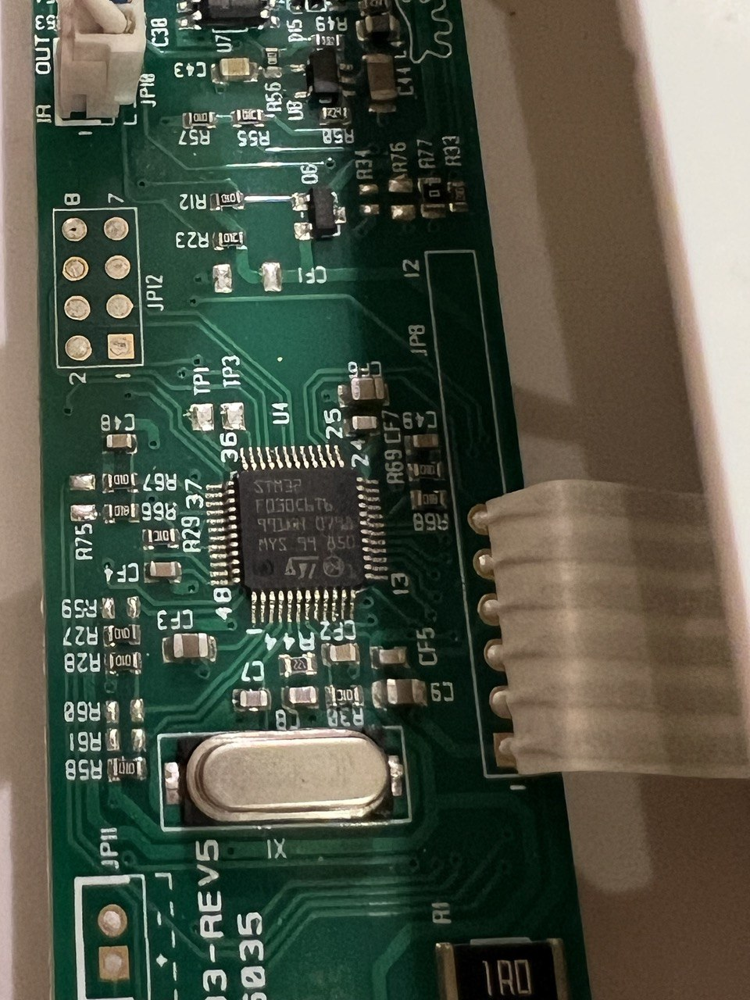
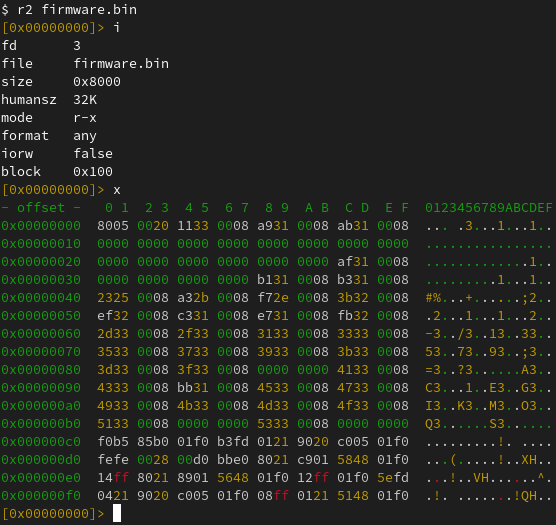
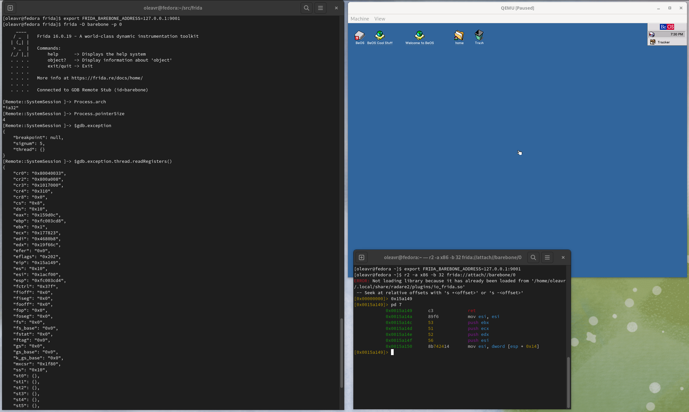
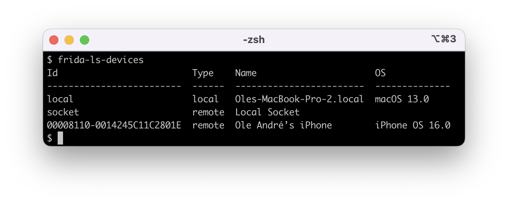
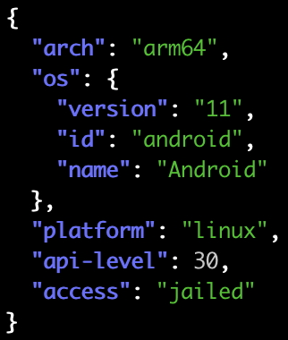
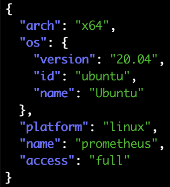
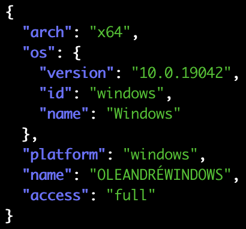
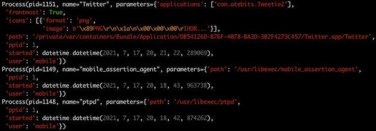
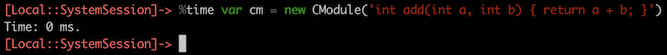

Some neat little bug-fixes, just in time for Christmas:
Frida 16.1.10 Released
release
24 Dec 2023
 oleavr
oleavr
oleavr
oleavr
Some neat little bug-fixes, just in time for Christmas:
oleavr
Quite a few goodies in this release:
oleavr
Three exciting changes this time around:
oleavr
Some neat refinements this time around:
oleavr
Just a quick bug-fix release to roll back two of the Interceptor/Relocator arm64 changes that went into the previous release. Turns out that these need some more refinement before they can land, so we will roll them back for now.
oleavr
Since our last release, @hsorbo and I had a lot of fun pair-programming on a wide range of exciting tech. Let’s dive right in.
We’ve introduced a brand new ApiResolver for Swift, which you can use like this:
const r = new ApiResolver('swift');
r.enumerateMatches('functions:*CoreDevice!*RemoteDevice*')
.forEach(({ name, address }) => {
console.log('Found:', name, 'at:', address);
});There’s also a new and exciting frida-tools release, 12.3.0, which upgrades frida-trace with Swift tracing support, using the new ApiResolver:
$ frida-trace Xcode -y '*CoreDevice!*RemoteDevice*'Our Module API now also provides enumerateSections() and enumerateDependencies(). And for when you want to scan loaded modules for specific section names, our existing module ApiResolver now lets you do this with ease:
const r = new ApiResolver('module');
r.enumerateMatches('sections:*!*text*/i')
.forEach(({ name, address }) => {
console.log('Found:', name, 'at:', address);
});There’s also a bunch of other exciting changes, so definitely check out the changelog below.
Enjoy!
oleavr
Some exciting improvements this time around:
oleavr
Time for a new release, just in time for the weekend:
oleavr
Time for a new release to refine a few things:
oleavr
Only a few changes this time around:
oleavr
For quite some years I’ve been dreaming of taking Frida beyond user-space software, to also support instrumenting OS kernels as well as barebone systems. Perhaps even microcontrollers…
Earlier this year my family’s cat door broke down. After some back and forth with the retailer, double-checking the installation and such, it would work for a little while before it eventually started malfunctioning.
This was obviously not much fun for our cats:
It’s also no surprise that they’d end up making a lot of noise, in turn making it hard to get a good night’s sleep when having to get up to let them back in manually.
I ended up buying a second cat door and, lo and behold, no more issues. The old one ended up collecting dust for a while. Something I kept thinking of was whether I could debug it, and perhaps even extend the software to do more useful things.
Feeling the urge to open it up to poke at the electronics inside of it, I eventually gave in:

That looked like an STM32F030C6T6, which is an ARM Cortex M0-based MCU. My first thought was whether I could dump the flash memory to do some static analysis.
After quickly skimming MCU docs, and a little bit of multimeter probing, I figured out the JP12 pads:
| PAD 1/2 | PAD 7/8 | ||
|---|---|---|---|
| BOOT0 | USART1 RX | SWDIO | GND |
| VDD | USART1 TX | SWCLK |
This made it easy to pull BOOT0 high, so the MCU boots into its internal bootloader instead of user code.
By hooking up a USB to 3.3V TTL device to the USART1 pads, I could dump the flash:
$ ./stm32flash -r firmware.bin /dev/ttyUSB0
stm32flash 0.7
http://stm32flash.sourceforge.net/
Interface serial_posix: 57600 8E1
Version : 0x31
Option 1 : 0x00
Option 2 : 0x00
Device ID : 0x0444 (STM32F03xx4/6)
- RAM : Up to 4KiB (2048b reserved by bootloader)
- Flash : Up to 32KiB (size first sector: 4x1024)
- Option bytes : 16b
- System memory : 3KiB
Memory read
Read address 0x08008000 (100.00%) Done.And perform some static analysis: 
Seeing as two of the other pads are connected to SWDIO and SWCLK, used for Serial Wire Debug (SWD), the natural next step was to hook up a Raspberry Pi Debug Probe to those. After getting that set up, I fired up OpenOCD:
$ openocd -f interface/cmsis-dap.cfg -f target/stm32f0x.cfg
Open On-Chip Debugger 0.11.0-g8e3c38f7-dirty (2023-05-05-14:25)
Licensed under GNU GPL v2
For bug reports, read
http://openocd.org/doc/doxygen/bugs.html
Info : auto-selecting first available session transport "swd". To override use 'transport select <transport>'.
Info : Listening on port 6666 for tcl connections
Info : Listening on port 4444 for telnet connections
Info : Using CMSIS-DAPv2 interface with VID:PID=0x2e8a:0x000c, serial=E6614103E78B482F
Info : CMSIS-DAP: SWD Supported
Info : CMSIS-DAP: FW Version = 2.0.0
Info : CMSIS-DAP: Interface Initialised (SWD)
Info : SWCLK/TCK = 0 SWDIO/TMS = 0 TDI = 0 TDO = 0 nTRST = 0 nRESET = 0
Info : CMSIS-DAP: Interface ready
Info : clock speed 1000 kHz
Info : SWD DPIDR 0x0bb11477
Info : stm32f0x.cpu: hardware has 4 breakpoints, 2 watchpoints
Info : starting gdb server for stm32f0x.cpu on 3333
Info : Listening on port 3333 for gdb connectionsThe idea I had been thinking about for a long time was to add a new Frida backend where the only process you can attach to is PID 0. Any scripts loaded there would actually be run locally, and implement the familiar JavaScript API. Any API that accesses memory, such as when dereferencing an int * by doing e.g. ptr(‘0x80000’).readInt(), would end up querying the target, through SWD in the above case.
I initially started sketching this where the backend would talk to the OpenOCD daemon through its telnet interface. But I quickly realized that it would be better to talk to its GDB-compatible remote stub. In this way, Frida will be able to instrument any target with an available remote stub. Whether that’s OpenOCD, Corellium (iOS kernel instrumentation!), QEMU, etc.
As for Interceptor, my thinking was that basic functionality would be implemented using breakpoints. But, only if the user supplies JavaScript callbacks. If function pointers are supplied instead, we could perform inline hooking so the target can run without any traps/ping-pongs with the host. This means it could even be used for observing and modifying hot code inside an OS kernel or MCU firmware.
After some initial sketching, I was able to run the following script:
Interceptor.breakpointKind = 'hard';
const THUMB_BIT = 1;
const initRest = ptr('0x0800306a').or(THUMB_BIT);
Interceptor.attach(initRest, {
onEnter(args) {
console.log('>>> init_rest()',
JSON.stringify(this.context, null, 2));
},
onLeave(retval) {
console.log(`<<< init_rest() retval=${retval}`);
}
});Using the Frida REPL:
$ frida -D barebone -p 0 -l demo.js
____
/ _ | Frida 16.1.0 - A world-class dynamic instrumentation toolkit
| (_| |
> _ | Commands:
/_/ |_| help -> Displays the help system
. . . . object? -> Display information about 'object'
. . . . exit/quit -> Exit
. . . .
. . . . More info at https://frida.re/docs/home/
. . . .
. . . . Connected to GDB Remote Stub (id=barebone)
[Remote::SystemSession ]-> $gdb.continue()
[Remote::SystemSession ]-> >>> init_rest() {
"r7": "0xffffffff",
"pc": "0x800306a",
"r8": "0xffffffff",
"xPSR": "0x41000000",
"r9": "0xffffffff",
"sp": "0x20000578",
"r0": "0x0",
"r10": "0xffffffff",
"lr": "0x8003069",
"r1": "0x40021008",
"r11": "0xffffffff",
"r2": "0xffffffff",
"r12": "0xffffffff",
"r3": "0xffffffff",
"r4": "0xffffffff",
"r5": "0xffffffff",
"r6": "0xffffffff"
}
<<< init_rest() retval=0x1A few things to note here:
While my fun little cat door side-quest is a great test case for the tiny part of the spectrum, there’s also a lot of potential in supporting larger systems.
One of the cooler use-cases there is definitely Corellium, as it means we can instrument the iOS kernel. Using a Tamarin Cable it should even be possible to get this working on a checkm8-exploitable physical device.
Before we touch on that though, let’s see if we can get things going with QEMU and a live Linux kernel.
First, we’ll fire up a VM we can play with:
$ pip install arm_now
$ arm_now start aarch64 --add-qemu-options='-gdb tcp::9000'
...
Welcome to arm_now
buildroot login:Next, we’ll use the Frida REPL to look around:
$ export FRIDA_BAREBONE_ADDRESS=127.0.0.1:9000
$ frida -D barebone -p 0
____
/ _ | Frida 16.1.0 - A world-class dynamic instrumentation toolkit
| (_| |
> _ | Commands:
/_/ |_| help -> Displays the help system
. . . . object? -> Display information about 'object'
. . . . exit/quit -> Exit
. . . .
. . . . More info at https://frida.re/docs/home/
. . . .
. . . . Connected to GDB Remote Stub (id=barebone)
[Remote::SystemSession ]-> Process.arch
"arm64"
[Remote::SystemSession ]-> Process.enumerateRanges('r-x')
[
{
"base": "0xffffff8008080000",
"protection": "r-x",
"size": 4259840
}
]
[Remote::SystemSession ]-> $gdb.state
"stopped"
[Remote::SystemSession ]-> $gdb.exception
{
"breakpoint": null,
"signum": 2,
"thread": {}
}
[Remote::SystemSession ]-> $gdb.exception.thread.readRegisters()
{
"cpsr": 1610613189,
"pc": "0xffffff8008096648",
"sp": "0xffffff80085f3f10",
"x0": "0x0",
"x1": "0xffffff80085e6b78",
"x10": "0x880",
"x11": "0xffffffc00e877180",
"x12": "0x0",
"x13": "0xffffffc00ffe1f30",
"x14": "0x0",
"x15": "0xfffffff8",
"x16": "0xffffffbeff000000",
"x17": "0x0",
"x18": "0xffffffc00ffe17e0",
"x19": "0xffffff80085e0000",
"x2": "0x40079f5000",
"x20": "0xffffff80085f892c",
"x21": "0xffffff80085f88a0",
"x22": "0xffffff80085ffe80",
"x23": "0xffffff80085ffe80",
"x24": "0xffffff80085d5028",
"x25": "0x0",
"x26": "0x0",
"x27": "0x0",
"x28": "0x405a0018",
"x29": "0xffffff80085f3f10",
"x3": "0x30c",
"x30": "0xffffff800808492c",
"x4": "0x0",
"x5": "0x40079f5000",
"x6": "0x1",
"x7": "0x1c0",
"x8": "0x2",
"x9": "0xffffff80085f3e80"
}
[Remote::SystemSession ]->You might wonder how we’ve implemented Process.enumerateRanges(). This part is for now only implemented on arm64, and it is accomplished by parsing the page tables. (And if we’re talking to Corellium’s remote stub we use a vendor-specific monitor command to save ourselves a lot of network roundtrips.)
So now that we’re peeking into a running kernel, one of the things we might want to do is find internal functions and data structures. This is where the memory- scanning API comes handy:
for (const r of Process.enumerateRanges('r-x')) {
console.log(JSON.stringify(r, null, 2));
const matches = Memory.scanSync(r.base, r.size,
'7b2000f0 fa03082a 992480d2 : 1f00009f ffffffff 1f00e0ff');
console.log('Matches:', JSON.stringify(matches, null, 2));
}Here we’re looking for the Linux kernel’s arm64 syscall handler, matching on its first three instructions. We use the masking feature to mask out the immediates of the ADRP and MOV instructions (first and third instruction).
Let’s take it for a spin:
$ frida -D barebone -p 0 -l scan.js
____
/ _ | Frida 16.1.0 - A world-class dynamic instrumentation toolkit
| (_| |
> _ | Commands:
/_/ |_| help -> Displays the help system
. . . . object? -> Display information about 'object'
. . . . exit/quit -> Exit
. . . .
. . . . More info at https://frida.re/docs/home/
. . . .
. . . . Connected to GDB Remote Stub (id=barebone)
Attaching...
{
"base": "0xffffff8008080000",
"size": 4259840,
"protection": "r-x"
}
Matches: [
{
"address": "0xffffff8008082f00",
"size": 12
}
]
[Remote::SystemSession ]->So now we’ve dynamically detected the kernel’s internal syscall handler! 🚀
Re-implementing the memory scanning feature was one of the highlights for me personally, as @hsorbo and I had a lot of fun pair-programming on it. The implementation is conceptually very similar to what we’re doing in our Fruity backend for jailed iOS, and our new Linux injector: instead of transferring data to the host, and searching that, we can get away with transferring only the search algorithm, to run that on the target.
The memory scanner implementation is written in Rust, and helped prepare the groundwork for a new cool feature I’m going to cover a bit later in this post.
So, now that we know where the Linux kernel’s syscall handler is, we can use Interceptor to install an instruction-level hook:
const el0Svc = ptr('0xffffff8008082f00');
Interceptor.attach(el0Svc, function (args) {
const { context } = this;
const scno = context.x8.toUInt32();
console.log(`syscall! scno=${scno}`);
});And try that out on our running VM:
$ frida -D barebone -p 0 -l kernhook.js
____
/ _ | Frida 16.1.0 - A world-class dynamic instrumentation toolkit
| (_| |
> _ | Commands:
/_/ |_| help -> Displays the help system
. . . . object? -> Display information about 'object'
. . . . exit/quit -> Exit
. . . .
. . . . More info at https://frida.re/docs/home/
. . . .
. . . . Connected to GDB Remote Stub (id=barebone)
[Remote::SystemSession ]-> $gdb.continue()
[Remote::SystemSession ]-> syscall! scno=63
syscall! scno=64
syscall! scno=73
syscall! scno=63
syscall! scno=64
syscall! scno=73
syscall! scno=63
syscall! scno=64
syscall! scno=56
syscall! scno=62
syscall! scno=64
syscall! scno=57
syscall! scno=29
syscall! scno=134
...And that’s it – we are monitoring system calls across the entire system! 💥
One of the first things you’ll probably notice if you try the previous example is that we slow down the system quite a bit. This is because Interceptor uses breakpoints when a JavaScript function is specified as the callback.
Not to worry though. If we write our callback in machine code and pass a NativePointer instead, Interceptor will pick a different strategy: it will modify the target’s machine code to redirect execution to a trampoline, which in turn calls the function at the address that we specify.
So that’s great. We only need to get our machine code into memory. Some of you may be familiar with our CModule API. We don’t yet implement that one in this new Barebone backend (and we will, eventually!), but we have something even better. Enter RustModule:
const kernBase = ptr('0xffffff8008080000');
const procPidStatus = kernBase.add(0x15e600);
const m = new RustModule(`
#[no_mangle]
pub unsafe extern "C" fn hook(ic: &mut gum::InvocationContext) -> () {
let regs = &mut ic.cpu_context;
println!("proc_pid_status() was called with x0={:#x} x1={:#x}",
regs.x[0],
regs.x[1],
);
}
`);
Interceptor.attach(procPidStatus, m.hook);The RustModule implementation uses a local Rust toolchain, assumed to be on your PATH, to compile the code you provide it into a no_std self-contained ELF. It relocates this ELF and writes it into the target’s memory. As part of this it will also parse the MMU’s page tables and insert new entries there so the uploaded code becomes part of the virtual address space, where the pages are read/write/execute.
In this example we’re hooking proc_pid_status() in our live Linux kernel.
Note that File.readAllText() can be used to avoid having to inline Rust code inside your JavaScript. Here we’re using inline code for the sake of brevity.
Now, with our Rust-powered agent, let’s take it for a spin:
$ frida -D barebone -p 0 -l kernhook2.js
____
/ _ | Frida 16.1.0 - A world-class dynamic instrumentation toolkit
| (_| |
> _ | Commands:
/_/ |_| help -> Displays the help system
. . . . object? -> Display information about 'object'
. . . . exit/quit -> Exit
. . . .
. . . . More info at https://frida.re/docs/home/
. . . .
. . . . Connected to GDB Remote Stub (id=barebone)
Error: to enable this feature, set FRIDA_BAREBONE_HEAP_BASE to the physical base address to use, e.g. 0x48000000
at <eval> (/home/oleavr/src/demo/kernhook2.js:13)
at evaluate (native)
at <anonymous> (/frida/repl-2.js:1)
[Remote::SystemSession ]->Oops! That didn’t quite work. There is still one piece missing in our new backend: we don’t yet have any “kernel bridges” in place that automatically fingerprint the internals of known kernels in order to find a suitable internal memory allocator we can use. This will also be needed to implement APIs such as Process.enumerateModules(), which will allow listing the loaded kernel modules/kexts. We could also locate the kernel’s process list and implement enumerate_processes(), so frida-ps works. And those are only a couple of examples… How about injecting frida-gadget into a user-space process? That would be super-useful for an embedded system where we want to avoid modifying the flash. Anyway, I digress 😊
So, on MCUs and unknown kernels you will have to tell Frida where, in physical memory, we may clobber if you want to use intrusive features such as RustModule, Interceptor in its inline hooking mode, Memory.alloc(), etc.
With that in mind, let’s retry our example, but this time we’ll set the FRIDA_BAREBONE_HEAP_BASE environment variable:
$ export FRIDA_BAREBONE_HEAP_BASE=0x48000000
$ frida -D barebone -p 0 -l kernhook2.js
____
/ _ | Frida 16.1.0 - A world-class dynamic instrumentation toolkit
| (_| |
> _ | Commands:
/_/ |_| help -> Displays the help system
. . . . object? -> Display information about 'object'
. . . . exit/quit -> Exit
. . . .
. . . . More info at https://frida.re/docs/home/
. . . .
. . . . Connected to GDB Remote Stub (id=barebone)
[Remote::SystemSession ]-> m
{
"hook": "0xffffff80080103e0"
}
[Remote::SystemSession ]-> $gdb.continue()Yay! 🎉 So now, in the terminal where we have QEMU running, let’s try accessing /proc/$pid/status three times, so the hooked function gets called:
# head -3 /proc/self/status
Name: head
Umask: 0022
State: R (running)
# head -3 /proc/self/status
Name: head
Umask: 0022
State: R (running)
# head -3 /proc/self/status
Name: head
Umask: 0022
State: R (running)Over in our REPL, we should see our hook() getting hit three times:
proc_pid_status() was called with x0=0xffffffc00d4bca00 x1=0xffffff8008608758
proc_pid_status() was called with x0=0xffffffc00d4bc780 x1=0xffffff8008608758
proc_pid_status() was called with x0=0xffffffc00d4bc780 x1=0xffffff8008608758It works! 🥳
There’s one important thing to note though: In our example we’re using println!(), and this actually causes the target to hit a breakpoint, so the host can read out the message passed to it, and bubble that up just like a console.log() from JavaScript. This means you should only use this feature for temporary debugging purposes, and throttle how often it’s called if on a hot code-path.
The next thing you might want to do is pass external symbols into your RustModule. For example if you want to call internal kernel functions from your Rust code. This is accomplished by declaring them like this:
extern "C" {
fn frobnicate(data: *const u8, len: usize);
}Then when constructing the RustModule, pass it in through the second argument:
const m = new RustModule(source, {
frobnicate: ptr('0xffffff8008084320'),
});For those of you familiar with our CModule API, this part is exactly the same. You can also use NativeCallback to implement portions host-side, in JavaScript, but this needs to be handled with care to avoid performance bottlenecks. Going in the opposite direction there is also NativeFunction, which you can use to call into your Rust code from JavaScript.
Last but not least, you may also want to import existing Rust crates from crates.io. This is also supported:
const m = new RustModule(source, {}, {
dependencies: [
'cstr_core = { version = "0.2.6", default-features = false }',
]
});What’s so exciting is that all of the Linux bits above all “just work” on Corellium as well. All you need to do is point FRIDA_BAREBONE_ADDRESS at the endpoint shown in Corellium’s UI under “Advanced Options” -> “gdb”.
Shout-out to the awesome folks at Corellium for their support while doing this. They even implemented new protocol features to improve interoperability 🔥
This new backend should be considered alpha quality for now, but I think it’s already capable of so many useful things that it would be a shame to keep it sitting on a branch.
You may notice that the JS APIs implemented only cover a subset, and not all features are available on non-arm64 targets yet. But all of this will improve as the backend matures. (Pull-requests are super-welcome!)
And as a fun aside, here’s Frida attached to the BeOS kernel:

There’s also a bunch of other exciting changes, so definitely check out the changelog below.
Enjoy!
oleavr
Some exciting stability improvements this time around:
We solve these problems by:
oleavr
Just a quick bug-fix release reviving support for Android x86/x86_64 systems with ARM emulation. This is still a blind spot in our CI, and I forgot all about it while working on the new Linux injector. Kudos to @stopmosk for promptly reporting and helping triage this regression.
oleavr
Time for a bug-fix release with only one change: turns out the ARMv8 BTI interop introduced in 16.0.14 is problematic on Apple A12+ SoCs when running in arm64e mode, i.e. with pointer authentication enabled.
Kudos to @miticollo for reporting and helping triage the cause, and @mrmacete for digging further into it, brainstorming potential fixes, and implementing the fix. You guys rock! ❤️
oleavr
Seeing as TypeScript 5.0 was released last month, and frida.Compiler was still at 4.9, we figured it’s time to upgrade it. So with this release we’re now shipping 5.0.4. The upgrade also revealed a couple of bugs in our V8-based runtime, and that our embedded frida-gum typings were slightly outdated.
Enjoy!
oleavr
Here’s a release fixing two stability issues affecting users on Apple platforms:
oleavr
More exciting bug-fixes:
oleavr
Only a few bug-fixes this time around:
oleavr
Lots of goodies this time around. One of them is our brand new Linux injector. This was a lot of fun, especially as it involved lots of pair-programming with @hsorbo.
We’re quite excited about this one. Frida now supports injecting into Linux containers, such as Flatpak apps. Not just that, it can finally inject code into processes without a dynamic linker present.
Another neat improvement is if you’re running Frida on Linux >= 3.17, you may notice that it no longer writes out any temporary files. This is accomplished through memfd and a reworked injector signaling mechanism.
Our new Linux injector has a fully asynchronous design, without any dangerous blocking operations that can result in deadlocks. It is also the first injector to support providing a control channel to the injected payload.
Down the road the plan is to implement this in our other backends as well, and make it part of our cross-platform Injector API. The thinking there is to make it easier to implement custom payloads.
There are also many other goodies in this release, so definitely check out the changelog below.
Enjoy!
oleavr
oleavr
This time we’re bringing you additional iOS 15 improvements, an even better frida.Compiler, brand new support for musl libc, and more. Do check out the changelog below for more details.
Enjoy!
oleavr
The main theme of this release is improved support for jailbroken iOS. We now support iOS 16.3, including app listing and launching. Also included is improved support for iOS 15, and some regression fixes for older iOS versions.
There are also some other goodies in this release, so definitely check out the changelog below.
Enjoy!
oleavr
This time we’ve focused on polishing up our macOS and iOS support. For those of you using spawn() and spawn-gating for early instrumentation, things are now in much better shape.
The most exciting change in this release is all about performance. Programs that would previously take a while to start when launched using Frida should now be a lot quicker to start. This long-standing bottleneck was so bad that an app with a lot of libraries could fail to launch due to Frida slowing down its startup too much.
Next up we have a fix for a long-standing reliability issue. Turns out our file-descriptors used for IPC did not have SO_NOSIGPIPE set, so we could sometimes end up in a situation where either Frida or the target process terminated abruptly, and the other side would end up getting zapped by SIGPIPE while trying to write().
The previous release introduced some bold new changes to support injecting into hardened targets. Since then @hsorbo and me dug back into our recent GLib kqueue() patch and fixed some rough edges. We also fixed a regression where attaching to hardened processes through usbmuxd would fail with “connection closed”.
On the Linux and Android side of things, some of you may have noticed that thread enumeration could fail randomly, especially inside busy processes. That issue has now finally been dealt with.
Also, thanks to @drosseau we also have an error-handling improvement that should avoid some confusion when things fail in 32-/64-bit cross-arch builds.
That is all this time around. Enjoy!
oleavr
It’s been a busy week. Let’s dive in.
This week @hsorbo and me spent some days trying to get Frida working better in sandboxed environments. Our goal was to be able to get Frida into Apple’s SpringBoard process on iOS. But to make things a little interesting, we figured we’d start with imagent, the daemon that handles the iMessage protocol. It has been hardened quite a bit in recent OS versions, and Frida was no longer able to attach to it.
So we first started out with this daemon on macOS, just to make things easier to
debug. After finding the daemon’s sandbox profile at
/System/Library/Sandbox/Profiles/com.apple.imagent.sb, it was hard to miss the
syscall policy. It disallows all syscalls by default, and carefully enables some
groups of syscalls, plus some specific ones that it also needs.
We then discovered that Frida’s use of the pipe() syscall was the first hurdle. This code is not actually in Frida itself, but in GLib, the excellent library that Frida uses for data structures, cross-platform threading primitives, event loop, etc. It uses pipe() to implement a primitive needed for its event loop. More precisely, it uses this primitive to wake up the event loop’s thread in case it is blocking in a poll()-style syscall.
Anyway, we noticed that kqueue() is part of the groups of syscalls explicitly allowed. Given that Apple’s kqueue() supports polling file-descriptors and Mach ports at the same time, among other things, it’s likely to be needed in a lot of places, and thus allowed by a broad range of sandbox profiles. It is also a great fit for us, since EVFILT_USER means there is a way to wake up the event loop’s thread. Not just that, but it doesn’t cost us a single file-descriptor.
After lots of coffee and fun pair-programming, we arrived at a patch that switches GLib’s event loop over to kqueue() on OSes that support it. This got us to the next hurdle: Frida is using socket APIs for file-descriptor passing, part of the child-gating feature used for instrumenting children of the current process. However, since hardened system services aren’t likely to be allowed to do things like fork() and execve(), it is fine to simply degrade this part of our functionality. That was tackled next, and boom… Frida is finally able to attach to imagent. 🎉 Yay!
Next up we moved over to iOS and took it for a spin there. Much to our surprise, Frida could attach to SpringBoard right out of the gate. Later we tried notifyd and profiled, and could attach to those too. Even on latest iOS 16. But, there’s still work to do, as Frida cannot yet attach to imagent and WebContent on iOS. This is exciting progress, though.
While doing all of this we also tracked down a crash on iOS where frida-server would get killed due to EXC_GUARD during injection on iOS >= 15. That has now also been fixed, just in time for the release!
Another exciting piece of news is that @mrmacete improved our DebugSymbol API to consistently provide the full path instead of only the filename. This was a long-standing inconsistency across our different platform backends. While at it he also exposed the column, so you also get that in addition to the line number.
Last but not least it’s worth mentioning an exciting new improvement in Interceptor. For those of you using it from C, there’s now replace_fast() to complement replace(). This new fast variant emits an inline hook that vectors directly to your replacement. You can still call the original if you want to, but it has to be called through the function pointer that Interceptor gives you as an optional out-parameter. It also cannot be combined with attach() for the same target. It is a lot faster though, so definitely good to be aware of when needing to hook functions in hot code-paths.
That’s all this time. Enjoy!
oleavr
Turns out a serious stability regression made it into Frida 16.0.3, where our out-of-process dynamic linker for Apple OSes could end up crashing the target process. This is especially disastrous when the target process is launchd, as it results in a kernel panic. Thanks to the amazing work of @mrmacete, this embarrassing regression is now fixed. 🎉 Enjoy!
oleavr
Quick bug-fix release this time around: the Android system_server instrumentation adjustments should now work reliably on all systems.
oleavr
Here’s a brand new release just in time for the weekend! 🎉 A few critical stability fixes this time around.
Enjoy!
oleavr
Some cool new things this time. Let’s dive right in.
One of the exciting contributions this time around came from @tmm1, who opened a whole bunch of pull-requests adding support for tvOS. Yay! As part of landing these I took the opportunity to add support for watchOS as well.
This also turned out to be a great time to simplify the build system, getting rid of complexity introduced to support non-Meson build systems such as autotools. So as part of this clean-up we now have separate binaries for Simulator targets such as the iOS Simulator, tvOS Simulator, etc. Previously we only supported the x86_64 iOS Simulator, and now arm64 is covered as well.
Earlier this week, @hsorbo and I did some fun and productive pair-programming where we tackled the dynamic linker changes in Apple’s latest OSes. Those of you using Frida on i/macOS may have noticed that spawn() stopped working on macOS 13 and iOS 16.
This was a fun one. It turns out that the dyld binary on the filesystem now looks in the dyld_shared_cache for a dyld with the same UUID as itself, and if found vectors execution there instead. Explaining why this broke Frida’s spawn() functionality needs a little context though, so bear with me.
Part of what Frida does when you call attach() is to inject its agent, if it hasn’t already done this. Before performing the injection however, we check if the process is sufficiently initialized, i.e. whether libSystem has been initialized.
When this isn’t the case, such as after spawn(), where the target is suspended at dyld’s entrypoint, Frida basically advances the main thread’s execution until it reaches a point where libSystem is ready. This is typically accomplished using a hardware breakpoint.
So because the new dyld now chains to another copy of itself, inside the dyld_shared_cache, Frida was placing a breakpoint in the version mapped in from the filesystem, instead of the one in the cache. Obviously that never got hit, so we would end up timing out while waiting for this to happen.
The fix was reasonably straight-forward though, so we managed to squeeze this one into the release in the last minute.
The frida.Compiler just got a whole lot better, and now supports additional configuration through tsconfig.json, as well as using local frida-gum typings.
The V8 debugger integration was knocked out by the move to having one V8 Isolate per script, which was a delicate refactoring needed for V8 snapshot support. This is now back in working order.
One of the heavier lifts this time around was clearly dependency upgrades, where most of our dependencies have now been upgraded: from Capstone supporting ARMv9.2 to latest GLib using PCRE2, etc.
The move to PCRE2 means our Memory.scan() regex support just got upgraded, since GLib was previously using PCRE1. We don’t yet enable PCRE2’s JIT on any platforms though, but this would be an easy thing to improve down the road.
We also have a brand new release of frida-tools, which thanks to @tmm1 has a new and exciting feature. The frida-ls-devices tool now displays higher fidelity device names, with OS name and version displayed in a fourth column:

To upgrade:
$ pip3 install -U frida frida-toolsThere are also some other goodies in this release, so definitely check out the changelog below.
Enjoy!
oleavr
It’s Friday! Here’s a brand new release with lots of improvements:
oleavr
Two small but significant bugfixes this time around:
oleavr
Hope some of you are enjoying frida.Compiler! In case you have no idea what that is, check out the 15.2.0 release notes.
Back in 15.2.0 there was something that bothered me about frida.Compiler: it would take a few seconds just to compile a tiny “Hello World”, even on my i9-12900K Linux workstation:
$ time frida-compile explore.ts -o _agent.js
real 0m1.491s
user 0m3.016s
sys 0m0.115sAfter a lot of profiling and insane amounts of yak shaving, I finally arrived at this:
$ time frida-compile explore.ts -o _agent.js
real 0m0.325s
user 0m0.244s
sys 0m0.109sThat’s quite a difference! This means on-the-fly compilation use-cases such as
frida -l explore.ts are now a lot smoother. More importantly though, it means
Frida-based tools can load user scripts this way without making their users
suffer through seconds of startup delay.
You might be wondering how we made our compiler so quick to start. If you take a peek under the hood, you’ll see that it uses the TypeScript compiler. This is quite a bit of code to parse and run at startup. Also, loading and processing the .d.ts files that define all of the types involved is actually even more expensive.
The first optimization that we implemented back in 15.2 was to simply use our V8 runtime if it’s available. That alone gave us a nice speed boost. However, after a bit of profiling it was clear that V8 realized that it’s dealing with a heavy workload once we start processing the .d.ts files, and that resulted in it spending a big chunk of time just optimizing the TypeScript compiler’s code.
This reminded me of a really cool V8 feature that I’d noticed a long time ago: custom startup snapshots. Basically if we could warm up the TypeScript compiler ahead of time and also pre-create all of the .d.ts source files when building Frida, we could snapshot the VM’s state at that point and embed the resulting startup snapshot. Then at runtime we can boot from the snapshot and hit the ground running.
As part of implementing this, I extended GumJS so a snapshot can be passed to create_script(), together with the source code of the agent. There is also snapshot_script(), used to create the snapshot in the first place.
For example:
import frida
session = frida.attach(0)
snapshot = session.snapshot_script("const example = { magic: 42 };",
warmup_script="true",
runtime="v8")
print("Snapshot created! Size:", len(snapshot))This snapshot could then be saved to a file and later loaded like this:
script = session.create_script("console.log(JSON.stringify(example));",
snapshot=snapshot,
runtime="v8")
script.load()Note that snapshots need to be created on the same OS/architecture/V8 version as they’re later going to be loaded on.
Another exciting bit of news is that we’ve upgraded V8 to 10.x, which means we get to enjoy the latest VM refinements and JavaScript language features. Considering that our last upgrade was more than two years ago, it’s definitely a solid upgrade this time around.
As you may recall from the 15.1.15 release notes, we were closer than ever to reaching the milestone where all of Frida can be built with a single build system. The only component left at that point was V8, which we used to build using Google’s GN build system. I’m happy to report that we have finally reached that milestone. We now have a brand new Meson build system for V8. Yay!
There’s also a bunch of other exciting changes, so definitely check out the changelog below.
Enjoy!
oleavr
Two more improvements, just in time for the weekend:
oleavr
Two small but significant bugfixes this time around:
oleavr
Super-excited about this one. What I’ve been wanting to do for years is to streamline Frida’s JavaScript developer experience. As a developer I may start out with a really simple agent, but as it grows I start to feel the pain.
Early on I may want to split up the agent into multiple files. I may also want to use some off-the-shelf packages from npm, such as frida-remote-stream. Later I’d want code completion, inline docs, type checking, etc., so I move the agent to TypeScript and fire up VS Code.
Since we’ve been piggybacking on the amazing frontend web tooling that’s already out there, we already have all the pieces of the puzzle. We can use a bundler such as Rollup to combine our source files into a single .js, we can use @frida/rollup-plugin-node-polyfills for interop with packages from npm, and we can plug in @rollup/plugin-typescript for TypeScript support.
That is quite a bit of plumbing to set up over and over though, so I eventually created frida-compile as a simple tool that does the plumbing for you, with configuration defaults optimized for what makes sense in a Frida context. Still though, this does require some boilerplate such as package.json, tsconfig.json, and so forth.
To solve that, I published frida-agent-example, a repo that can be cloned and used as a starting point. That is still a bit of friction, so later frida-tools got a new CLI tool called frida-create. Anyway, even with all of that, we’re still asking the user to install Node.js and deal with npm, and potentially also feel confused by the .json files just sitting there.
Then it struck me. What if we could use frida-compile to compile frida-compile into a self-contained .js that we can run on Frida’s system session? The system session is a somewhat obscure feature where you can load scripts inside of the process hosting frida-core. For example if you’re using our Python bindings, that process would be the Python interpreter.
Once we are able to run that frida-compile agent inside of GumJS, we can communicate with it and turn that into an API. This API can then be exposed by language bindings, and frida-tools can consume it to give the user a frida-compile CLI tool that doesn’t require Node.js/npm to be installed. Tools such as our REPL can seamlessly use this API too if the user asks it to load a script with a .ts extension.
And all of that is precisely what we have done! 🥳
Here’s how easy it is to use it from Python:
import frida
compiler = frida.Compiler()
bundle = compiler.build("agent.ts")The bundle variable is a string that can be passed to create_script(), or written to a file.
Running that example we might see something like:
Traceback (most recent call last):
File "/home/oleavr/src/explore.py", line 4, in <module>
bundle = compiler.build("agent.ts")
File "/home/oleavr/.local/lib/python3.10/site-packages/frida/core.py", line 76, in wrapper
return f(*args, **kwargs)
File "/home/oleavr/.local/lib/python3.10/site-packages/frida/core.py", line 1150, in build
return self._impl.build(entrypoint, **kwargs)
frida.NotSupportedError: compilation failedThat makes us wonder why it failed, so let’s add a handler for the diagnostics signal:
import frida
def on_diagnostics(diag):
print("on_diagnostics:", diag)
compiler = frida.Compiler()
compiler.on("diagnostics", on_diagnostics)
bundle = compiler.build("agent.ts")And suddenly it’s all making sense:
on_diagnostics: [{'category': 'error', 'code': 6053,
'text': "File '/home/oleavr/src/agent.ts' not "
"found.\n The file is in the program "
"because:\n Root file specified for"
" compilation"}]
…We forgot to actually create the file! Ok, let’s create agent.ts:
console.log("Hello from Frida:", Frida.version);And let’s also write that script to a file:
import frida
def on_diagnostics(diag):
print("on_diagnostics:", diag)
compiler = frida.Compiler()
compiler.on("diagnostics", on_diagnostics)
bundle = compiler.build("agent.ts")
with open("_agent.js", "w", newline="\n") as f:
f.write(bundle)If we now run it, we should have an _agent.js ready to go:
$ cat _agent.js
📦
175 /explore.js.map
39 /explore.js
✄
{"version":3,"file":"explore.js","sourceRoot":"/home/oleavr/src/","sources":["explore.ts"],"names":[],"mappings":"AAAA,OAAO,CAAC,GAAG,CAAC,SAAS,KAAK,CAAC,OAAO,GAAG,CAAC,CAAC"}
✄
console.log(`Hello ${Frida.version}!`);This weird-looking format is how GumJS’ allows us to opt into the new ECMAScript Module (ESM) format where code is confined to the module it belongs to instead of being evaluated in the global scope. What this also means is we can load multiple modules that import/export values. The .map files are optional and can be omitted, but if left in they allow GumJS to map the generated JavaScript line numbers back to TypeScript in stack traces.
Anyway, let’s take _agent.js for a spin:
$ frida -p 0 -l _agent.js
____
/ _ | Frida 15.2.0 - A world-class dynamic instrumentation toolkit
| (_| |
> _ | Commands:
/_/ |_| help -> Displays the help system
. . . . object? -> Display information about 'object'
. . . . exit/quit -> Exit
. . . .
. . . . More info at https://frida.re/docs/home/
. . . .
. . . . Connected to Local System (id=local)
Attaching...
Hello 15.2.0!
[Local::SystemSession ]->It works! Now let’s try refactoring it to split the code into two files:
import { log } from "./log.js";
log("Hello from Frida:", Frida.version);export function log(...args: any[]) {
console.log(...args);
}If we now run our example compiler script again, it should produce a slightly more interesting-looking _agent.js:
📦
204 /agent.js.map
72 /agent.js
199 /log.js.map
58 /log.js
✄
{"version":3,"file":"agent.js","sourceRoot":"/home/oleavr/src/","sources":["agent.ts"],"names":[],"mappings":"AAAA,OAAO,EAAE,GAAG,EAAE,MAAM,UAAU,CAAC;AAE/B,GAAG,CAAC,mBAAmB,EAAE,KAAK,CAAC,OAAO,CAAC,CAAC"}
✄
import { log } from "./log.js";
log("Hello from Frida:", Frida.version);
✄
{"version":3,"file":"log.js","sourceRoot":"/home/oleavr/src/","sources":["log.ts"],"names":[],"mappings":"AAAA,MAAM,UAAU,GAAG,CAAC,GAAG,IAAW;IAC9B,OAAO,CAAC,GAAG,CAAC,GAAG,IAAI,CAAC,CAAC;AACzB,CAAC"}
✄
export function log(...args) {
console.log(...args);
}Loading that into the REPL should yield the exact same result as before.
Let’s turn our toy compiler into a tool that loads the compiled script, and recompiles whenever a source file changes on disk:
import frida
import sys
session = frida.attach(0)
script = None
def on_output(bundle):
global script
if script is not None:
print("Unloading old bundle...")
script.unload()
script = None
print("Loading bundle...")
script = session.create_script(bundle)
script.on("message", on_message)
script.load()
def on_diagnostics(diag):
print("on_diagnostics:", diag)
def on_message(message, data):
print("on_message:", message)
compiler = frida.Compiler()
compiler.on("output", on_output)
compiler.on("diagnostics", on_diagnostics)
compiler.watch("agent.ts")
sys.stdin.read()And off we go:
$ python3 explore.py
Loading bundle...
Hello from Frida: 15.2.0If we leave that running and then edit the source code on disk we should see some new output:
Unloading old bundle...
Loading bundle...
Hello from Frida version: 15.2.0Yay!
We can also use frida-tools’ new frida-compile CLI tool:
$ frida-compile agent.ts -o _agent.jsIt also supports watch mode:
$ frida-compile agent.ts -o _agent.js -wOur REPL is also powered by the new frida.Compiler:
$ frida -p 0 -l agent.ts
____
/ _ | Frida 15.2.0 - A world-class dynamic instrumentation toolkit
| (_| |
> _ | Commands:
/_/ |_| help -> Displays the help system
. . . . object? -> Display information about 'object'
. . . . exit/quit -> Exit
. . . .
. . . . More info at https://frida.re/docs/home/
. . . .
. . . . Connected to Local System (id=local)
Compiled agent.ts (1428 ms)
Hello from Frida version: 15.2.0
[Local::SystemSession ]->Shoutout to @hsorbo for the fun and productive pair-programming sessions where we were working on frida.Compiler together! 🙌
There are also quite a few other goodies in this release, so definitely check out the changelog below.
Enjoy!
oleavr
A couple of exciting new things in this release.
Those of you using our JavaScript File API may have noticed that it supports writing to the given file, but there was no way to read from it. This is now supported.
For example, to read each line of a text-file as a string:
const f = new File('/etc/passwd', 'r');
let line;
while ((line = f.readLine()) !== '') {
console.log(`Read line: ${line.trimEnd()}`);
}(Note that this assumes that the text-file is UTF-8-encoded. Other encodings are not currently supported.)
You can also read a certain number of bytes at some offset:
const f = new File('/var/run/utmp', 'rb');
f.seek(0x2c);
const data = f.readBytes(3);
const str = f.readText(3);The argument may also be omitted to read the rest of the file. But if you’re just looking to read a text file in one go, there’s an easier way:
const text = File.readAllText('/etc/passwd');Reading a binary file is just as easy:
const bytes = File.readAllBytes('/var/run/utmp');(Where bytes is an ArrayBuffer.)
Sometimes you may also want to dump a string into a text file:
File.writeAllText('/tmp/secret.txt', 'so secret');Or perhaps dump an ArrayBuffer:
const data = args[0].readByteArray(256);
File.writeAllBytes('/tmp/mystery.bin', data);Going back to the example earlier, seek() also supports relative offsets:
f.seek(7, File.SEEK_CUR);
f.seek(-3, File.SEEK_END);Retrieving the current file offset is just as easy:
const offset = f.tell();The other JavaScript API addition this time around is for when you want to compute checksums. While this could be implemented in JavaScript entirely in “userland”, we do get it fairly cheap since Frida depends on GLib, and it already provides a Checksum API out of the box. All we needed to do was expose it.
Putting it all together, this means we can read a file and compute its SHA-256:
const utmp = File.readAllBytes('/var/run/utmp');
const str = Checksum.compute('sha256', utmp);Or, for more control:
const checksum = new Checksum('sha256');
checksum.update(File.readAllText('/etc/hosts'));
checksum.update(File.readAllBytes('/var/run/utmp'));
console.log('Result:', checksum.getString());
console.log(hexdump(checksum.getDigest(), { ansi: true }));(You can learn more about this API from our TypeScript bindings.)
There are also a few other goodies in this release, so definitely check out the changelog below.
Enjoy!
oleavr
It appears I should have had some more coffee this morning, so here’s another release to actually fix this broken fix back in 15.1.25:
- java: (android) Prevent ART from compiling replaced methods
Turns out the kAccCompileDontBother constant changed in Android 8.1. It also didn’t exist before 7.0. Oops! This release fixes it, for real this time 😊
oleavr
oleavr
Quite a few exciting bits in this release. Let’s dive right in.
Some great news for those of you using Frida on 32- and 64-bit ARM. Up until now, we have only exposed the CPU’s integer registers, but as of this release, FPU/vector registers are also available! 🎉
For 32-bit ARM this means q0 through q15, d0 through d31, and s0 through s31. As for 64-bit ARM they’re q0 through q31, d0 through d31, and s0 through s31. If you’re accessing these from JavaScript, the vector properties are represented using ArrayBuffer, whereas for the others we’re using the number type.
Our existing Java.backtrace() API now provides a couple of new properties in the returned frames, which now also expose methodFlags and origin.
I finally plugged a memory leak in our RPC server-side code. This was introduced by me in 15.1.10 when implementing an optimization in the Vala compiler’s code generation for DBus reply handling. Shoutout to @rev1si0n for reporting and helping track down this regression!
There are also some other goodies in this release, so definitely check out the changelog below.
Enjoy!
oleavr
Only one change this time, but it’s an important one for those of you using Frida on Android: Our Java method hooking implementation was crashing in some cases, where we would pick a scratch register that conflicted with the generated code. This is now fixed.
Enjoy!
oleavr
The main theme of this release is OS support, where we’ve fixed some rough edges on Android 12, and introduced preliminary support for Android 13. While working on frida-java-bridge I also found myself needing some of the JVMTI code in the JVM-specific backend. Those bits are now shared, and the JVM-specific code is in better shape, with brand new support for JDK 17.
We have also improved stability in several places, and made it easier to use the CodeWriter APIs safely. Portability has also been improved, where our QuickJS-based JavaScript runtime finally works when cross-compiled for big-endian from a little-endian build machine, and vice versa.
To learn more, be sure to check out the changelog below.
Enjoy!
oleavr
Turns out the major surgery that Gum went through in 15.1.15 introduced some error-handling regressions. Errors thrown vs. actually expected by the Vala code in frida-core did not match, which resulted in the process crashing instead of a friendly error bubbling up to e.g. the Python bindings. That is now finally taken care of. I wish we had noticed it sooner, though — we’re clearly lacking test coverage in this area.
Beside the error-handling fixes, we’re also including a build system fix for incremental build issues. Kudos to Londek for this nice contribution.
Enjoy!
oleavr
oleavr
oleavr
Turns out 15.1.18 had a release automation bug that resulted in stale Python binding artifacts getting uploaded.
To make this release a little happier, I also threw in a Stalker improvement for x86/64, where the clone3 syscall is now handled as well. This was caught by Stalker’s test-suite on some systems.
Enjoy!
oleavr
Lots of improvements all over the place this time. Many stability improvements.
I have continued improving our CI and build system infrastructure. QNX and MIPS support are back from the dead, after long-standing regressions. These went unnoticed due to lack of CI coverage. We now have CI in place to ensure that won’t happen again.
Do check out the changelog below for a full overview of what’s new.
Enjoy!
oleavr
One notable improvement in this release is that Java.backtrace() got a major
overhaul. It is now lazy and >10x faster. I have also refined its API,
which is now considered stable.
While working on frida-java-bridge, I optimized how Env objects are handled, so we can recycle an existing instance if we already have one for the current thread.
The remaining goodies are covered by the changelog below, so definitely check it out.
Enjoy!
oleavr
This time we’re bringing you two bugfixes and one new feature, just in time for the weekend.
Gum used to depend on GIO, but that dependency was removed in the previous release. The unfortunate result of that change was that agent and gadget no longer tore down GIO, as they were relying on Gum’s teardown code doing that. What this meant was that we were leaving threads behind, and that is never a good thing. So that’s the first bugfix.
Also in the previous release, over in our Python bindings, setup.py went through some heavy changes. We improved the .egg download logic, but managed to break the local .egg logic. That’s the second bugfix.
Onto the new feature. For those of you using Gum’s JavaScript bindings, GumJS,
we now support console.count() and console.countReset(). These are
implemented by browsers and Node.js, and make it easy to count the number of
times a given label has been seen. Kudos to @yotamN for this nice
contribution.
Enjoy!
oleavr
Quite a few exciting bits in this release. Let’s dive right in.
Our ambition is to support all platforms that our users care about. In this release I wanted to plant the first seed in expanding that to BSDs. So now I’m thrilled to announce that Frida finally also supports FreeBSD! 🎉
For now we only support x86_64 and arm64, but expanding to the remaining architectures is straight-forward in case anybody is interested in helping out.
The porting effort resulted in several architectural refinements and improved robustness for ELF-based OSes in general. It also gave me some ideas on how to improve our Linux injector to support injecting into containers, which is something I’d like to do down the road.
Back in 15.1.10, Stalker got a massive performance boost on x86/64. In this release those same ideas have been applied to our arm64 backend. This includes improved locality, better inline caches, etc. I’m told we were able to beat or match QEMU in FuzzBench back then, and now we should be in good shape on arm64 as well. We also managed to improve stability while at it. Exciting!
Back in 14.1, @meme wired up build system support for GObject Introspection. This means we have a machine-readable description of all of our APIs, which lets us piggyback on existing language binding infrastructure, and even get auto-generated reference docs for free.
This release adds a lot of annotations and doc-strings to Gum, and we are now closer than ever to having auto-generated reference docs. Still some work left to do before it makes sense to publish the generated documentation, but it’s not far off. If anyone is interested in pitching in, check out Gum’s CI and have a look at the warnings output by GObject Introspection.
One thing I really like about the Meson build system is its support for subprojects. Gum now supports being used as a subproject. Some of you may already be consuming Gum through its devkit binaries, and now you have a brand new option that is even easier.
The main advantage over using a devkit is that everything is built from source, so it’s easy to experiment with the code.
Let’s say we have a file hello.c that contains:
#define _GNU_SOURCE
#include <dlfcn.h>
#include <fcntl.h>
#include <gum.h>
#include <stdio.h>
#include <unistd.h>
static int (* open_impl) (const char * path, int oflag, ...);
static int replacement_open (const char * path, int oflag, ...);
int
main (int argc,
char * argv[])
{
gum_init ();
GumInterceptor * interceptor = gum_interceptor_obtain ();
gum_interceptor_begin_transaction (interceptor);
open_impl = dlsym (RTLD_DEFAULT, "open");
gum_interceptor_replace (interceptor, open_impl, replacement_open,
NULL, NULL);
gum_interceptor_end_transaction (interceptor);
close (open_impl ("/etc/hosts", O_RDONLY));
close (open_impl ("/etc/fstab", O_RDONLY));
return 0;
}
static int
replacement_open (const char * path,
int oflag,
...)
{
printf ("!!! open(\"%s\", 0x%x)\n", path, oflag);
return open_impl (path, oflag);
}To build it we can create a meson.build next to it with the following:
project('hello', 'c')
gum = dependency('frida-gum-1.0')
executable('hello', 'hello.c', dependencies: [gum])And create subprojects/frida-gum.wrap containing:
[wrap-git]
url = https://github.com/frida/frida-gum.git
revision = main
depth = 1
[provide]
dependency_names = frida-gum-1.0, frida-gum-heap-1.0, frida-gum-prof-1.0, frida-gumjs-1.0In case you don’t have Meson and Ninja already installed, run
pip install meson ninja.
Then, to build and run:
$ meson setup build
$ meson compile -C build
$ ./build/hello
!!! open("/etc/hosts", 0x0)
!!! open("/etc/fstab", 0x0)We put a lot of effort into making sure that Frida can scale from desktops all the way down to embedded systems. In this release I spent some time profiling our binary footprint, and based on this I ended up making a slew of tweaks and build options to reduce our footprint.
I was curious how small I could make a Gum Hello World program that only uses Interceptor. The end result was measured on 32-bit ARM w/ Thumb instructions, where Gum and its dependencies are statically linked, and the only external dependency is the system’s libc.
The result was as small as 55K (!), and that made me really excited. What I did was to introduce new build options in Gum, GLib, and Capstone. For Gum we now support a “diet” mode where we don’t make use of GObject and only offer a plain C API. This means it won’t support GObject Introspection and fancy language bindings. It also means we don’t offer the full Gum API, but that is something that can be expanded on in the future.
Similarly for GLib there is also a new “diet” mode, and boils down to disabling its slice allocator, debugging features, and a few other minor tweaks like that.
As for Capstone, I ended up introducing a new “profile” option that can be set to “tiny”. The result of doing so is that Capstone only understands enough of the instruction set to determine each instruction’s length, and provide some details on position-dependent instructions. The idea is to only support what our Relocator implementations need, as those do most of the heavy lifting behind Interceptor and Stalker.
While I wouldn’t recommend using these build options unless you really need a footprint that small, it’s good to be aware of what’s possible. We also offer other, less extreme options. Read more in our footprint docs.
Something that has been bothering me for as long as Frida has existed, is that building Frida involves dealing with multiple build systems. While we do of course try to hide that complexity behind scripts/makefiles, we are inevitably going to have unhappy users who find themselves trying to figure out why Frida is not building for them.
Some are also interested in cross-compiling Frida for a slightly different libc, toolchain, or what have you. They may even be looking to add support for an OS we don’t yet support. Chances are that we’re going to demotivate them the moment they realize they need to deal with four different build-systems: Meson, autotools, custom Perl scripts (OpenSSL), and GN (V8).
As we are happy users of Meson, my goal is to “Mesonify all the things!”. With this release, we have now finally reached the point where virtually all of our required dependencies are built using Meson. The only exception is V8, but we will hopefully also build that with Meson someday. (Spoiler from the future: Frida 16 will get us there!)
There’s also a bunch of other exciting changes, so definitely check out the changelog below.
Enjoy!
 hot3eed
hot3eed
Introducing the brand new Swift bridge! Now that Swift has been ABI-stable since version 5, this long-awaited bridge allows Frida to play nicely with binaries written in Swift. Whether you consider Swift a static or a dynamic language, one thing is for sure, it just got a lot more dynamic with this Frida release.
Probably the first thing a reverser does when they start reversing a binary is
getting to know the different data structures that the binary defines. So it
made most sense to start by building the Swift equivalent of the ObjC.classes
and ObjC.protocols APIs. But since Swift has other first-class types,
i.e. structs and enums, and since the Swift runtime doesn’t offer reflection
primitives, at least not in the sense that Objective-C does, it meant we had to
dig a little deeper.
Luckily for us, the Swift compiler emits metadata for each type
defined by the binary. This metadata is bundled in a
TargetTypeContextDescriptor C++ struct, defined in
include/swift/ABI/Metadata.h at the time of writing. This data structure
includes the type name, its fields, its methods (if applicable,) and other useful
data depending on the type at hand. These data structures are pointed to by
relative pointers (defined in include/swift/Basic/RelativePointer.h.) In
Mach-O binaries, these are stored in the __swift5_types section.
So to dump types, Frida basically iterates over these data structures and parses them along the way, very similar to what dsdump does, except that you don’t have to build the Swift compiler in order to tinker with it.
Frida also has the advantage of being able to probe into
internal Apple dylibs written in Swift, and that’s because we don’t need to
parse the dyld_shared_cache thanks to the private getsectiondata API, which
gives us section offsets hassle-free.
Once we have the metadata, we’re able to easily create JavaScript wrappers for object instances and values of different types.
To be on par with the Objective-C bridge, the Swift bridge has to support calling Swift functions, which also proved to be not as straight forward.
Swift defines its own calling convention, swiftcall, which, to put it
succinctly, tries to be as efficient as possible. That means, not wasting load
and store instructions on structs that are smaller than 4 registers-worth of
size. That is, to pass those kinds of structs directly in registers. And since
that could quickly over-book our precious 8 argument registers
(on AARCH64 x0-x7), it doesn’t use the first register for the self
argument. It also defines an error register where callees can store errors
which they throw.
What we just described above is termed “physical lowering” in the Swift compiler docs, and it’s implemented by the back-end, LLVM.
The process that precedes physical lowering is termed “semantic lowering,” which is the compiler front-end figuring out who “owns” a value and whether it’s direct or indirect. Some structs, even though they might be smaller than 4 registers, have to be passed indirectly, because, for example, they are generic and thus their exact memory layout is not known at compile time, or because they include a weak reference that has to be in-memory at all times.
We had to implement both semantic and physical lowering in order to be able
to call Swift functions. Physical lowering is implemented using JIT-compiled
adapter functions (thanks to the Arm64Writer API) that does the necessary
SystemV-swiftcall translation. Semantic lowering is implemented by utilizing
the type’s metadata to figure out whether we should pass a value directly or
not.
The compiler docs are a great resource to learn more about the calling convention.
Because Swift passes structs directly in registers, there isn’t a 1-to-1 mapping between registers and actual arguments.
And now that we have JavaScript wrappers for types, and are able to call Swift
functions from the JS runtime, a good next step would be extending Interceptor
to support Swift functions.
For functions that are not stripped, we use a simple regex to parse argument types and names, same for return values. After parsing them we retrieve the type metadata, figure out the type’s layout, then simply construct JS wrappers for each argument, which we pass the Swift argument value, however many registers it occupies.
Note that the bridge is still very early in development, and so:
Refer to the documentation for an up-to-date resource on the current API.
Enjoy!
swiftcall calling convention from the
JavaScript runtime.parameters.config. Thanks @mrmacete!
oleavr
So much has changed. Let’s kick things off with the big new feature that guided most of the other changes in this release:
Earlier this year @insitusec and I were brainstorming ways we could simplify distributed instrumentation use-cases. Essentially ship a Frida Gadget that’s “hollow”, where application-specific instrumentation is provided by a backend.
One way one could implement this is by using the Socket.connect() JavaScript API, and then define an application-specific signaling protocol over which the code is loaded, before handing it off to the JavaScript runtime.
But this way of doing things does quickly end up with quite a bit of boring glue code, and existing tools such as frida-trace won’t actually be usable in such a setup.
That’s when @insitusec suggested that perhaps Frida’s Gadget could offer an inverse counterpart to its Listen interaction. So instead of it being a server that exposes a frida-server compatible interface, it could be configured to act as a client that connects to a Portal.
Such a Portal then aggregates all of the connected gadgets, and also exposes a frida-server compatible interface where all of them appear as processes. To the outside it appears as if they’re processes on the same machine as where the Portal is running: they all have unique process IDs if you use enumerate_processes() or frida-ps, and one can attach() to them seamlessly.
In this way, existing Frida tools work exactly the same way – and by enabling spawn-gating on the Portal, any Gadget connecting could be instructed to wait for somebody to resume() it after applying the desired instrumentation. This is the same way spawn-gating works in other situations.
Implementing this was a lot of fun, and it wasn’t long until the first PoC was up and running. It took some time before all the details were clear, though, but this eventually crystallized into the following:
The Portal should expose two different interfaces:
frida-trace -H my.portal.com -n Twitter -i openTo a user this would be pretty simple: just grab the frida-portal binary from our releases, and run it on some machine that the Gadget is able to reach. Then point tools at that – as if it was a regular frida-server.
That is however only one part of the story – how it would be used for simple use-cases. The frida-portal CLI program is actually nothing more than a thin CLI wrapper around the underlying PortalService. This CLI program is just a bit north of 200 lines of code, of which very little is actual logic.
One can also use our frida-core language bindings, for e.g. Python or Node.js, to instantiate the PortalService. This allows configuring it to not provide any control interface, and instead access its device property. This is a standard Frida Device object, on which one can enumerate_processes(), attach(), etc. Or one can do both at the same time.
Using the API also offers other features, but we will get back to those.
Given how useful it might be to run a frida-portal on the public Internet, it was also clear that we should support TLS. As we already had glib-networking among our dependencies for other features, this made it really cheap to add, footprint-wise.
And implementation-wise it’s a tiny bit of logic on the client side, and similarly straight-forward for the server side of the story.
For the CLI tools it’s only a matter of passing --certificate=/path/to/pem.
If it’s a server it expects a PEM-encoded file with a public + private key,
where it will accept any certificate from incoming clients. For a client it’s
also expecting a PEM-encoded file, but only with the public key of a trusted CA,
which the server’s certificate must match or be derived from.
At the API level it boils down to this:
import frida
manager = frida.get_device_manager()
device = manager.add_remote_device("my.portal.com",
certificate="/path/to/pem/or/inline/pem-data")
session = device.attach("Twitter")
…The next fairly obvious feature that goes hand in hand with running a
frida-portal on the public Internet, is authentication. In this case our server
CLI programs now support --token=secret, and so do our CLI tools.
At the API level it’s also pretty simple:
import frida
manager = frida.get_device_manager()
device = manager.add_remote_device("my.portal.com",
token="secret")
session = device.attach("Twitter")
…But this gets a lot more interesting if you instantiate the PortalService through the API, as it makes it easy to plug in your own custom authentication backend:
import frida
def authenticate(token):
# Where `token` might be an OAuth access token
# that is used to grab user details from e.g.
# GitHub, Twitter, etc.
user = …
# Attach some application-specific state to the connection.
return {
'name': user.name,
}
cluster_params = frida.EndpointParameters(authentication=('token', "wow-such-secret"))
control_params = frida.EndpointParameters(authentication=('callback', authenticate))
service = frida.PortalService(cluster_params, control_params)The EndpointParameters constructor also supports other options such as
address, port, certificate, etc.
That leads us to our next challenge, which is how to deal with transient connectivity issues. I did make sure to implement automatic reconnect logic in PortalClient, which is what Gadget uses to connect to the PortalService.
But even if the Gadget reconnects to the Portal, what should happen to loaded scripts in the meantime? And what if the controller gets disconnected from the Portal?
We now have a solution that handles both situations. But it’s opt-in, so the old behavior is still the default.
Here’s how it’s done:
session = device.attach("Twitter",
persist_timeout=30)Now, once some connectivity glitch occurs, scripts will stay loaded on the remote end, but any messages emitted will get queued. In the example above, the client has 30 seconds to reconnect before scripts get unloaded and data is lost.
The controller would then subscribe to the Session.detached signal to be able
to handle this situation:
def on_detached(reason, crash):
if reason == 'connection-terminated':
# Oops. Better call session.resume()
session.on('detached', on_detached)Once session.resume() succeeds, any buffered messages will be delivered and
life is good again.
The above example does gloss over a few details such as our current Python bindings’ finicky threading constraints, but have a look at the full example here. (This will become a lot simpler once we port our Python bindings off our synchronous APIs and onto async/await.)
Alright, so next up we’ve got a Portal running in a data center in the US, but the Gadget is at my friend’s place in Spain, and I’m trying to control it from Norway using frida-trace. It would be a shame if the script messages coming from Spain would have to cross the Atlantic twice, not just because of the latency, but also the AWS bill I’ll have to pay next month. Because I’m dumping memory right now, and that’s quite a bit of traffic right there.
This one’s a bit harder, but thanks to libnice, a lightweight and mature ICE implementation built on GLib, we can go ahead and use that. Given that GLib is already part of our stack – as it’s our standard library for C programming (and our Vala code compiles to C code that depends on GLib) – it’s a perfect fit. And this is very good news footprint-wise.
As a user it’s only a matter of passing --p2p along with a STUN server:
$ frida-trace \
-H my.portal.com \
--p2p \
--stun-server=my.stunserver.com \
-n Twitter \
-i open(TURN relays are also supported.)
The API side of the story looks like this:
session.setup_peer_connection(stun_server="my.stunserver.com")That’s all there is to it!
You may have noticed that our Gadget has been a recurring theme so far. I’m not very excited about adding features that only apply to one mode, such as only Injected mode but not Embedded mode. So this was something that came to mind quite early on, that Portals had to be a universally available feature.
So say my buddy is reversing a target on his iPhone from his living room in Italy, and I’d like to join in on the fun, he can go ahead and run:
$ frida-join -U ReversingTarget my.portal.com cert.pem secretNow I can jump in with the Frida REPL:
$ frida \
-H my.portal.com \
--certificate=cert.pem \
--token=secret \
--p2p \
--stun-server=my.stunserver.com \
-n ReversingTargetAnd if my buddy would like to use the API to join the Portal, he can:
session = frida.get_usb_device().attach("ReversingTarget")
membership = session.join_portal("my.portal.com",
certificate="/path/to/cert.pem",
token="secret")Something I’ve been wanting to build since before Frida was born, is an online collaborative reversing app. Back in the very beginning of Frida, I built a desktop GUI that had integrated chat, console, etc. My not-so-ample spare-time was a challenge, however, so I eventually got rid of the GUI code and decided to focus on the API instead.
Now we’re in 2021, and single-page apps (SPAs) can be a really appealing option in many cases. I’ve also noticed that there’s been quite a few SPAs built on top of Frida, and that’s super-exciting! But what I’ve noticed when toying with SPAs on my own, is that it’s quite tedious to have to write the middleware.
Well, with Frida 15 I had to make some protocol changes to accomodate the features that I’ve covered so far, so it also seemed like the right time to really break the protocol and go ahead with a major-bump. This is something I’ve been trying to avoid for a long time, as I know how painful they are to everyone, myself included.
So now browsers can finally join in on the fun, without any middleware needed:
async function start() {
const ws = wrapEventStream(new WebSocket(`ws://${location.host}/ws`));
const bus = dbus.peerBus(ws, {
authMethods: [],
});
const hostSessionObj = await bus.getProxyObject('re.frida.HostSession15',
'/re/frida/HostSession');
const hostSession = hostSessionObj.getInterface('re.frida.HostSession15');
const processes: HostProcessInfo[] = await hostSession.enumerateProcesses({});
console.log('Got processes:', processes);
const target = processes.find(([, name]) => name === 'hello2');
if (target === undefined) {
throw new Error('Target process not found');
}
const [pid] = target;
console.log('Got PID:', pid);
const sessionId = await hostSession.attach(pid, {
'persist-timeout': new Variant('u', 30)
});
…
}(Full example can be found in examples/web_client.)
This means that Frida’s network protocol is now WebSocket-based, so browsers can finally talk directly to a running Portal/frida-server, without any middleware or gateways in between.
I didn’t want this to be a half-baked story though, so I made sure that the peer-to-peer implementation is built on WebRTC data channels – this way even browsers can communicate with minimal latency and help keep the AWS bill low.
Once we’ve built a web app to go with our Portal, which is speaking WebSocket natively, and thus also HTTP, we can also make it super-easy to serve that SPA from the same server:
$ ./frida-portal --asset-root=/path/to/web/appThis is also easy at the API level:
control_params = frida.EndpointParameters(asset_root="/path/to/web/app")
service = frida.PortalService(cluster_params, control_params)A natural next step once we have a controller, say a web app, is that we might want collaboration features where multiple running instances of that SPA are able to communicate with each other.
Given that we already have a TCP connection between the controller and the PortalService, it’s practically free to also let the developer use that channel. For many use-cases, needing an additional signaling channel brings a lot of complexity that could be avoided.
This is where the new Bus API comes into play:
import frida
def on_message(message, data):
# TODO: Handle incoming message.
pass
manager = frida.get_device_manager()
device = manager.add_remote_device("my.portal.com")
bus = device.bus
bus.on('message', on_message)
bus.attach()
bus.post({
'type': 'rename',
'address': "0x1234",
'name': "EncryptPacket"
})
bus.post({
'type': 'chat',
'text': "Hey, check out EncryptPacket everybody"
})Here we’re first attaching a message handler so we can receive messages from the Portal.
Then we’re calling attach() so that the Portal knows we’re interested
in communicating with it. (We wouldn’t want it sending messages to controllers
that don’t make use of the Bus, such as frida-trace.)
Finally, we post() two different message types. It is up to the PortalService
to decide what to do with them.
So this means that the remote PortalService needs to be instantiated through the API, as incoming messages need to be handled – the Portal won’t forward them to other controllers on its own.
Worry not, though, this is easy:
import frida
import sys
def on_message(connection_id, message, data):
# TODO: Handle incoming message.
pass
cluster_params = frida.EndpointParameters()
control_params = frida.EndpointParameters()
service = frida.PortalService(cluster_params, control_params)
service.on('message', on_message)
service.start()
sys.stdin.read()In on_message() it should look at the message and decide what to do.
It might choose to reply to the controller that sent it the message:
service.post(connection_id, {
'type': 'rename-rejected',
'reason': "Not authorized"
})Another useful thing to do is sending a welcome message whenever somebody calls attach() on their Bus object:
def on_subscribe(connection_id):
service.post(connection_id, {
'type': 'welcome',
'users': [user.nick for user in connected_users]
})
service.on('subscribe', on_subscribe)Depending on your application, you might also need a way to broadcast a message to all controllers who are attached to their Bus:
service.broadcast({
'type': 'announce',
'text': "Important Service Announcement"
})You can also narrowcast() a message to a subset of controllers:
service.narrowcast("#reversing", {
'type': 'chat',
'sender': user.nick,
'text': "Hello everyone"
})This means any controller connection tagged with #reversing will receive that
message. Tagging is done like this:
service.tag(connection_id, "#reversing")Such tags could then be added based on actions, like a controller sending a “join” message to join a channel. They could also be applied based on authentication, so that only connections belonging to a certain GitHub organization receive that message – just as an example.
Lastly, on the cluster side, it is also possible to specify an Access Control
List (ACL) when joining the Portal. The ACL is an array of strings that specify
tags which will grant controllers access to discover and interact with the given
process. This means that service.tag() needs to be used for each controller
that should be granted access to a certain node/group of nodes.
That is pretty much all there is to it. For a more comprehensive example, check out examples/portal_server.py and examples/portal_client.py, which implement an IRC-esque chat service.
Back in May I had a chat with @Hexploitable, who was working on a tool where he needed to pick a Device object based on whether it’s running iOS vs Android. This is a feature that’s been requested in the past, and it felt like it might be time to finally address it.
While one could do device.attach(0) and load a script in the system session, in order to run code inside Frida itself (e.g. in a remote frida-server), it is somewhat tedious. It also doesn’t work if the Device represents a jailed/non-rooted device, where code execution is a lot more constrained.
So after brainstorming this a bit, @Hexploitable started working on implementing it, and quickly got to the point where he had the first draft working. This was later refined by me, and got merged shortly after the Portals feature had finally landed.
The API is simple, and easy to extend in the future:
$ python3 -c 'import frida; import json; \
print(json.dumps(frida.query_system_parameters()))' \
| jq
And if I attach a jailed iOS device, I can also query it:
$ python3 -c 'import frida; import json; \
device = frida.get_usb_device(); \
print(json.dumps(device.query_system_parameters()))' \
| jq
An important detail to note here is access: 'jailed'. This is how you can
determine whether you’re accessing the device through our support for jailed
iOS/Android systems, i.e. limited to debuggable apps, or actually talking to
a remote frida-server – which is what access: 'full' means.
Things are not quite as juicy for Android yet (PRs welcome, btw!), but there are still plenty of useful details:

We’re also able to identify the specific Linux distro if it’s LSB-compliant:

And last but not least, Windows:

Another cool idea that started taking shape after some impromptu chats, was when @pancake told me it would be useful to know the particular version of an installed iOS app.
As I had just broken the protocol in so many ways working on the Portals feature, it also seemed like a great time to break it some more, and avoid another painful major bump down the road.
Fast forward a bit, and here’s how it turned out: Our Application and
Process objects no longer have any small_icon or large_icon properties,
but they now have a parameters dict.
By default, with enumerate_applications(), things look familiar:
")
But by changing that to enumerate_applications(scope='metadata'), things get a
lot more interesting:
")
Here we can see the iOS Twitter app’s version and build number, where its app bundle is on the filesystem, the containers that it owns, that it is currently the frontmost app, how long ago it was started, etc.
We can also crank that up to enumerate_applications(scope='full') and get
icons as well:
")
The debuggable: true parameter is very useful if query_system_parameters()
reported access: 'jailed', as that means your application may want to filter
the list of apps to only show the ones it is able to spawn() and/or attach() to,
or perhaps show debuggable apps more prominently to provide a better UX.
It’s probably also worth mentioning that get_frontmost_application() now
supports passing a scope as well.
Those of you familiar with the old API may have noticed that icons may now be delivered in compressed form, as PNGs. Previously this was always uncompressed RGBA data, and the iOS side would do the PNG decoding and downscaling to two fixed resolutions (16x16 and 32x32).
All of this meant that we would waste a lot of CPU time, memory and bandwidth to include icons, even if all of that data would end up in a CLI tool that doesn’t make use of it. So now with Frida 15 you might notice that application and process listing is a lot faster. And even if you do request icons, it should also be faster than before as we don’t do any decompression and downscaling.
That was application listing. All of the above is also true for process listing,
and this is what enumerate_applications(scope='full') might look like now:

Here it is also clear that the Twitter app is currently frontmost, that its parent PID is launchd (PID 1), the user it is running as, when it was started, etc.
You might be wondering why applications is an array though, and the answer is
probably best illustrated by an example from Android:
")
The “com.android.phone” process actually hosts six different “applications”!
And once again, last but not least, I didn’t forget about Windows:
")
So that’s the “scope” option. There’s also another one, meant for UIs. The idea is that a UI might want to grab the list of applications/processes quickly, and may not actually need metadata/icons until the user interacts with a particular entry, or scrolls a subset of entries into view. So we now provide an option to support such use-cases.
Say we only want to grab the metadata for two specific apps, we can now do:
ids = [
"com.atebits.Tweetie2",
"no.sparebank1.mobilbank"
]
apps = device.enumerate_applications(identifiers=ids,
scope='full')")
We also support the same feature for process listing, where it looks like this:
processes = device.enumerate_processes(pids=[1337, 1338],
scope='full')Now that we have covered application parameters and portals, there’s an important detail that’s worth mentioning: Given that it doesn’t make much sense to implement query_system_parameters() in the case of a PortalService, as it’s surfacing processes from any number of (potentially remote) systems, we can use application/process parameters to fill this void.
This means that any Application and Process coming from a PortalService will,
if scope is set to metadata or full, provide one parameter named system,
which contains the system parameters for that particular application/process.
This way an application can still know ahead of time if it’s interested in a
particular process.
I had a lot of fun implementing the Application and Process parameters feature, and tried to see how narrow I could make the gap between jailed (non-rooted) and jailbroken (rooted). For example on Android, we didn’t even fetch app labels in the non-rooted code-path. This was because we were relying on running shell commands over ADB, and I couldn’t find a way to grab labels in that case.
The shell command route is very fragile, as most tools output details in a format that’s meant to be consumed by a human, not a machine. And obviously such output is likely to change as Android evolves.
Because of this we now have a tiny prebuilt .dex that we copy over and run, and grabbing metadata is only a matter of making RPC calls to that helper process. This means we are able to provide all the same details for non-rooted as we provide in the rooted case, where we have a frida-server running on the Android side.
Another thing worth mentioning is that we no longer consider Android’s launcher a frontmost app, which means this is now consistent with our behavior on iOS, where SpringBoard is never considered the frontmost app.
As part of these major changes I also added code to fetch icons on Android as well, both non-rooted and rooted, so that this feature is no longer just limited to iOS, macOS, and Windows.
We didn’t provide icons for jailed iOS though, but that feature gap is now also
closed. There is however still one difference between jailed and jailbroken iOS:
the ppid and user parameters are not available in the jailed case, as this
is not exposed by any lockdown/DTX API that I’m currently aware of. But other
than that, things are in pretty good shape.
Thanks to a very exciting pull-request by @hot3eed, we now have an i/macOS
symbolication fallback that uses the Objective-C runtime. In this way, instead
of showing module!0x1234, we may be able to resolve that to an Objective-C
method. Yay!
We also got another awesome contribution by @mrmacete, where NativeCallback
now always exposes a context, so you can do Thread.backtrace(this.context) and
expect it to work in all cases.
This was previously only possible when NativeCallback was used as an Interceptor replacement. So if you were using ObjC.implement() to swizzle an Objective-C API, you couldn’t actually capture a backtrace from that NativeCallback. So this is a super-exciting improvement!
For those of you using Frida on Android, you may have encountered apps where native libraries don’t reside on the filesystem, but are loaded directly from the app’s .apk. Thanks to a great contribution by @P-Sc, we now support this transparently – no changes needed in your existing instrumentation code.
We now also support the latest betas of macOS Monterey, iOS 15, and Android 12. Special thanks to @alexhude at Corellium for helping debug and test things on iOS 15, and @pengzhangdev who contributed a fix for frida-java-bridge to support Android 12.
Another feature that’s been requested a few times is support for networked iOS
devices. This is great if you don’t want to destroy your iPhone/iPad’s battery
by leaving it plugged in all day. What’s great about this feature is that it
“just works” – you should see them if you run frida-ls-devices.
Only two pitfalls worth mentioning: You may now have two different Device objects with the same ID, in case a networked iOS device is reachable through the network while also being plugged in.
E.g.:
$ frida-ls-devices
Id Type Name
------------------------- ------ -------------------------------------
local local Local System
00008027-xxxxxxxxxxxxxxxx usb iPad
socket remote Local Socket
00008027-xxxxxxxxxxxxxxxx remote iOS Device [fe80::146f:75af:d79:630c]So if you’re using -U or frida.get_usb_device() things will work just like
before, where you’ll be using your device through USB. But if you want to use
the networked device, then resolving it by ID means the USB entry will take
precedence, as it’s typically ahead of the networked device in the list of
devices.
This means you would also need to check its type. Our CLI tools don’t
yet provide a switch to do this, but this would be a welcome pull-request if
anyone’s interested!
The second pitfall is that frida-server only listens on the loopback interface
by default, meaning we won’t be able to connect to it over the network. So if
you’re using our iOS .deb either manually or through Cydia, you will have to
edit /Library/LaunchDaemons/re.frida.server.plist to add the --listen
switch, and then use launchctl to restart it.
This may also be a situation where you want to make use of the new TLS and authentication features mentioned earlier, depending on how much you trust your network environment.
There’s also a bunch of other exciting changes, so definitely check out the changelog below.
Enjoy!
codesign for which the resulting signed
binary turns out corrupted. Thanks @mrmacete!
oleavr
So much to talk about. Let’s kick things off with a big new feature:
Frida has supported Android for quite a while, but one particular feature has kept getting requested (mostly) by users who thought they were looking at a bug. The conversation usually started something like: “I’m using Frida inside the hardware-accelerated Android emulator X, and when I attach to this process Y, Process.enumerateModules() is missing JNI library Z. But I can see it in Process.enumerateRanges() and /proc/$pid/maps. How come?”
As you may have guessed, we’re talking about Android’s NativeBridge, typically used on Intel-powered Android devices to enable them to run apps that only support ARM – i.e. apps with one or more JNI components only built for ARM.
In a Frida context, however, we’re usually talking about a VirtualBox-based emulator that runs an Android system built for x86. This system then ships with NativeBridge support powered by libhoudini, a proprietary ARM translator.
There’s quite a few of these emulators, e.g. BlueStacks, LDPlayer, NoxPlayer, etc. While the ones mentioned are optimized for running games, there’s now also Google’s official Android 11 AVDs which ship with NativeBridge support out of the gate.
Through the years I’ve been thinking about how we could support such scenarios in Frida, but thinking about it always made my head hurt a little. It did feel like something we should support at some point, though, I just had a hard time figuring out what the API would look like.
Then along came 2020 and Apple announced their transition to ARM, and suddenly Rosetta became relevant once again. “Alright”, I thought, “now we have two platforms where it would be useful to support processes containing an emulated realm that’s running legacy code.”
And yeah there’s also Windows, but we don’t yet support Windows on ARM. We totally should though, so if somebody’s interested in taking a stab at this then please do get in touch.
Anyway, I’m exited to announce that our Android binaries for x86 and x86_64 now support such processes out of the box. You may already be familiar with the following frida-core API, where the Python flavor looks like this:
session = device.attach(target)(Or frida.attach() if your code only deals with the local system.)
If target has an emulated realm, you can now do:
session = device.attach(target, realm='emulated')The default is realm='native', and you can actually use both realms at the
same time. And when using our CLI tools, pass --realm=emulated to act on the
emulated realm.
One important caveat when using this on Android is that you will need to apply your Java-level instrumentation in the native realm.
Lastly it’s worth noting that this new feature is only supported on Android for now, but it shouldn’t be hard to support Rosetta on macOS down the road. Definitely get in touch if you want to help out with this.
The way Frida’s Java bridge replaces Java methods on Android has up until now been accomplished by mutating the in-memory method metadata so that the target method becomes native – if it wasn’t already. This allows us to install a NativeCallback that matches the given method’s JNI signature.
This has presented some challenges, as the ART runtime does have other internal state that depends on the given method’s personality. We have devised a few hacks to dance around some of these issues, but some particularly gnarly edge-cases remained unsolved. One such example is JIT profiling data maintained by the ART VM.
An idea I had been thinking about for a while was to stop mutating the method metadata, and instead perform inline hooking of the AOT-generated machine code – for non-native methods that is. That still leaves methods run on the VM’s interpreter, but the assumption was that we could deal with those by hooking VM internals.
I took a stab at an early prototype to explore this approach further. It seemed like it could work, but there were still many challenges to work through. After some brainstorming with @muhzii, he kept working on evolving this rough PoC further in his spare time. Then one day I almost fell off my chair out of pure excitement when I saw the amazing pull-request he had just opened.
Thanks to Muhammed’s amazing work, you can now all enjoy a much improved Java instrumentation experience on Android. This means improved stability and also that direct calls won’t bypass your replacement method. Yay!
For those of you using Java.deoptimizeEverything() on Android to ensure that your hooks aren’t skipped due to optimizations, there’s now a more granular alternative. Thanks to @alkalinesec’s neat contribution to our Java bridge, you can now use Java.deoptimizeBootImage(). It ensures only code in the boot image OAT files gets deoptimized. This is a serious performance gain in some situations where the app code itself is slow when deoptimized, and it is not necessary to deoptimize it in order for hooks to be hit reliably.
Another really exciting update here. The next hero in our story is @mephi42, who started porting Frida to S390x. Our CModule implementation relies on TinyCC behind the scenes, and it doesn’t yet support this architecture. The system might have a C compiler though, so @mephi42 proposed that we add support for using GCC on systems where TinyCC cannot help us out.
I really liked this idea. Not only from the perspective of architecture support, but also because of the potential for much faster code – TinyCC optimizes for small compiler footprint and fast compilation, not fast code.
So needless to say I got more and more excited with each pull-request towards GCC support. Once the last one landed it inspired me to add support for using Apple’s clang on i/macOS.
In the end we arrived at this:
const cm = new CModule(`…`, {}, { toolchain: 'external' });Where toolchain is either any, internal, or external. The default is
any, which means we will use TinyCC if it supports your Process.arch, and
fall back to external otherwise.
The story doesn’t end here, though. While implementing support for i/macOS, it wasn’t really clear to me how we could fuse in symbols provided by the JavaScript side. (The second argument to CModule’s constructor.)
The GCC implementation uses a linker script, which is a really elegant solution that Apple’s linker doesn’t support. But then it hit me: we already have our own dynamic linker that we use for our injector.
Once I had wired that up, it seemed really obvious that we could also trivially support skipping Clang entirely, and allow the user to pass in a precompiled shared library.
The thinking there was that it would enable cross-compilation, but also make it possible to implement a CModule in languages such as Swift and Rust: basically anything that can interop with C.
So this means we now also support the following:
const cm = new CModule(blob);Where blob is an ArrayBuffer containing the shared library to construct it
from. For now this part is only implemented on i/macOS, but the goal is to
support this on all platforms. (Contributions welcome!)
Also, as of frida-tools 9.2, the REPL’s -C switch also supports this, making
it easy to use an external toolchain without missing out on live-reload – which
makes for a much shorter feedback loop during development.
Taking that one step further, the CModule API now also provides a the property
CModule.builtins, which scaffolding tools can use to obtain the built-in
headers and preprocessor defines.
And on that note we now have such a tool in frida-tools:
$ mkdir pewpew
$ cd pewpew
$ frida-create cmodule
Created ./meson.build
Created ./pewpew.c
Created ./.gitignore
Created ./include/glib.h
Created ./include/gum/gumstalker.h
Created ./include/gum/gumprocess.h
Created ./include/gum/gummetalarray.h
Created ./include/gum/guminterceptor.h
Created ./include/gum/gumspinlock.h
Created ./include/gum/gummetalhash.h
Created ./include/gum/gummemory.h
Created ./include/gum/gumdefs.h
Created ./include/gum/gummodulemap.h
Created ./include/json-glib/json-glib.h
Created ./include/gum/arch-x86/gumx86writer.h
Created ./include/capstone.h
Created ./include/x86.h
Created ./include/platform.h
Run `meson build && ninja -C build` to build, then:
- Inject CModule using the REPL: frida Calculator -C ./build/pewpew.dylib
- Edit *.c, and build incrementally through `ninja -C build`
- REPL will live-reload whenever ./build/pewpew.dylib changes on disk
$ meson build && ninja -C build
…
[2/2] Linking target pewpew.dylib
$ frida Calculator -C ./build/pewpew.dylib
…
init()
[Local::Calculator]->And yes, it live-reloads! Taken to the extreme you could use a file-watcher tool
and make it run ninja -C build whenever pewpew.c changes – then just save
and instantly see the instrumentation go live in the target process.
It’s worth noting that you can also use the above when using the internal CModule toolchain, as having the headers available on disk is handy for editor features such as code completion.
There’s also a bunch of other exciting changes, so definitely check out the changelog below.
Enjoy!
pip install frida-tools now works.Error: invalid argument exception being thrown when attempting
to replace some methods. Kudos to @pandasauce for reporting and helping
figure this one out!
oleavr
Lots of goodies this time! 🎉 Let’s dive in.
We’ve just upgraded all of our dependencies to the latest and greatest. Part of this work included refurbishing the build system bits used for building them.
With these improvements we will finally support building past versions of Frida fully from source, which has been a long-standing issue that’s caused a lot of frustration.
It is now also a whole lot easier to tweak our dependencies, e.g. while debugging an issue. Say you’re troubleshooting why Thread.backtrace() isn’t working well on Android, you might want to play around with libunwind’s internals. It is now really easy to build one specific dependency:
$ make -f Makefile.sdk.mk FRIDA_HOST=android-arm64 libunwindOr if you’re building it for the local system:
$ make -f Makefile.sdk.mk libunwindBut you might already have built Frida, and want to switch out libunwind in the prebuilt SDK that it is using. To do that you can now do:
$ make -f Makefile.sdk.mk symlinks-libunwindYou can then keep making changes to “deps/libunwind”, and perform an incremental compilation by re-running:
$ make -f Makefile.sdk.mk libunwindWe now support iOS 14.2. It was kinda already working, but our crash reporter integration would deadlock Apple’s crash reporter, and this isn’t great for system stability overall.
Thanks to @mame82 we finally support “size_t” and “ssize_t” in APIs such as NativeFunction. This means that your cross-platform agents no longer need to maintain mappings to the native types that these correspond to. Yay!
Gum can finally be built with the upstream version of GLib, and we now support generating GObject introspection definitions. This paves the way for future language bindings that are fully auto-generated.
Kudos to @meme for these awesome improvements!
Our Windows backend finally supports inprocess injection. By this I mean that in the most common cases where the target process’ architecture is the same – and no elevation is needed – we can now avoid writing out “frida-helper-{32,64}.exe” to a temporary directory and launching it before we’re able to attach() to a given target. As an added bonus this also reduces our startup time.
The motivation behind this improvement was to fix a long-standing issue where some endpoint security products would prevent our injector from working, as our logic was prone to trigger false positives in such software. We will still obviously run into such issues when we do need to spawn our helpers, but there’s now a good chance that the most common use-cases will actually work.
For those of you using Stalker on 32-bit ARM, it should now be working a whole lot better than ever before. A whole slew of fixes landed in this release.
One of the realizations since 14.0 was released is that QuickJS’ bytecode format is a lot more volatile than expected. Because of this I would caution against using “frida-compile -b” unless your application is designed to only be used with one exact version of Frida.
As I wasn’t aware of this pitfall when cutting the previous release of frida-tools, I opted to precompile the frida-trace agent to bytecode. Upon realizing my mistake while working on releasing 14.1, I reverted this mistake and released a new version of frida-tools.
So make sure you also grab its latest release while upgrading:
$ pip3 install -U frida-toolsThere’s also a bunch of other exciting changes, so definitely check out the changelog below.
Enjoy!
oleavr
Here’s a major new release that took weeks of intense coding, with way too many cups of coffee. But before we dive into it, we need to have a quick look down memory lane.
For years now our V8-based runtime has served us well. But eventually we needed to support constrained systems where V8 isn’t a great fit, so we introduced a second runtime.
This has worked out nicely, but there were some trade-offs we were left with:
Fast-forward to 2019 and QuickJS caught my eye. I was really busy with other things at the time, though, so by the time I looked closer at it I noticed it supports ES2020, and also performs impressively well for an interpreter.
But as I started thinking about bringing up a new runtime from scratch, and seeing as the other two are roughly ~25 KLOC each, it just felt overwhelming.
I kept coming back to the QuickJS website though, devouring the technical details, and even started reading deeper into the public API at some point.
Then I noticed that it didn’t support cooperative multi-threaded use, where multiple threads execute JavaScript in lockstep. This made the mountain of work ahead feel even more daunting, but then I remembered that I’d already contributed support for this in Duktape, and it wasn’t that hard.
Eventually I mustered up the courage. Picked a super-simple test from GumJS’ extensive test-suite as my first challenge, and went ahead and copy-pasted the ScriptBackend and Script implementations from the youngest of the existing two runtimes. First renaming things, then stubbing out all of the modules (Interceptor, Stalker, etc.), just wanting to get a near-empty “shell” to compile and run.
At this point I was hooked and couldn’t stop. Lots of coffee was consumed, and before I knew it I’d gotten the core bits and the first module implemented. Then another, and then one more.
After working quite a bit with the QuickJS API, and jumping around its internals to make sure I understood the reference counting rules etc., it suddenly seemed really clear what was needed to implement the cooperative multi-threading API that would be needed to make this a real runtime and not just a toy.
What we need to be able to do is suspend JS execution while calling out to a NativeFunction. This is because the called function may block waiting for a lock which another thread might already be holding, but that other thread may have just called a hooked function and is waiting to enter the JS runtime. So if we didn’t let go of the JS lock before calling the NativeFunction, we’d now be in a deadlock.
Another use-case is calling Thread.sleep() or some other blocking API where we’d cause starvation if we did that while holding the JS lock.
Anyway, the QuickJS multi-threading API turned out to be straight-forward, so from there I kept on going, until it was all finally done! 🎉
At this point I was really curious about the performance of this brand new runtime, starting with the question of what it costs to enter and leave it.
Went ahead and took it for a spin on an iPhone 6, running the GumJS test that uses Interceptor to hook a nearly empty C function, supplying an empty JS callback, and then measures the wall-clock time spent on each call as it keeps calling the C function over and over.
The idea is to simulate what would happen if the user hooks a function that’s called frequently, to get an idea of the base overhead.
Here’s what I got:
# QuickJS
<min: 1.0 us, max: 7.0 us, median: 2.0 us> ok 1 /GumJS/Script/Interceptor/Performance/interceptor_on_enter_performance#QJS
<min: 2.0 us, max: 54.0 us, median: 2.0 us> ok 2 /GumJS/Script/Interceptor/Performance/interceptor_on_leave_performance#QJS
<min: 3.0 us, max: 18.0 us, median: 3.0 us> ok 3 /GumJS/Script/Interceptor/Performance/interceptor_on_enter_and_leave_performance#QJS
# Duktape
<min: 2.0 us, max: 8.0 us, median: 3.0 us> ok 4 /GumJS/Script/Interceptor/Performance/interceptor_on_enter_performance#DUK
<min: 2.0 us, max: 6.0 us, median: 3.0 us> ok 5 /GumJS/Script/Interceptor/Performance/interceptor_on_leave_performance#DUK
<min: 4.0 us, max: 89.0 us, median: 4.0 us> ok 6 /GumJS/Script/Interceptor/Performance/interceptor_on_enter_and_leave_performance#DUK
# V8
<min: 13.0 us, max: 119.0 us, median: 14.0 us> ok 7 /GumJS/Script/Interceptor/Performance/interceptor_on_enter_performance#V8
<min: 15.0 us, max: 127.0 us, median: 16.0 us> ok 8 /GumJS/Script/Interceptor/Performance/interceptor_on_leave_performance#V8
<min: 26.0 us, max: 198.0 us, median: 28.0 us> ok 9 /GumJS/Script/Interceptor/Performance/interceptor_on_enter_and_leave_performance#V8Wow, so that was looking promising! How about baseline memory usage, i.e. how much memory is consumed by one instance of the runtime itself?

That’s quite an improvement – only one fifth of the previous runtime!
The next thing I was curious about was the approximate initial size of Frida’s internal heap when using our REPL. That includes all of the memory used by frida-agent, the JS runtime, and the REPL agent that was loaded:

Yay, 1 MB freed up for other purposes!
So with that, I hope you’re as excited as I am about this new release. We’ve replaced our previous default runtime with this brand new one built on QuickJS.
And as an experiment I have also decided to build our official binaries without our V8 runtime. This means that the binaries are way smaller than they’ve ever been before.
I do realize that some of you may have use-cases where the V8 runtime is essential, so my hope is that you will take the new QuickJS runtime for a spin and let me know how it works for you. If it’s an absolute disaster for your particular use-case then don’t worry, just let me know and we will figure something out.
If you’d like to build Frida yourself with the V8 runtime enabled, it’s only a matter of tweaking this line. But please do let me know if you can’t live without it, so we can decide on whether we need to keep supporting this runtime down the road.
The only other change in this major release applies to i/macOS, where we’re
finally following Apple’s move to drop support for 32-bit programs. We’ll keep
the codepaths around for now though, but our official binaries have a lot less
fat, and the top-level build system is also a bit slimmer. E.g.
make core-macos-thin is now just make core-macos.
That’s all in Frida itself, but there’s more. We’ve also released frida-tools 9.0, freshly upgraded to make use of modern JavaScript features everywhere. That includes frida-trace, where the generated boilerplate hooks have become a lot more readable after some syntax upgrades. Last but not least we have also released frida-compile 10.0, where the Babel dependencies are gone and so are the corresponding command-line switches; it’s faster and so much simpler.
So with that, I hope you’ll enjoy this new release!
exceptions: 'propagate', or in case
of a bug in GumJS. Thanks @mrmacete!
oleavr
In anticipation of Apple releasing macOS 11, it’s time for Frida 12.11! This release brings full compatibility with macOS 11 Beta 3. Not only that, we now also support macOS on Apple silicon. Yay!
It’s worth noting that we didn’t stop at arm64, we also support arm64e. This ABI is still a moving target, so if you have a Developer Transition Kit (DTK) and want to take this for a spin you will have to disable SIP, and then add a boot argument:
$ sudo nvram boot-args="-arm64e_preview_abi"Considering this awesome convergence of platforms, there’s actually a chance that we may already support jailbroken iOS 14. We will know once a public jailbreak becomes available. At least it shouldn’t require much work to support.
So for those of you exploring your DTK, you can grab our CLI tools and Python bindings the usual way:
$ pip3 install frida-toolsAs a sidenote we just released CryptoShark 0.2.0 and would highly recommend checking it out. Only caveat is that we only provide binaries for macOS/x86_64 for now, so if you want to try this on macOS/arm64 you will be able to run it thanks to Rosetta, but attaching to processes on the “Local System” device won’t work.
The workaround is simple though – just grab a frida-server binary from our releases and fire it up, then point CryptoShark at the “Local Socket” device. You can also use local SSH port forwarding if you’d like to run CryptoShark on one system and attach to processes on another:
$ ssh -L 27042:127.0.0.1:27042 dtkThere’s also a lot of other exciting changes in this release, so definitely check out the changelog below.
Enjoy!
oleavr
This time we have some exciting news for Java developers and reversers: frida-java-bridge now supports the HotSpot JVM. This means our Java runtime bridge is no longer exclusively an Android feature. Huge thanks to Razvan Sima for this amazing addition.
The timing couldn’t have been any better either, as we recently also added Java.enumerateMethods(query), a brand new API for efficiently locating methods matching a given query. We made sure to also implement this for the HotSpot JVM.
The query is specified as "class!method", with globs permitted. It may also be
suffixed with / and one or more modifiers:
i: Case-insensitive matching.s: Include method signatures, so e.g. "putInt" becomes
"putInt(java.lang.String, int): void". Handy to match on argument and
return types, such as "*!*: boolean/s" to match all methods that return a
boolean.u: User-defined classes only, ignoring system classes.For instance:
Java.perform(() => {
const groups = Java.enumerateMethods('*youtube*!on*')
console.log(JSON.stringify(groups, null, 2));
});Which might output something like:
[
{
"loader": "<instance: java.lang.ClassLoader, $className: dalvik.system.PathClassLoader>",
"classes": [
{
"name": "com.google.android.apps.youtube.app.watch.nextgenwatch.ui.NextGenWatchLayout",
"methods": [
"onAttachedToWindow",
"onDetachedFromWindow",
"onFinishInflate",
"onInterceptTouchEvent",
"onLayout",
"onMeasure",
"onSizeChanged",
"onTouchEvent",
"onViewRemoved"
]
},
{
"name": "com.google.android.apps.youtube.app.search.suggest.YouTubeSuggestionProvider",
"methods": [
"onCreate"
]
},
{
"name": "com.google.android.libraries.youtube.common.ui.YouTubeButton",
"methods": [
"onInitializeAccessibilityNodeInfo"
]
},
…
]
}
]We’ve also enhanced frida-trace to support Java method tracing:
$ frida-trace \
-U \
-f com.google.android.youtube \
--runtime=v8 \
-j '*!*certificate*/isu'
Instrumenting...
X509Util.addTestRootCertificate: Auto-generated handler at "/Users/oleavr/__handlers__/org.chromium.net.X509Util/addTestRootCertificate.js"
X509Util.clearTestRootCertificates: Auto-generated handler at "/Users/oleavr/__handlers__/org.chromium.net.X509Util/clearTestRootCertificates.js"
X509Util.createCertificateFromBytes: Auto-generated handler at "/Users/oleavr/__handlers__/org.chromium.net.X509Util/createCertificateFromBytes.js"
X509Util.isKnownRoot: Auto-generated handler at "/Users/oleavr/__handlers__/org.chromium.net.X509Util/isKnownRoot.js"
X509Util.verifyKeyUsage: Auto-generated handler at "/Users/oleavr/__handlers__/org.chromium.net.X509Util/verifyKeyUsage.js"
X509Util.verifyServerCertificates: Auto-generated handler at "/Users/oleavr/__handlers__/org.chromium.net.X509Util/verifyServerCertificates.js"
ResourceLoader$CppProxy.native_enableDevCertificate: Auto-generated handler at "/Users/oleavr/__handlers__/com.google.android.libraries.elements.interfaces.ResourceLoader_CppProxy/native_enableDevCertificate.js"
ResourceLoader$CppProxy.enableDevCertificate: Auto-generated handler at "/Users/oleavr/__handlers__/com.google.android.libraries.elements.interfaces.ResourceLoader_CppProxy/enableDevCertificate.js"
AndroidCertVerifyResult.getCertificateChainEncoded: Auto-generated handler at "/Users/oleavr/__handlers__/org.chromium.net.AndroidCertVerifyResult/getCertificateChainEncoded.js"
bjbm.a: Auto-generated handler at "/Users/oleavr/__handlers__/bjbm/a.js"
bjbn.a: Auto-generated handler at "/Users/oleavr/__handlers__/bjbn/a.js"
AndroidNetworkLibrary.addTestRootCertificate: Auto-generated handler at "/Users/oleavr/__handlers__/org.chromium.net.AndroidNetworkLibrary/addTestRootCertificate.js"
AndroidNetworkLibrary.clearTestRootCertificates: Auto-generated handler at "/Users/oleavr/__handlers__/org.chromium.net.AndroidNetworkLibrary/clearTestRootCertificates.js"
AndroidNetworkLibrary.verifyServerCertificates: Auto-generated handler at "/Users/oleavr/__handlers__/org.chromium.net.AndroidNetworkLibrary/verifyServerCertificates.js"
vxr.checkClientTrusted: Auto-generated handler at "/Users/oleavr/__handlers__/vxr/checkClientTrusted.js"
vxr.checkServerTrusted: Auto-generated handler at "/Users/oleavr/__handlers__/vxr/checkServerTrusted.js"
vxr.getAcceptedIssuers: Auto-generated handler at "/Users/oleavr/__handlers__/vxr/getAcceptedIssuers.js"
ResourceLoader.enableDevCertificate: Auto-generated handler at "/Users/oleavr/__handlers__/com.google.android.libraries.elements.interfaces.ResourceLoader/enableDevCertificate.js"
Started tracing 18 functions. Press Ctrl+C to stop.
/* TID 0x339d */
955 ms AndroidNetworkLibrary.verifyServerCertificates([[48,-126,9,…],[48,-126,4,…]], "RSA", "suggestqueries.google.com")
972 ms AndroidCertVerifyResult.getCertificateChainEncoded()
1043 ms AndroidNetworkLibrary.verifyServerCertificates([[48,-126,4,…],[48,-126,4,…]], "RSA", "www.googleadservices.com")
1059 ms AndroidCertVerifyResult.getCertificateChainEncoded()
/* TID 0x33a0 */
1643 ms AndroidNetworkLibrary.verifyServerCertificates([[48,-126,5,…],[48,-126,4,…]], "RSA", "googleads.g.doubleclick.net")
/* TID 0x339d */
1651 ms AndroidNetworkLibrary.verifyServerCertificates([[48,-126,9,…],[48,-126,4,…]], "RSA", "www.youtube.com")
/* TID 0x33a1 */
1665 ms AndroidNetworkLibrary.verifyServerCertificates([[48,-126,15,…],[48,-126,4,…]], "RSA", "lh3.googleusercontent.com")
/* TID 0x33a0 */
1674 ms AndroidCertVerifyResult.getCertificateChainEncoded()
/* TID 0x339d */
1674 ms AndroidCertVerifyResult.getCertificateChainEncoded()
/* TID 0x3417 */
1674 ms AndroidNetworkLibrary.verifyServerCertificates([[48,-126,15,…],[48,-126,4,…]], "RSA", "yt3.ggpht.com")
/* TID 0x33a1 */
1684 ms AndroidCertVerifyResult.getCertificateChainEncoded()
/* TID 0x3417 */
1688 ms AndroidCertVerifyResult.getCertificateChainEncoded()
2513 ms AndroidNetworkLibrary.verifyServerCertificates([[48,-126,9,…],[48,-126,4,…]], "RSA", "redirector.googlevideo.com")
2527 ms AndroidCertVerifyResult.getCertificateChainEncoded()
2722 ms AndroidNetworkLibrary.verifyServerCertificates([[48,-126,9,…],[48,-126,4,…]], "RSA", "r1---sn-bxuovgf5t-vnaz.googlevideo.com")
/* TID 0x33a1 */
2741 ms AndroidNetworkLibrary.verifyServerCertificates([[48,-126,9,…],[48,-126,4,…]], "RSA", "r2---sn-bxuovgf5t-vnas.googlevideo.com")
/* TID 0x339d */
2758 ms AndroidNetworkLibrary.verifyServerCertificates([[48,-126,9,…],[48,-126,4,…]], "RSA", "r2---sn-bxuovgf5t-vnaz.googlevideo.com")
/* TID 0x33a1 */
2771 ms AndroidCertVerifyResult.getCertificateChainEncoded()
/* TID 0x3417 */
2772 ms AndroidCertVerifyResult.getCertificateChainEncoded()
/* TID 0x339d */
2777 ms AndroidCertVerifyResult.getCertificateChainEncoded()
2892 ms AndroidNetworkLibrary.verifyServerCertificates([[48,-126,6,…],[48,-126,4,…]], "RSA", "r2---sn-bxuovgf5t-vnas.googlevideo.com")
/* TID 0x3417 */
2908 ms AndroidNetworkLibrary.verifyServerCertificates([[48,-126,6,…],[48,-126,4,…]], "RSA", "r2---sn-bxuovgf5t-vnaz.googlevideo.com")
/* TID 0x33a1 */
2926 ms AndroidNetworkLibrary.verifyServerCertificates([[48,-126,6,…],[48,-126,4,…]], "RSA", "r1---sn-bxuovgf5t-vnaz.googlevideo.com")
/* TID 0x3417 */
2935 ms AndroidCertVerifyResult.getCertificateChainEncoded()
/* TID 0x339d */
2937 ms AndroidCertVerifyResult.getCertificateChainEncoded()
/* TID 0x33a1 */
2942 ms AndroidCertVerifyResult.getCertificateChainEncoded()This was just released as part of frida-tools 8.0 – which you may grab
through e.g.: pip3 install -U frida-tools
We’ve also been working hard on quality improvements across the board. One good example is Stalker for 32-bit ARM, which now works a lot better on Android. It is also a lot faster, in part because of a bug resulting in Thumb blocks being recompiled over and over. We have also implemented one of the adaptive optimizations that the other Stalker backends make use of, and this alone typically amounts to a ~5x performance improvement.
So that should cover the highlights – but if you’re curious about the details I’d highly recommend reading the changelog below.
Enjoy!
oleavr
Our previous big release was all about Stalker. For those of you not yet familiar with it, it’s basically a code tracing engine – allowing threads to be followed, capturing every function, every block, even every instruction which is executed. Beyond just tracing code, it also allows you to add and remove instructions anywhere. It even uses advanced JIT tricks to make all of this really fast.
That may still sound a little abstract, so let’s have a look at a couple of examples. One way to use it is when you want to determine “what other functions does this function call”. Or, perhaps you’d like to use Apple’s speech synthesizer to announce the RAX register’s value at every RET instruction in code belonging to the app? Here is how that can be done. This was one of the demos at my r2con presentation back in 2017.
Up until now Stalker has only been available on Intel architectures and ARM64. So I’m really excited to announce that Stalker is now also available on ARM32! Yay! 🎉 I’m hopeful that this sorely missed Stalker backend will motivate a lot of you to start building really cool things on top of Stalker. I feel like it has a ton of potential beyond “just” code tracing. And combined with CModule it’s become really easy to balance rapid prototyping and dynamic behavior with performance.
There’s so much to talk about in this release. One of the other major changes is that we have upgraded all of our dependencies. Most interesting among them is probably V8, which we have upgraded to 8.4. This means you can use all of the latest JavaScript language features such as optional chaining and nullish coalescing operator without having to frida-compile your agent. That, and performance improvements, another area where V8 just keeps on getting better and better.
We’ve also just added support for Android 11 Developer Preview 4, and iOS/arm64e apps are now fully supported even on jailed iOS. Things have improved so much across all of our supported platforms. One thing in particular that I’d like to highlight is that we have finally eliminated a long-standing resource leak affecting our Duktape-based JS runtime – a bug that’s been around for as long as we’ve been using Duktape as our default JS runtime.
Anyway, there’s really no easy way to dig into all of the areas where things have improved, so definitely check out the changelog below.
Enjoy!
oleavr
Get ready for an exciting new release. This time around we’re giving some long overdue love to our Stalker engine. It’s been around for roughly ten years, but it wasn’t until Frida 10.5 in late 2017 that we started unleashing its massive potential.
Up until now we were able to Stalker.follow() existing threads and not only observe them, but also mutate their instruction streams any way we’d like. It could also be combined with Interceptor to instrument the current thread between strategic points. This allowed us to build tools such as AirSpy.
But, what if we want to Stalker.follow() a NativeFunction call? This may seem really simple, but reentrancy makes this really hard. It’s easy to end up following execution inside e.g. our private heap, and end up needing to allocate memory for the instrumentation itself… all kinds of fun scenarios that are mind-boggling to reason about.
The way we dealt with this was to teach Stalker to exclude certain memory ranges, so that if it sees a call going to such a location it will simply emit a call instruction there instead of following execution. So what we did was to automatically exclude frida-agent’s own memory range, and that way we didn’t have to deal with any of the reentrancy madness.
We also took care to special-case attempts to Stalker.follow() the current thread, so that we queued that work until we’re about to leave our runtime and transition back into user code (or our main loop, in the case of the JS thread).
That still left the big unanswered question of how to use Stalker in conjunction with NativeFunction. We can now finally put that behind us:
const open = new NativeFunction(
Module.getExportByName(null, 'open'),
'int', ['pointer', 'int'],
{ traps: 'all' }
);
Stalker.follow({
events: {
call: true
},
onReceive(e) {
console.log(JSON.stringify(Stalker.parse(e)));
}
});
const fd = open(Memory.allocUtf8String('/foo/bar'), 0);
console.log('open() =>', fd);By setting the traps: 'all' option on the NativeFunction, it will re-activate
Stalker when called from a thread where Stalker is temporarily paused because
it’s calling out to an excluded range – which is the case here because all of
frida-agent’s code is marked as excluded.
We can also achieve the same goal for Objective-C methods:
Stalker.follow({
events: {
call: true
},
onReceive(e) {
console.log(JSON.stringify(Stalker.parse(e)));
}
});
const NSAutoreleasePool = ObjC.classes.NSAutoreleasePool;
const NSFileManager = ObjC.classes.NSFileManager;
const fileExistsAtPath = NSFileManager['- fileExistsAtPath:']
.clone({ traps: 'all' });
const pool = NSAutoreleasePool.alloc().init();
try {
const manager = NSFileManager.defaultManager();
const result = fileExistsAtPath.call(manager, '/foo/bar');
console.log('fileExistsAtPath() =>', result);
} finally {
pool.release();
}And also for Java methods on Android:
Stalker.follow({
events: {
call: true
},
onReceive(e) {
console.log(JSON.stringify(Stalker.parse(e)));
}
});
Java.perform(() => {
const JFile = Java.use('java.io.File');
const exists = JFile.exists.clone({ traps: 'all' });
const file = JFile.$new('/foo/bar');
const result = exists.call(file);
console.log('exists() =>', result);
});Yay. That said, these examples are barely scratching the surface of what’s possible using Stalker. One of the really cool use-cases is in-process fuzzing, which frida-fuzz is a great example of. There’s also a bunch of other use-cases, such as reversing, measuring code coverage, fault injection for testing purposes, hooking inline syscalls, etc.
So that’s the main story of this release. Would like to thank @andreafioraldi for the great bug-reports and help testing these tricky changes.
One cool new feature worth mentioning is the new ArrayBuffer.wrap() API, which
allows you to conveniently and efficiently access memory regions as if they were
JavaScript arrays:
const header = Memory.alloc(16);
const bytes = new Uint8Array(ArrayBuffer.wrap(header, 16));
bytes[0] = 1;
bytes[0] += 2;
bytes[1] = 2;
console.log(hexdump(header, { length: 16, ansi: true }));
console.log('First byte is:', bytes[0]);This means you can hand over direct memory access to JavaScript APIs without needing to copy memory in/out of the runtime. The only drawback is that bad pointers won’t result in a JS exception, and will crash the process.
We now also allow you to access the backing store of any ArrayBuffer, through
the new unwrap() method on ArrayBuffer. An example use-case for this is when
using an existing module such as frida-fs where you get an ArrayBuffer that
you then want to pass to native code.
Kudos to @DaveManouchehri for contributing the first draft of the ArrayBuffer.wrap() API, and also big thanks to @CodeColorist for suggesting and helping shape the unwrap() feature.
oleavr
There’s only one new feature this time, but it’s a big one. We’re going to address the elephant in the room: performance.
While Frida’s instrumentation core, Gum, is written in C and can be used from C, most use-cases are better off using its JavaScript bindings.
There are however situations where performance becomes an issue. Even when using our V8-based runtime, which means your JavaScript will be profiled while it’s running and optimized based on where the hotspots are… (Which by the way is amazing – V8 is truly an impressive feat of engineering!)
…there is a small price to pay for entering and leaving the JavaScript VM. On an iPhone 5S this might amount to something like six microseconds if you use Interceptor.attach() and only specify onEnter, and leave it empty.
This may not sound like a lot, but if a function is called a million times, it’s going to amount to 6 seconds of added overhead. And perhaps the hook only needs to do something really simple, so most of the time is actually spent on entering and leaving the VM.
There’s also the same kind of issue when needing to pass a callback to an API, where the API walks through potentially millions of items and needs to call the callback for each of them. The callback might just look at one byte and collect the few of the items that match a certain criteria.
Naively one could go ahead and use a NativeCallback to implement that callback, but it quickly becomes apparent that this just doesn’t scale.
Or, you might be writing a fuzzer and needing to call a NativeFunction in a tight loop, and the cost of entering/leaving the VM plus libffi just adds up.
Short of writing the whole agent in C, one could go ahead and build a native library, and load it using Module.load(). This works but means it has to be compiled for every single architecture, deployed to the target, etc.
Another solution is to use the X86Writer/Arm64Writer/etc. APIs to generate code at runtime. This is also painful as there’s quite a bit of work required for each architecture to be supported. But up until now this was the only portable option for use in modules such as frida-java-bridge.
But now we finally have something much better. Enter CModule:

It takes the string of C source code and compiles it to machine code, straight to memory. This is implemented using TinyCC, which means that this feature only adds ~100 kB of footprint to Frida.
As you can see, any global functions are automatically exported as NativePointer properties named exactly like in the C source code.
And, it’s fast:

(Measured on an Intel i7 @ 3.1 GHz.)
We can also use this new feature in conjunction with APIs like Interceptor:
const m = new CModule(`
#include <gum/guminterceptor.h>
#define EPERM 1
int
open (const char * path,
int oflag,
...)
{
GumInvocationContext * ic;
ic = gum_interceptor_get_current_invocation ();
ic->system_error = EPERM;
return -1;
}
`);
const openImpl = Module.getExportByName(null, 'open');
Interceptor.replace(openImpl, m.open);(Note that this and the following examples use modern JavaScript features like template literals, so they either need to be run on our V8 runtime, or compiled using frida-compile.)
We can also combine it with Interceptor.attach():
const openImpl = Module.getExportByName(null, 'open');
Interceptor.attach(openImpl, new CModule(`
#include <gum/guminterceptor.h>
#include <stdio.h>
void
onEnter (GumInvocationContext * ic)
{
const char * path;
path = gum_invocation_context_get_nth_argument (ic, 0);
printf ("open() path=\\"%s\\"\\n", path);
}
void
onLeave (GumInvocationContext * ic)
{
int fd;
fd = (int) gum_invocation_context_get_return_value (ic);
printf ("=> fd=%d\\n", fd);
}
`));Yay. Though this last particular example actually writes to stdout of the target process, which is fine for debugging but probably not all that useful.
We can however fix that by calling back into JavaScript. Let’s see what that might look like:
const openImpl = Module.getExportByName(null, 'open');
Interceptor.attach(openImpl, new CModule(`
#include <gum/guminterceptor.h>
extern void onMessage (const gchar * message);
static void log (const gchar * format, ...);
void
onEnter (GumInvocationContext * ic)
{
const char * path;
path = gum_invocation_context_get_nth_argument (ic, 0);
log ("open() path=\\"%s\\"", path);
}
void
onLeave (GumInvocationContext * ic)
{
int fd;
fd = (int) gum_invocation_context_get_return_value (ic);
log ("=> fd=%d", fd);
}
static void
log (const gchar * format,
...)
{
gchar * message;
va_list args;
va_start (args, format);
message = g_strdup_vprintf (format, args);
va_end (args);
onMessage (message);
g_free (message);
}
`, {
onMessage: new NativeCallback(messagePtr => {
const message = messagePtr.readUtf8String();
console.log('onMessage:', message);
}, 'void', ['pointer'])
}));That is however just a toy example: doing it this way will actually defeat the purpose of writing the hooks in C to improve performance. A real implementation might instead append to a GLib.Array after acquiring a GLib.Mutex, and periodically flush the buffered data by calling back into JS.
And just like JavaScript functions can be called from C, we can also share data between the two realms:
const calls = Memory.alloc(4);
const openImpl = Module.getExportByName(null, 'open');
Interceptor.attach(openImpl, new CModule(`
#include <gum/guminterceptor.h>
extern volatile gint calls;
void
onEnter (GumInvocationContext * ic)
{
g_atomic_int_add (&calls, 1);
}
`, { calls }));
setInterval(() => {
console.log('Calls so far:', calls.readInt());
}, 1000);For now we don’t have any docs on the built-in C APIs, but you can browse the headers in frida-gum/bindings/gumjs/runtime/cmodule to get an overview. Drop function names into an Internet search engine to look up docs for the non-Frida APIs such as GLib’s.
The intention is to only expose a minimal subset of the standard C library, GLib, JSON-GLib, and Gum APIs; in order to minimize bloat and maximize performance. Things we include should either be impossible to achieve by calling into JS, or prohibitively expensive to achieve that way.
Think of the JS side as the operating system where the functions you plug into it are system calls; and only use CModule for hooking hot functions or implementing high-performance glue code like callbacks passed to performance-sensitive APIs.
Also bear in mind that the machine code generated by TinyCC is not as efficient as that of Clang or GCC, so computationally expensive algorithms might actually be faster to implement in JavaScript. (When using our V8-based runtime.) But for hooks and glue code this difference isn’t significant, and you can always generate machine code using e.g. Arm64Writer and plug into your CModule if you need to optimize an inner loop.
One important caveat is that all data is read-only, so writable globals should
be declared extern, allocated using e.g. Memory.alloc(), and passed in as
symbols through the constructor’s second argument. (Like we did with calls in
the last example.)
You might also need to initialize things and clean them up when the CModule gets destroyed – e.g. because the script got unloaded – and we provide a couple of lifetime hooks for such purposes:
const cm = new CModule(`
#include <stdio.h>
void
init (void)
{
printf ("init\\n");
}
void
finalize (void)
{
printf ("finalize\\n");
}
`);
cm.dispose(); // or wait until it gets GCed or script unloadedAnyway, this post is getting long, but before we wrap up let’s look at how to use CModule with the Stalker APIs:
const cm = new CModule(`
#include <gum/gumstalker.h>
static void on_ret (GumCpuContext * cpu_context,
gpointer user_data);
void
transform (GumStalkerIterator * iterator,
GumStalkerOutput * output,
gpointer user_data)
{
cs_insn * insn;
while (gum_stalker_iterator_next (iterator, &insn))
{
if (insn->id == X86_INS_RET)
{
gum_x86_writer_put_nop (output->writer.x86);
gum_stalker_iterator_put_callout (iterator,
on_ret, NULL, NULL);
}
gum_stalker_iterator_keep (iterator);
}
}
static void
on_ret (GumCpuContext * cpu_context,
gpointer user_data)
{
printf ("on_ret!\n");
}
`);
const mainThread = Process.enumerateThreads()[0];
Stalker.follow(mainThread.id, {
transform: cm.transform,
data: ptr(1337)
});This shows how you can implement both the transform callback and the callouts in C, but you may also use a hybrid approach where you write the transform callback in JS and only some of the callouts in C.
It is also worth noting that I rewrote ObjC.choose() to use CModule, and it is now roughly 100x faster. When testing it on the login screen of the Twitter app on an iPhone 6S, this went from taking ~5 seconds to now only ~50 ms.
So with that, I hope you’ll enjoy this release. Excited to see what kind of things you will build with the new CModule API. One thing I’m really looking forward to is improving our REPL to support loading a .c file next to the .js, for rapid prototyping purposes.
Enjoy!
traps: 'all' to allow calls to be
stalked even when Frida’s own memory range is marked as excluded.
oleavr
After a flurry of fixes across all platforms over the last few weeks, I figured it was time to do another minor bump to call attention to this release.
One particular fix is worth mentioning specifically. There was a long- standing bug in our Android Java integration, where exception delivery would intermittently result in the process crashing with GetOatQuickMethodHeader() typically in the stack-trace. Shout-out to Jake Van Dyke and Giovanni Rocca for helping track this one down. This bug has been around for as long as ART has been supported, so this fix is worth celebrating. 🎉
Our V8 runtime is also a lot more stable, child-gating works better than ever before, Android device compatibility is much improved, etc.
So bottom line is that this is the most stable version of Frida ever released – and now is the time to make sure you’re running Frida 12.6.
Enjoy!
oleavr
This is one packed release. So many things to talk about.
The main story this time is V8. But first, a little background.
Frida uses the Duktape JavaScript runtime by default to provide scriptable access to its instrumentation core, Gum. We were originally only using V8, but as V8 used to depend on operating support for RWX pages – i.e. executable pages of memory that are also writable – we ended up adding a secondary JS runtime based on Duktape. Due to this OS constraint with V8, and the fact that Duktape lacks support for the latest JS syntax and features, I decided to make Duktape our default runtime so that scripts written for one platform wouldn’t need any syntactic changes to work on another. Duktape was basically the lowest common denominator.
Fast forward to today, and V8 no longer depends on OS support for RWX pages. It’s actually moving towards flipping between RW- and R-X by default. By doing so it means it can be used on modern iOS jailbreaks, and also on jailed iOS if the process is marked as being debugged, so it is able to run unsigned code. But there’s more; V8 can now even run JIT-less, which means Frida can use V8 on every single platform, and users no longer have to frida-compile their agents to use the latest JavaScript syntax and features. This last point only applies to trivial agents, though, as being able to split a non-trivial agent into multiple source files is still desirable. Plus, frida-compile makes it easy to use TypeScript, which is highly recommended for any non-trivial Frida agent.
So with all of that in mind, it was clearly time to upgrade our V8 to the latest and greatest. As of this release we are running 7.6.48, and we also have a much deeper integration with V8 than ever before. Both C++ memory allocations and page-level allocations are now managed by Frida, so we are able to hide these memory ranges from APIs like Process.enumerateRanges(), and also avoid poisoning the application’s own heap with allocations belonging to Frida. These details may not sound all that significant, but are actually crucial for implementing memory-dumping tools on top of Frida. Not only that, however, we also interfere less with the process that is being observed. That means there’s a smaller risk of it exhibiting a different behavior than when it runs without instrumentation.
You may remember the session.enable_jit() API. It has finally been deprecated, as you can now specify the desired runtime during script creation. E.g. using our Python bindings:
script = session.create_script(source, runtime='duk')And using our Node.js bindings:
const script = await session.createScript(source, {
runtime: 'v8'
});Another significant change in this release is that Stalker no longer depends on RWX pages on arm64, thanks to John Coates’ awesome contribution. This means Stalker is finally much more accessible on iOS.
For those of you using Stalker on 64-bit Windows and stalking 32-bit processes, it finally handles the WOW64 transitions on newer versions of Windows. This brain-twisting improvement was contributed by Florian Märkl.
There are times when you might want to load your own shared library, perhaps containing hooks written in C/C++. On most platforms you could achieve this by using NativeFunction to call dlopen() (POSIX) or LoadLibrary() (Windows). It’s a very different story on newer versions of Android, however, as their dlopen()-implementation looks at the caller and makes decisions based on it. One such decision is whether the app is trying to access a private system API, which would make it hard for them to later remove or break that API. So as of Android 8 the implementation will return NULL when this is the case. This was a challenge that Frida solved for its own injector’s needs, but users wanting to load their own library were basically on their own.
As of Frida 12.5, there’s a brand new JavaScript API that takes care of all the platform-specific quirks for you:
const hooks = Module.load('/path/to/my-native-hooks.so');
Interceptor.replace(Module.getExportByName('libc.so', 'read'),
hooks.getExportByName('replacement_read'));We fixed so many Android-specific bugs in this release. For example, Module.getExportByName() on an app-bundled library no longer results in the library being loaded a second time at a different base address. This bug alone is reason enough to make sure you’ve got all your devices upgraded and running the latest release.
The iOS Chimera jailbreak is also supported thanks to Francesco Tamagni’s awesome contributions.
There’s also lots of other improvements across platforms.
In chronological order:
 mrmacete
mrmacete
Let’s talk about iOS kernel introspection. It’s been a while since Frida got basic support for introspection of the iOS kernel, but in the last months we kept improving on that. Today’s release includes significant additions to our Kernel API to work with recent 64-bit kernels.
You can get the kernel’s base address by reading the Kernel.base property.
Having the base allows for example to calculate the slid virtual address of
any symbol you already know from static analysis of the kernel cache.
The memory search API has been ported to the Kernel, so you can use
Kernel.scan() (or Kernel.scanSync()) in the same way you use Memory.scan()
(or Memory.scanSync()) in userland. This is a powerful primitive which,
combined with the recent bit mask feature, allows you to create your own symbol
finding code by searching for arm64 patterns.
With Kernel.enumerateModules() (or Kernel.enumerateModulesSync()) it’s now
possible to get the names and the offsets of all the KEXTs.
Kernel.enumerateModuleRanges() (or Kernel.enumerateModuleRangesSync()) is
the way to enumerate all the memory ranges defined by the Mach-O sections
belonging to a module (by name) filtering by protection. The result is similar
to what you can get in userland when calling Module.enumerateRanges() but it
also includes the section names.
All Kernel APIs don’t rely on NativePointer because its size depends on the
user-space which doesn’t necessarily match the kernel space one. Instead all
addresses are represented as UInt64 objects.
All of this, plus the existing JavaScript interfaces for reading, writing, and allocating kernel memory can provide a powerful starting point to build your own kernel analysis or vulnerability research tools.
Note that this is to be considered experimental and messing with the kernel in random ways can wildly damage your devices, so be careful, and happy hacking!
The Kernel API is available if both of these conditions are met:
task_for_pid (0) or by accessing the host special port 4 (which is what
modern jailbreaks are doing)The recommended way to accomplish the latter is to attach to the system session, i.e. PID 0, and load your scripts there.
Yes, that could improve in the future but 32-bit iOS is quite far down on the list of priorities nowadays, but you’re very welcome to contribute and send PRs.
Don’t worry that’s normal. You can go to the
/private/var/mobile/Library/Logs/CrashReporter directory on your device, or
navigate to Settings -> Privacy -> Analytics -> Analytics Data, find your panic
log and figure out what you (or Frida) did wrong. Remember: the Kernel is always
right!
Sorry to hear, if the damage is at the hardware level and you can dedicate enough time and money you can probably repair it yourself by following tutorials at https://ifixit.com.
oleavr
Massive changes under the hood this time. All of our dependencies have been upgraded to the latest and greatest. Let’s have a look at the highlights.
Frida’s V8 dependency was previously at 6.2.2, and has now been upgraded to 7.0.242. The move to such a new version means that the V8 debugger API is gone and has been replaced with the new Inspector API, which the latest Node.js is also using. One thing that’s pretty awesome about it is that it’s natively supported by Google Chrome’s Inspector.
To start using it, just tell Frida to use V8, by calling session.enable_jit(), and then session.enable_debugger().
Or when using the CLI tools:
$ frida-trace --enable-jit --debug -f /bin/cat -i readThen in Google Chrome, right-click and choose “Inspect”, and click on the green Node.js icon in the upper left corner of the Inspector. That’s it, you are now debugging your Frida scripts. That means a nifty console with auto-completion, pause/continue, stepping, breakpoints, profiling, and heap snapshots. What makes it really convenient is that the server listens on your host machine, so you can call enable_debugger() on a session representing a process on your USB-tethered Android device, and it all works the same.
Here’s what it looks like:
Note however that V8 is currently not included in our prebuilt iOS binaries, but it should be possible to get it running again on iOS now that it’s able to run without RWX pages. We do however plan on bridging Duktape’s binary debugger protocol behind the scenes so debugging “just works” with Duktape also, though probably with a slightly reduced feature-set.
It is often quite useful to know the PID of the process that your agent is
executing inside, especially in preloaded mode. So instead of requiring you
to use NativeFunction to call e.g. getpid(), this is now a lot simpler as
you can use the brand new Process.id property.
No other features, but some really nice bug-fixes. Thanks to mrmacete we are now able to attach to com.apple.WebKit.* processes on iOS 11.x. And thanks to viniciusmarangoni this release also packs a couple of goodies for frida-java, fixing one Android 8.0 regression and adding the ability to properly instrument system_server.
Enjoy!
oleavr
As some of you may have picked up on, there may be a book on Frida in the works. In my day to day at NowSecure I spend a good chunk of time as a user of Frida’s APIs, and consequently I’m often reminded of past design decisions that I’ve since come to regret. Even though I did address most of them over the years, some were so painful to address that I kept them on the backburner. Fast forward to today, and the thought of publishing a book with all these in mind got me thinking that it was time to bite the bullet.
This is why I’m stoked to announce Frida 12. We have finally reached a point in Frida’s evolution where our foundations can be considered sufficiently stable for a book to be written.
Let’s have a look at the changes.
One thing that caused a bit of confusion in the past was the fact that our Python bindings also came with some CLI tools. Frida is a toolkit for building tools, and even though we provide a few sample tools it should be up to you if you want to have them installed.
Up until now this meant anyone building a tool using our Python bindings would end up depending on colorama, prompt-toolkit, and pygments, because our CLI tools happen to depend on those.
Well, that changes now. If you do:
$ pip install fridaYou will now only get our Python bindings. Nothing more. And this package has zero dependencies.
The CLI tools might still be useful to you, though, so to install those do:
$ pip install frida-toolsSomething that seemed like a great idea at the time was having our language bindings provide some convenience APIs on the Session object. The thinking was that simple use-cases that only need to enumerate loaded modules and perhaps a few memory ranges, to then read or write memory, wouldn’t have to load their own agent. So both our Python and our Node.js bindings did this behind the scenes for you.
Back then it was somewhat tedious to communicate with an agent as the rpc API didn’t exist, but even so, it was a bad design decision. The JS APIs are numerous and not all can be exposed without introducing new layers of complexity. Another aspect is that every language binding would have to duplicate such convenience APIs, or we would have to add core APIs that bindings could expose. Both are terrible options, and cause confusion by blurring the lines, ultimately confusing people new to Frida. Granted, it did make things easier for some very simple use-cases, like memory dumping tools, but for everybody else it just added bloat and confusion.
These APIs are now finally gone from our Python and Node.js bindings. The other bindings are unaffected as they didn’t implement any such convenience APIs.
It’s been a few years since our Node.js bindings were written, and since then Node.js has evolved a lot. It now supports ES6 classes, async / await, arrow functions, Proxy objects, etc.
Just the Proxy support alone means we can simplify rpc use-cases like:
const api = await script.getExports();
const result = await api.add(2, 5);to just:
const result = await script.exports.add(2, 5);Some of you may also prefer writing your application in TypeScript, which is an awesome productivity boost compared to old-fashioned JavaScript. Not only do you get type checking, but if you’re using an editor like VS Code you also get type-aware refactoring and amazing code completion.
However, for type checking and editor features to really shine, it is crucial to have type definitions for your project’s dependencies. This is rarely ever an issue these days, except for those of you using Frida’s Node.js bindings. Up until now we didn’t provide any type definitions. This has finally been resolved. Rather than augmenting our bindings with type definitions, I decided to rewrite them in TypeScript instead. This means we also take advantage of modern language features like ES6 classes and async / await.
We could have stopped there, but those of you using our Node.js bindings from TypeScript would still find this a bit frustrating:
script.events.listen('message', (message, data) => {
});Here, the compiler knows nothing about which events exist on the Script object, and what the callback’s signature is supposed to be for this particular event. We’ve finally fixed this. The API now looks like this:
script.message.connect((message, data) => {
});Voilà. Your editor can even tell you which events are supported and give you proper type checking for the code in your callback. Sweet!
Something that’s caused some confusion in the past is the observation that accessing this.context.pc from onEnter or onLeave would give you the return address, and not the address of the instruction that you put the hook on. This has finally been fixed. Also, this.context.sp now points at the return address on x86, instead of the first argument. The same goes for Stalker when using call probes.
As part of this refactoring breaking our backtracer implementations, I also improved our default backtracer on Windows.
You might have wondered why frida.get_usb_device() would give you a Device
whose type was ‘tether’. It is now finally ‘usb’ as you’d expect. So our
language bindings are finally consistent with our core API.
Enjoy!
oleavr
It’s time to overhaul the spawn() API and fix some rough edges in the spawn- and child-gating APIs.
Say you’re using Frida’s Python bindings, you’d currently do:
pid = device.spawn(["/bin/cat", "/etc/passwd"])Or to spawn an iOS app:
pid = device.spawn(["com.apple.mobilesafari"])Well, that’s pretty much all you could do with that API really… except one thing that wasn’t exposed by the Python and Node.js bindings. We’ll get to that in a bit. Before we go there, let’s take a look at the underlying API in frida-core, which these bindings expose to different languages:
namespace Frida {
…
public class Device : GLib.Object {
…
public async uint spawn (string path,
string[] argv, string[] envp)
throws Frida.Error;
public uint spawn_sync (string path,
string[] argv, string[] envp)
throws Frida.Error;
}
…
}That’s Vala code by the way, which is the language that frida-core is written in. It’s a C#-like language that compiles to C, and it’s pretty awesome. But I digress. The first method, spawn() is asynchronous, allowing the calling thread to do other things while the call is in progress, whereas spawn_sync() blocks until the operation completes.
Those two methods compile down to the following three C functions:
void frida_device_spawn (FridaDevice * self,
const gchar * path,
gchar ** argv, int argv_length,
gchar ** envp, int envp_length,
GAsyncReadyCallback callback, gpointer user_data);
guint frida_device_spawn_finish (FridaDevice * self,
GAsyncResult * result, GError ** error);
guint frida_device_spawn_sync (FridaDevice * self,
const gchar * path,
gchar ** argv, int argv_length,
gchar ** envp, int envp_length,
GError ** error);The first two constitute spawn(), where you’d call the first giving it a callback, and once that callback gets called you’d call the second one, spawn_finish(), giving it the GAsyncResult your callback was given. The return value is the PID, or, in case it failed, the error out-argument explains what went wrong. This is the GIO async pattern in case you’re curious.
As for the third, spawn_sync(), this is what Frida’s Python bindings use. Our Node.js bindings actually use the first two, as those bindings are fully asynchronous. Someday it would be nice to also migrate our Python bindings to be fully async, by integrating with the async/await support introduced in Python 3.5.
Anyway, returning to the examples above, I mentioned there was something not exposed. If you look closely at the frida-core API you’ll notice that there’s the envp string-array. Peeking under the hood of the bindings, you’d realize we did indeed not expose this, and we actually did this:
envp = g_get_environ ();
envp_length = g_strv_length (envp);So that means we passed along whatever the Python process’ environment happened to be. That’s definitely not good if the actual spawning happened on another system entirely, like on a connected iOS or Android device. What made this slightly less problematic was the fact that envp was ignored when spawning iOS and Android apps, and only used when spawning regular programs.
Another issue with this old API is that the declaration, string[] envp, means it isn’t nullable, which it would have been if the declaration had been: string[]? envp. That means there is no way to distinguish between wanting to spawn without any environment, which intuitively would mean “use defaults”, and an empty environment.
As I was about to fix this aspect of the API, I realized that it was time to also fix a few other long-standing issues with it, like being able to:
Up until this point we have always redirected stdio to our own pipes, and streamed any output through the output signal on Device. There was also Device.input() for writing to stdin. Those APIs are still the same, the only difference is that we no longer do such redirection by default. Most of you were probably not too bothered with this, though, as we didn’t implement such redirection for iOS and Android apps. Starting with this release we do however finally implement it for iOS apps.
By now you’re probably wondering what the new API looks like. Let’s have a look:
namespace Frida {
…
public class Device : GLib.Object {
…
public async uint spawn (string program,
Frida.SpawnOptions? options = null)
throws Frida.Error;
public uint spawn_sync (string program,
Frida.SpawnOptions? options = null)
throws Frida.Error;
}
…
public class SpawnOptions : GLib.Object {
public string[]? argv { get; set; }
public string[]? envp { get; set; }
public string[]? env { get; set; }
public string? cwd { get; set; }
public Frida.Stdio stdio { get; set; }
public GLib.VariantDict aux { get; }
public SpawnOptions ();
}
…
}So going back to the Python examples at the beginning, those still work without any changes. But, instead of:
device.spawn(["com.apple.mobilesafari"])You can now also do:
device.spawn("com.apple.mobilesafari")As the first argument is the program to spawn. You can still pass an argv here and that will be used to set the argv option, meaning that argv[0] will be used for the program argument. You can also do this:
device.spawn("/bin/busybox", argv=["/bin/cat", "/etc/passwd"])And if you’d like to replace the entire environment instead of using defaults:
device.spawn("/bin/ls", envp={ "CLICOLOR": "1" })Though in most cases you probably only want to add/override a few environment variables, which is now also possible:
device.spawn("/bin/ls", env={ "CLICOLOR": "1" })You might also want to use a different working directory:
device.spawn("/bin/ls", cwd="/etc")Or perhaps you’d like to redirect stdio:
device.spawn("/bin/ls", stdio="pipe")The stdio default value is inherit, as mentioned earlier.
We have now covered all of the SpawnOptions, except the last of them: aux. This is a dictionary for platform-specific options. Setting such options is pretty simple with the Python bindings: any keyword-argument not recognized will end up in that dictionary.
For example, to launch Safari and tell it to open a specific URL:
device.spawn("com.apple.mobilesafari", url="https://frida.re")Or perhaps you’d like to spawn an i/macOS program with ASLR disabled:
device.spawn("/bin/ls", aslr="disable")Another example is spawning an Android app with a specific activity:
spawn("com.android.settings", activity=".SecuritySettings")And that’s actually all of the aux options we currently support – and what’s great is that we can add new ones without needing to update our bindings.
But before we move on, let’s take a quick look at what this new API would look like using our Node.js bindings:
const pid = await device.spawn('/bin/sh', {
argv: ['/bin/sh', '-c', 'ls /'],
env: {
'BADGER': 'badger-badger-badger',
'SNAKE': true,
'MUSHROOM': 42,
},
cwd: '/usr',
stdio: 'pipe',
aslr: 'auto'
});So as you can see, the second argument is an object with options, and those not recognized end up in the aux dictionary.
Let’s just summarize the remaining changes, starting with the Device class:
The final change is that the Child class’ path, argv, and envp properties are now all nullable. This is to be able to discern e.g. “no envp provided” from “empty envp provided”.
So that’s about it. If you didn’t read about the Frida 10.8 release that happened last week, make sure you go read about it here.
Enjoy!
oleavr
Get ready for a major upgrade. This time we have solved our three longest standing limitations – all in one release.
As a quick refresher, this old-school UNIX API clones the entire process and returns the child’s process ID to the parent, and zero to the child. The child gets its own copy of the parent’s address space, usually at a very small cost due to copy-on-write.
Dealing with this one gets tricky once multiple threads are involved. Only the thread calling fork() survives in the child process, so if any of the other threads happen to be holding locks, those locks will still be held in the child, and nobody is going to release them.
Essentially this means that any application doing both forking and multi-threading will have to be really carefully designed. Even though most applications that fork are single-threaded, Frida effectively makes them multi-threaded by injecting its agent into them. Another aspect is file-descriptors, which are shared, so those also have to be carefully managed.
I’m super-excited to announce that we are finally able to detect that a fork() is about to happen, temporarily stop our threads, pause our communications channel, and start things back up afterwards. You are then able to apply the desired instrumentation to the child, if any, before letting it continue running.
Or in plain English: programs that start other programs, either by replacing themselves entirely, e.g. execve(), or by spawning a child process, e.g. posix_spawn() without POSIX_SPAWN_SETEXEC.
Just like after a fork() happened you are now able to apply instrumentation and control when the child process starts running its first instructions.
An aspect that’s caused a lot of confusion in the past is how one might hand off some data to Frida’s send() API, and if the process is about to terminate, said data might not actually make it to the other side.
Up until now the prescribed solution was always to hook exit(), abort() etc. so you can do a send() plus recv().wait() ping-pong to flush any data still in transit. In retrospect this wasn’t such a great idea, as it makes it hard to do this correctly across multiple platforms. We now have a way better solution.
So with that, let’s talk about the new APIs and features.
This is how we address the first two. The Session object, the one providing create_script(), now also has enable_child_gating() and disable_child_gating(). By default Frida will behave just like before, and you will have to opt-in to this new behavior by calling enable_child_gating().
From that point on, any child process is going to end up suspended, and you will be responsible for calling resume() with its PID. The Device object now also provides a signal named delivered which you should attach a callback to in order to be notified of any new children that appear. That is the point where you should be applying the desired instrumentation, if any, before calling resume(). The Device object also has a new method named enumerate_pending_children() which can be used to get a full list of pending children. Processes will remain suspended and part of that list until they’re resumed by you, or eventually killed.
So that’s the theory. Let’s have a look at a practical example, using Frida’s Python bindings:
import frida
from frida.application import Reactor
import threading
class Application(object):
def __init__(self):
self._stop_requested = threading.Event()
self._reactor = Reactor(run_until_return=lambda _:
self._stop_requested.wait())
self._device = frida.get_local_device()
self._sessions = set()
self._device.on("delivered", lambda child:
self._reactor.schedule(
lambda: self._on_delivered(child)))
def run(self):
self._reactor.schedule(lambda: self._start())
self._reactor.run()
def _start(self):
argv = ["/bin/sh", "-c", "cat /etc/hosts"]
print("✔ spawn(argv={})".format(argv))
pid = self._device.spawn(argv)
self._instrument(pid)
def _stop_if_idle(self):
if len(self._sessions) == 0:
self._stop_requested.set()
def _instrument(self, pid):
print("✔ attach(pid={})".format(pid))
session = self._device.attach(pid)
session.on("detached", lambda reason:
self._reactor.schedule(lambda:
self._on_detached(pid, session, reason)))
print("✔ enable_child_gating()")
session.enable_child_gating()
print("✔ create_script()")
script = session.create_script("""
Interceptor.attach(Module.getExportByName(null, 'open'), {
onEnter(args) {
send({
type: 'open',
path: Memory.readUtf8String(args[0])
});
}
});
""")
script.on("message", lambda message, data:
self._reactor.schedule(
lambda: self._on_message(pid, message)))
print("✔ load()")
script.load()
print("✔ resume(pid={})".format(pid))
self._device.resume(pid)
self._sessions.add(session)
def _on_delivered(self, child):
print("⚡ delivered: {}".format(child))
self._instrument(child.pid)
def _on_detached(self, pid, session, reason):
print("⚡ detached: pid={}, reason='{}'"
.format(pid, reason))
self._sessions.remove(session)
self._reactor.schedule(self._stop_if_idle, delay=0.5)
def _on_message(self, pid, message):
print("⚡ message: pid={}, payload={}"
.format(pid, message["payload"]))
app = Application()
app.run()And action:
$ python3 example.py
✔ spawn(argv=['/bin/sh', '-c', 'cat /etc/hosts'])
✔ attach(pid=42401)
✔ enable_child_gating()
✔ create_script()
✔ load()
✔ resume(pid=42401)
⚡ message: pid=42401,
↪payload={'type': 'open', 'path': '/dev/tty'}
⚡ detached: pid=42401, reason='process-replaced'
⚡ delivered: Child(pid=42401, parent_pid=42401,
↪path="/bin/cat", argv=['cat', '/etc/hosts'],
↪envp=['SHELL=/bin/bash', 'TERM=xterm-256color', …],
↪origin=exec)
✔ attach(pid=42401)
✔ enable_child_gating()
✔ create_script()
✔ load()
✔ resume(pid=42401)
⚡ message: pid=42401,
↪payload={'type': 'open', 'path': '/etc/hosts'}
⚡ detached: pid=42401, reason='process-terminated'
$As for the third limitation, namely dealing with sudden process termination, Frida will now intercept the most common process termination APIs and take care of flushing any pending data for you.
However, for advanced agents that optimize throughput by buffering data and only doing send() periodically, there is now a way to run your own code when the process terminates, or the script is unloaded. All you need to do is to define an RPC export named dispose. E.g.:
rpc.exports = {
dispose() {
send(bufferedData);
}
};Building on the brand new fork()-handling in Frida, there is also a fully reworked Android app launching implementation. The frida-loader-{32,64}.so helper agents are now gone, and our behind-the-scenes Zygote instrumentation is now leveraging the brand new child gating to do all of the heavy lifting. This means you can also instrument Zygote for your own needs. Just remember to enable_child_gating() and resume() any children that you don’t care about.
So that’s pretty much it for this release. Enjoy!
oleavr
iOS users rejoice: Frida is now compatible with the latest Electra jailbreak on iOS 11! At the time of this writing that means 1.0.4, but now that Electra seems to have stabilized it should be safe to assume that we’ll also be compatible with future updates. Just make sure you’re not running anything older than 1.0.4.
In other news, our Android support has improved significantly over the last releases, so if you’re even slightly behind: go grab the latest 10.7.x right away.
Enjoy!
oleavr
It’s time for some big updates to Frida’s Gadget.
This component is really useful when dealing with jailed iOS and Android devices, but is now also able to cover a lot of other scenarios.
Its environment variables are now gone, and have been replaced by an optional configuration file. Because some apps may look for loaded libraries with “Frida” in their name as part of their “anti-debug” defenses, we now allow you to rename Gadget’s binary however you like. Along with this it now also supports three different interaction types.
It can listen on a TCP port, like before, and it can also load scripts from the filesystem and run fully autonomously. The latter part used to be really limited but is now really flexible, as you can even tell it to load scripts from a directory, where each script may have filters. This is pretty useful for system-wide tampering, and should allow for even more interesting use-cases.
So without further ado, I would urge you all to check out the brand new docs available here.
Enjoy!
oleavr
The midnight oil has been burning and countless cups of coffee have been consumed here at NowSecure, and boy do we have news for you this time.
Continuing in the spirit of last release’ low-level bag of goodies, we’ll be moving one level up the stack this time. We are going to introduce a brand new way to use new CodeWriter APIs, enabling you to weave in your own instructions into the machine code executed by any thread of your choosing. We’re talking lazy dynamic recompilation on a per-thread basis, with precise control of the compilation process.
But first a little background. Most people using Frida are probably using the Interceptor API to perform inline hooking, and/or doing method swizzling or replacement through the ObjC and Java APIs. The idea is typically to modify some interesting API that you expect to be called, and be able to divert execution to your own code in order to observe, augment, or fully replace application behavior.
One drawback to such approaches is that code or data is modified, and such changes can be trivially detected. This is fine though, as being invisible to the hosting process’ own code is always going to be a cat and mouse game when doing in-process instrumentation.
These techniques are however quite limited when trying to answer the question of “behind this private API, which other APIs actually get called for a given input?”. Or, when doing reversing and fuzzing, you might want to know where execution diverges between two known inputs to a given function. Another example is measuring code coverage. You could use Interceptor’s support for instruction-level probes, first using a static analysis tool to find all the basic blocks and then using Frida to put single-shot probes all over the place.
Enter Stalker. It’s not a new API, but it’s been fairly limited in what it allowed you to do. Think of it as a per-thread code-tracer, where the thread’s original machine code is dynamically recompiled to new memory locations in order to weave in instrumentation between the original instructions.
It does this recompilation lazily, one basic-block at a time. Considering that a lot of self-modifying code exists, it is careful about caching compiled blocks in case the original code changes after the fact.
Stalker also goes to great lengths to recompile the code such that side-effects are identical. E.g. if the original instruction is a CALL it will make sure that the address of the original next instruction is what’s pushed on the stack, and not the address of the next recompiled instruction.
Anyway, Stalker has historically been like a pet project inside of a pet project. A lot of fun, but other parts of Frida received most of my attention over the years. There have been some awesome exceptions though. Me and @karltk did some fun pair-programming sessions many years ago when we sat down and decided to get Stalker working well on hostile code. At some later point I put together CryptoShark in order get people excited about its potential. Some time went by and suddenly Stalker received a critical bug-fix contributed by Eloi Vanderbeken. Early this year, Antonio Ken Iannillo jumped on board and ported it to arm64. Then, very recently, Erik Smit showed up and fixed a critical bug where we would produce invalid code for REP-prefixed JCC instructions. Yay!
Stalker’s API has so far been really limited. You can tell it to follow a thread, including the thread you’re in, which is useful in combination with inline hooking, i.e. Interceptor. The only two things you could do was:
call: true, which will
produce one event per CALL instruction. This means Stalker will add some
logging code before each such instruction, and that would log where the
CALL happened, its target, and its stack depth. The other event types are
very similar.I’m super-excited to announce that we’ve just introduced a third thing you can do with this API, and this one is a game changer. You can now customize the recompilation process, and it’s really easy:
const appModule = Process.enumerateModulesSync()[0];
const appStart = appModule.base;
const appEnd = appStart.add(appModule.size);
Process.enumerateThreadsSync().forEach(thread => {
console.log('Stalking ' + thread.id);
Stalker.follow(thread.id, {
transform(iterator) {
const instruction = iterator.next();
const startAddress = instruction.address;
const isAppCode = startAddress.compare(appStart) >= 0 &&
startAddress.compare(appEnd) === -1;
do {
if (isAppCode && instruction.mnemonic === 'ret') {
iterator.putCmpRegI32('eax', 60);
iterator.putJccShortLabel('jb', 'nope', 'no-hint');
iterator.putCmpRegI32('eax', 90);
iterator.putJccShortLabel('ja', 'nope', 'no-hint');
iterator.putCallout(onMatch);
iterator.putLabel('nope');
}
iterator.keep();
} while ((instruction = iterator.next()) !== null);
}
});
});
function onMatch (context) {
console.log('Match! pc=' + context.pc +
' rax=' + context.rax.toInt32());
}The transform callback gets called synchronously whenever a new basic block
is about to be compiled. It gives you an iterator that you then use to drive
the recompilation-process forward, one instruction at a time. The returned
Instruction tells you what you need to know about the instruction that’s
about to be recompiled. You then call keep() to allow Stalker to recompile
it as it normally would. This means you can omit this call if you want to skip
some instructions, e.g. because you’ve replaced them with your own code. The
iterator also allows you to insert your own instructions, as it exposes the full
CodeWriter API of the current architecture, e.g. X86Writer.
The example above determines where the application’s own code is in memory, and
adds a few extra instructions before every RET instruction in any code belonging
to the application itself. This code checks if eax contains a value between 60
and 90, and if it does, calls out to JavaScript to let it implement arbitrarily
complex logic. This callback can read and modify registers as it pleases.
What’s nice about this approach is that you can insert code into hot code-paths
and selectively call into JavaScript, making it easy to do really fast checks in
machine code but offload more complex tasks to a higher level language. You can
also Memory.alloc() and have the generated code write directly there, without
entering into JavaScript at all.
So that’s the big new thing in 10.5. Special thanks to @asabil who helped shape this new API.
In closing, the only other big change is that the Instruction API now exposes a lot more details of the underlying Capstone instruction. Stalker also uses a lot less memory on both x86 and arm64, and is also more reliable. Lastly, Process.setExceptionHandler() is now a documented API, along with our SQLite API.
Enjoy!
oleavr
Frida provides quite a few building blocks that make it easy to do portable instrumentation across many OSes and architectures. One area that’s been lacking has been in non-portable use-cases. While we did provide some primitives like Memory.alloc(Process.pageSize) and Memory.patchCode(), making it possible to allocate and modify in-memory code, there wasn’t anything to help you actually generate code. Or copy code from one memory location to another.
Considering that Frida needs to generate and transform quite a bit of machine code for its own needs, e.g. to implement Interceptor and Stalker, it should come as no surprise that we already have C APIs to do these things across six different instruction set flavors. Initially these APIs were so barebones that I didn’t see much value in exposing them to JavaScript, but after many years of interesting internal use-cases they’ve evolved to the point where the essential bits are now covered pretty well.
So with 10.4 we are finally exposing all of these APIs to JavaScript. It’s also worth mentioning that these new bindings are auto-generated, so future additions will be effortless.
Let’s take a look at an example on x86:
const getLivesLeft = Module.getExportByName('game-engine.so',
'get_lives_left');
const maxPatchSize = 64; // Do not write out of bounds, may be
// a temporary buffer!
Memory.patchCode(getLivesLeft, maxPatchSize, code => {
const cw = new X86Writer(code, { pc: getLivesLeft });
cw.putMovRegU32('eax', 9999);
cw.putRet();
cw.flush();
});Which means we replaced the beginning of our target function with simply:
mov eax, 9999
retI.e. assuming the return type is int, we just replaced the function body with
return 9999;.
As a side-note you could also use Memory.protect() to change the page protection and then go ahead and write code all over the place, but Memory.patchCode() is very handy because it also
So that was a simple example. Let’s try something a bit crazier:
const multiply = new NativeCallback(function (a, b) {
return a * b;
}, 'int', ['int', 'int']);
const impl = Memory.alloc(Process.pageSize);
Memory.patchCode(impl, 64, code => {
const cw = new X86Writer(code, { pc: impl });
cw.putMovRegU32('eax', 42);
const stackAlignOffset = Process.pointerSize;
cw.putSubRegImm('xsp', stackAlignOffset);
cw.putCallAddressWithArguments(multiply, ['eax', 7]);
cw.putAddRegImm('xsp', stackAlignOffset);
cw.putJmpShortLabel('done');
cw.putMovRegU32('eax', 43);
cw.putLabel('done');
cw.putRet();
cw.flush();
});
const f = new NativeFunction(impl, 'int', []);
console.log(f());Though that’s quite a few hoops just to multiply 42 by 7, the idea is to illustrate how calling functions, even back into JavaScript, and jumping to labels, is actually quite easy.
Finally, let’s look at how to copy instructions from one memory location to another. Doing this correctly is typically a lot more complicated than a straight memcpy(), as some instructions are position-dependent and need to be adjusted based on their new locations in memory. Let’s look at how we can solve this with Frida’s new relocator APIs:
const impl = Memory.alloc(Process.pageSize);
Memory.patchCode(impl, Process.pageSize, code => {
const cw = new X86Writer(code, { pc: impl });
const libcPuts = Module.getExportByName(null, 'puts');
const rl = new X86Relocator(libcPuts, cw);
while (rl.readOne() !== 0) {
console.log('Relocating: ' + rl.input.toString());
rl.writeOne();
}
cw.flush();
});
const puts = new NativeFunction(impl, 'int', ['pointer']);
puts(Memory.allocUtf8String('Hello!'));We just made our own replica of puts() in just a few lines of code. Neat!
Note that you can also insert your own instructions, and use skipOne() to selectively skip instructions in case you want to do custom instrumentation. (This is how Stalker works.)
Anyway, that’s the gist of it. You can find the brand new API references at:
Also note that Process.arch is convenient for determining which
writer/relocator to use. On that note you may wonder why there’s just a single
implementation for 32- and 64-bit x86. The reason is that these instruction sets
are so close that it made sense to have a unified implementation. This also
makes it easier to write somewhat portable code, as some meta register-names are
available. E.g. xax resolves to eax vs rax depending on the kind of
process you are in.
Enjoy!
oleavr
This time we’re kicking it up a notch. We’re bringing you stability improvements and state of the art JavaScript support.
Let’s talk about the stability improvements first. We fixed a heap corruption affecting all Linux users. This one was particularly hard to track down, but rr saved the day. The other issue was a crash on unload in the Duktape runtime, affecting all OSes.
Dependencies were also upgraded, so as of Frida 10.0.0 you can now enjoy V8 6.0.124, released just days ago. We also upgraded Duktape to the latest 2.1.x. The Duktape upgrade resulted in slight changes to the bytecode semantics, which meant we had to break our API slightly. Instead of specifying a script’s name at load time, it is now specified when compiling it to bytecode, as this metadata is now included in the bytecode. This makes a lot more sense, so it was a welcome change.
Beside V8 and Duktape we’re also using the latest GLib, Vala compiler, etc. These upgrades also included JSON-GLib, which recently ditched autotools in favor of Meson. This is excellent news, as we’re also planning on moving to Meson down the road, so we’ve now done the necessary groundwork for making this happen.
So that’s about it. This upgrade should not require any changes to existing code – unless of course you are among the few using the bytecode API.
Enjoy!
oleavr
Some big changes this time. We now use our Duktape-based JavaScript runtime by default on all platforms, iOS app launching no longer piggybacks on Cydia Substrate, and we are bringing some massive performance improvements. That, and some bugfixes.
Let’s talk about Duktape first. Frida’s first JS runtime was based on V8, and I’m really happy about that choice. It is however quite obvious that there are use-cases where it is a bad fit.
Some systems, e.g. iOS, don’t allow RWX memory1, and V8 won’t run without that. Another example is resource-constrained embedded systems where there just isn’t enough memory. And, as reported by users from time to time, some processes decide to configure their threads to have tiny stacks. V8 is however quite stack-hungry, so if you hook a function called by any of those threads, it won’t necessarily be able to enter V8, and your hooks appear to be ignored2.
Another aspect is that V8 is way more expensive than Duktape for the native ⇔ JS transitions, so if your Frida agent is all about API hooks, and your hooks are really small, you might actually be better off with Duktape. Garbage collection is also more predictable with Duktape, which is good for hooking time-sensitive code.
That said, if your agent is heavy on JavaScript, V8 will be way faster. It also comes with native ES6 support, although this isn’t too big a deal since non-trivial agents should be using frida-compile, which compiles your code to ES5.
So the V8 runtime is not going away, and it will remain a first-class citizen. The only thing that’s changing is that we pick Duktape by default, so that you are guaranteed to get the same runtime on all platforms, with a high probability that it’s going to work.
However, if your use-case is JS-heavy, all you have to do is call Session#enable_jit() before the first script is created, and V8 will be used. For our CLI tools you may pass –enable-jit to get the same effect.
That was Duktape. What’s the story about app launching and Substrate, then? Well, up until now our iOS app launching was piggybacking on Substrate. This was a pragmatic solution in order to avoid going into interoperability scenarios where Frida and Substrate would both hook posix_spawn() in launchd and xpcproxy, and step on each other.
It was however on my long-term TODO to fix this, as it added a lot of complexity in other areas. E.g. an out-of-band callback mechanism so our Substrate plugin could talk back to us at load time, having to manage temporary files, etc. In addition to that, it meant we were depending on a closed source third-party component, even though it was a soft-dependency only needed for iOS app launching. But still, it was the only part of Frida that indirectly required permanent modifications to the running system, and we really want to avoid that.
Let’s have a look at how the new app launching works. Imagine that you ran this on your host machine that’s got a jailbroken iOS device connected to it over USB:
$ frida-trace -U -f com.atebits.Tweetie2 -i openWe’re telling it to launch Twitter’s iOS app and trace functions named open. As a side-note, if you’re curious about the details, frida-trace is written in Python and is less than 900 lines of code, so it might be a good way to learn more about building your own tools on top of Frida. Or perhaps you’d like to improve frida-trace? Even better!
The first part that it does is that it gets hold of the first USB device and launches the Twitter app there. This boils down to:
import frida
device = frida.get_usb_device()
pid = device.spawn(["com.atebits.Tweetie2"])What now happens behind the scenes is this:
At this point we let the device.spawn() return with the PID of the app that was just launched. The app’s process has been created, and the main thread is suspended at dyld’s entrypoint. frida-trace will then want to attach to it so it can load its agent that hooks open. So it goes ahead and does something similar to this:
session = device.attach(pid)
script = session.create_script("""
Interceptor.attach(Module.getExportByName(null, 'open'), {
onEnter() {
console.log('open()');
}
});
""")
script.load()Now that it has applied the instrumentation, it will ask Frida to resume the process so the main thread can call main() and have some fun:
device.resume(pid)Note that I did skip over a few details here, as the attach() operation is actually a bit more complicated due to how uninitialized the process is, but you can read more about that here.
Finally, let’s talk about footprint and performance. First, let’s examine how much disk space is required when Frida is installed on an iOS device and is in a fully operational state:
That’s the 64-bit version, which is only 1.87 MB xz-compressed. The 32-bit version is obviously even smaller. Quite a few optimizations at play here:
make server-ios FRIDA_DIET=no)Alright, so that’s disk footprint. How about memory usage?
Nice. How about performance? Let’s have a look:
Note that these measurements include the time spent communicating from the macOS host to the iOS device over USB.
Enjoy!
1 Except if the process has an entitlement, although that’s limited to just one region. ↩
2: It is technically possible to work around this by having a per-thread side-stack that we switch to before calling into V8. We did actually have this partially implemented in the past. Might be something we should revive in the longer term. ↩
oleavr
It’s time for a release, and this time we have some big new things for those of you building Frida-based tools, plus a few additional goodies. Let’s start with the first part.
There’s no doubt that Frida’s JavaScript API is fairly low-level and only meant to provide low-level building blocks that don’t pertain to just one specific use-case. If your use-case involves grabbing screenshots on iOS, for example, this is not functionality one would expect to find in Frida itself.
You may then wonder how different tools with common features are supposed to share agent code with each other, and luckily the answer is not “copy paste”. We have a growing ecosystem of Frida-specific libraries, like frida-screenshot, frida-uikit, frida-trace, etc.
Perhaps some of you would be interested in APIs for instrumenting backend software written in Java, .NET, Python, Ruby, or Perl, or perhaps you would want to trace crypto APIs across different OSes and libraries, or some other cool idea. I would then highly recommend that you publish your module to npm, perhaps naming your module frida-$name to make it easy to discover.
Now you might be asking “but Frida does not support require(), how can I even split my agent code into multiple files in the first place?”. I’m glad you asked! This is where a handy little CLI tool called frida-compile enters the picture.
You give it a .js file as input and it will take care of bundling up any other files it depends on into just one file. But unlike a homegrown concatenation solution using cat, the final result also gets an embedded source map, which means filenames and line numbers in stack traces are meaningful. Modules are also separated into separate closures so variables are contained and never collide. You can also use the latest JavaScript syntax, like arrow functions, destructuring, and generator functions, as it compiles the code down to ES5 syntax for you. This means that your code also runs on our Duktape-based runtime, which you are forced to use if you use Frida on a jailed iOS device, or on a jailbroken iOS device running iOS >= 9.
In order to give you a short feedback loop while developing, frida-compile also provides a watch mode through -w, so you get instant incremental builds as you develop your agent.
Anyway, enough theory. Let’s look at how we can use an off-the-shelf web application framework from npm, and inject that into any process.
First, make sure you have the latest version of Node.js installed. Next, create an empty directory and paste this into a file named “package.json”:
{
"name": "hello-frida",
"version": "1.0.0",
"scripts": {
"prepublish": "npm run build",
"build": "frida-compile agent -o _agent.js",
"watch": "frida-compile agent -o _agent.js -w"
},
"devDependencies": {
"express": "^4.14.0",
"frida-compile": "^2.0.6"
}
}Then in agent.js, paste the following code:
const express = require('express');
const app = express();
app
.get('/ranges', (req, res) => {
res.json(Process.enumerateRangesSync({
protection: '---',
coalesce: true
}));
})
.get('/modules', (req, res) => {
res.json(Process.enumerateModulesSync());
})
.get('/modules/:name', (req, res) => {
try {
res.json(Process.getModuleByName(req.params.name));
} catch (e) {
res.status(404).send(e.message);
}
})
.get('/modules/:name/exports', (req, res) => {
res.json(Module.enumerateExportsSync(req.params.name));
})
.get('/modules/:name/imports', (req, res) => {
res.json(Module.enumerateImportsSync(req.params.name));
})
.get('/objc/classes', (req, res) => {
if (ObjC.available) {
res.json(Object.keys(ObjC.classes));
} else {
res.status(404).send('Objective-C runtime not available in this process');
}
})
.get('/threads', (req, res) => {
res.json(Process.enumerateThreadsSync());
});
app.listen(1337);Install frida-compile and build your agent in one step:
$ npm installThen load the generated _agent.js into a running process:
$ frida Spotify -l _agent.jsYou can now hit it with HTTP requests:
$ curl http://127.0.0.1:1337/ranges
$ curl http://127.0.0.1:1337/modules
$ curl http://127.0.0.1:1337/modules/libSystem.B.dylib
$ curl http://127.0.0.1:1337/modules/libSystem.B.dylib/exports
$ curl http://127.0.0.1:1337/modules/libSystem.B.dylib/imports
$ curl http://127.0.0.1:1337/objc/classes
$ curl http://127.0.0.1:1337/threadsSweet. We just built a process inspection REST API with 7 different endpoints in fewer than 50 lines of code. What’s pretty cool about this is that we used an off-the-shelf web application framework written for Node.js. You can actually use any existing modules that rely on Node.js’ built-in net and http modules. Like an FTP server, IRC client, or NSQ client.
So up until this release you could use Frida-specific modules like those mentioned earlier. You could also use thousands of other modules from npm, as most of them don’t do any I/O. Now with this release you also get access to all net and http based modules, which opens up Frida for even more cool use-cases.
In case you are curious how this was implemented, I added Socket.listen() and Socket.connect() to Frida. These are minimal wrappers on top of GIO’s SocketListener and SocketClient, which are already part of Frida’s technology stack and used by Frida for its own needs. So that means our footprint stays the same with no dependencies added. Because frida-compile uses browserify behind the scenes, all we had to do was plug in our own builtins for net and http. I simply ported the original net and http modules from Node.js itself.
This release also brings some other goodies. One long-standing limitation with NativeFunction is that calling a system API that requires you to read errno (UNIX) or call GetLastError() (Windows) would be tricky to deal with. The challenge is that Frida’s own code might clobber the current thread’s error state between your NativeFunction call and when you try to read out the error state.
Enter SystemFunction. It is exactly like NativeFunction, except that the call returns an object wrapping the returned value and the error state right afterwards. Here’s an example:
const open = new SystemFunction(
Module.getExportByName(null, 'open'),
'int',
['pointer', 'int']);
const O_RDONLY = 0;
const path = Memory.allocUtf8String('/inexistent');
const result = open(path, O_RDONLY);
console.log(JSON.stringify(result, null, 2));
/*
* Which on Darwin typically results in the following output:
*
* {
* "value": -1,
* "errno": 2
* }
*
* Where 2 is ENOENT.
*/This release also lets you read and modify this system error value from your NativeCallback passed to Interceptor.replace(), which might come handy if you are replacing system APIs. Note that you could already do this with Interceptor.attach(), but that’s not an option in cases where you don’t want the original function to get called.
Another big change worth mentioning is that our V8 runtime has been heavily refactored. The code is now easier to understand and it is way less work to add new features. Not just that, but our argument parsing is also handled by a single code-path. This means that all of our APIs are much more resilient to bad or missing arguments, so you get a JavaScript exception instead of having some APIs do fewer checks and happily crash the target process in case you forgot an argument.
Anyway, those are the highlights. Here’s a full summary of the changes:
8.1.0:
8.1.1:
8.1.2:
8.1.3:
8.1.4:
8.1.5:
8.1.6:
8.1.7:
8.1.8:
8.1.9:
8.1.10:
8.1.11:
8.1.12:
Enjoy!
oleavr
It is time to level up to the next major version.
First off is the long-standing issue where multiple Frida clients attached to the same process were forced to coordinate so none of them would call detach() while one of the others was still using the session.
This was probably not a big deal for most users of Frida. However, we also had the same issue if one running frida-server was shared by multiple clients. You might have frida-trace running in one terminal while using the REPL in another, both attached to the same process, and you wouldn’t then expect one of them calling detach() to result in the other one getting kicked out.
Some of you may have tried this and observed that it works as expected, but this was due to some crazy logic in frida-server that would keep track of how many clients were interested in the same process, so it could ignore a detach() call if other clients were still subscribed to the same session. It also had some logic to clean up a certain client’s resources, e.g. scripts, if it suddenly disconnected.
Starting with 8.0 we have moved the session awareness into the agent, and kept the client-facing API the same, but with one little detail changed. Each call to attach() will now get its own Session, and the injected agent is aware of it. This means you can call detach() at any time, and only the scripts created in your session will be destroyed. Also, if your session is the last one alive, Frida will unload its agent from the target process.
That was the big change of this release, but we didn’t stop there.
One important feature of Frida’s scripts is that you can exchange messages with them. A script may call send(message[, data]) to send a JSON-serializable message, and optionally a binary blob of data next to it. The latter is so you don’t have to spend CPU-cycles turning your binary data into text that you include in the message.
It is also possible to communicate in the other direction, where the script would call recv(callback) to get a callback when you post_message() to it from your application. This allowed you to post a JSON-serializable message to your script, but there was no support for sending a binary blob of data next to it.
To address this shortcoming we renamed post_message() to post(), and gave it an optional second argument allowing you to send a binary blob of data next to it.
We also improved the C API by migrating from plain C arrays to GBytes, which means we are able to minimize how many times we copy the data as it flows through our APIs.
So in closing, let’s summarize the changes:
8.0.0:
8.0.1:
8.0.2:
8.0.3:
Enjoy!
oleavr
It’s finally release o’clock, and this time around the focus has been on improving quality. As it’s been a while since the last time we upgraded our third-party dependencies, and I found myself tracking down a memory-leak in GLib that had already been fixed upstream, I figured it was time to upgrade our dependencies. So with this release I’m happy to announce that we’re now packing the latest V8, GLib, Vala compiler, etc. Great care was also taken to eliminate resource leaks, so you can attach to long-running processes without worrying about memory allocations or OS handles piling up.
So in closing, let’s summarize the changes:
7.3.0:
7.3.1:
7.3.2:
7.3.3:
7.3.4:
7.3.5:
7.3.6:
Enjoy!
oleavr
Some of you may be aware that Frida has two JavaScript runtimes, one based on V8, and another one based on Duktape. We also used to have a runtime based on JavaScriptCore, but it got retired when our Duktape runtime proved better in all of the situations where V8 wasn’t a good fit, e.g. on tiny embedded systems and systems where RWX pages are forbidden.
Anyway, what is pretty neat is that Duktape has an API for compiling to bytecode, allowing you to cache the compiled code and save precious startup time when it’s time to instrument a new process. Starting with this release we now have brand new API for compiling your JavaScript to bytecode, and of course instantiating a script from it. This API is not yet supported in our V8 runtime, but we should be able to implement it there after our next V8 upgrade, by using the WebAssembly infrastructure that started appearing in the latest releases.
So without further ado, let’s take this new API for a spin with the Duktape runtime by forcing Frida to favor Duktape through Session.disable_jit().
From Node.js:
const co = require('co');
const frida = require('frida');
co(function* () {
const systemSession = yield frida.attach(0);
yield systemSession.disableJit();
const bytecode = yield systemSession.compileScript(`
rpc.exports = {
listThreads() {
return Process.enumerateThreadsSync();
}
};
`);
const session = yield frida.attach('Twitter');
yield session.disableJit();
const script = yield session.createScriptFromBytes(bytecode);
yield script.load();
const api = yield script.getExports();
console.log('api.listThreads() =>', yield api.listThreads());
yield script.unload();
})
.catch(err => {
console.error(err);
});And from Python:
import frida
system_session = frida.attach(0)
system_session.disable_jit()
bytecode = system_session.compile_script("""
rpc.exports = {
listThreads() {
return Process.enumerateThreadsSync();
}
};
""")
session = frida.attach("Twitter")
session.disable_jit()
script = session.create_script_from_bytes(bytecode)
script.load()
api = script.exports
print("api.list_threads() =>", api.list_threads())Note that the same caveats as specified in the Duktape documentation apply here, so make sure the code you’re trying to load is well-formed and generated by the same version of Duktape. It may get upgraded when you upgrade to a future version of Frida, but will at least be architecture-neutral; i.e. you can compile to bytecode on a 64-bit x86 desktop and load it just fine in a 32-bit iOS app on ARM.
So that’s bytecode compilation through the API, but you probably want to use the frida-compile CLI tool for this instead:
$ npm install frida-compile
$ ./node_modules/.bin/frida-compile agent.js -o agent.bin -bWhile developing you can also use it in watch mode by adding -w, which makes it watch the inputs and perform fast incremental builds whenever one of them changes.
Whether you’re using bytecode (-b) or not, frida-compile is highly recommended as it also comes with a number of other benefits, letting you:
So in closing, let’s summarize the changes:
7.2.0:
7.2.1:
7.2.2:
7.2.3:
7.2.4:
7.2.5:
7.2.6:
7.2.7:
7.2.8:
7.2.9:
7.2.10:
7.2.11:
7.2.12:
7.2.13:
7.2.14:
7.2.15:
7.2.16:
7.2.17:
7.2.18:
7.2.19:
7.2.20:
7.2.21:
7.2.22:
7.2.23:
7.2.24:
7.2.25:
Enjoy!
oleavr
If you’ve ever used Frida to spawn programs making use of stdio you might have been frustrated by how the spawned process’ stdio state was rather undefined and left you with very little control. Starting with this release we have started addressing this, and programs are now always spawned with stdin, stdout and stderr redirected, and you can even input your own data to stdin and get the data being written to stdout and stderr. Frida’s CLI tools get this for free as this is wired up in the ConsoleApplication base-class. If you’re not using ConsoleApplication or you’re using a different language-binding, simply connect to the output signal of the Device object and your handler will get three arguments each time this signal is emitted: pid, fd, and data, in that order. Hit the input() method on the same class to write to stdin. That’s all there is to it.
Now that we have normalized the stdio behavior across platforms, we will later be able to add API to disable stdio redirection.
Beside this and lots of bug-fixes we have also massively improved the support for spawning plain programs on Darwin, on both Mac and iOS, where spawn() is now lightning fast on both and no longer messes up the code-signing status on iOS.
For those of you doing advanced instrumentation of Mac and iOS apps there’s now also brand new API for dynamically creating your own Objective-C protocols at runtime. We already supported creating new classes and proxy objects, and with this new API you can do even more.
So in closing, here’s a summary of the changes:
7.1.0:
7.1.1:
7.1.2:
7.1.3:
7.1.4:
7.1.5:
7.1.6:
7.1.7:
7.1.8:
7.1.9:
7.1.10:
7.1.11:
7.1.12:
7.1.13:
Enjoy!
oleavr
It’s been a while since our last major release bump. This time we’re addressing the long-standing issue where 64-bit integers were represented as JavaScript Number values. This meant that values beyond 53 bits were problematic due to the fact that the underlying representation is a double.
The 64-bit types in the Memory, NativeFunction, and NativeCallback APIs are now properly represented by the newly introduced Int64 and UInt64 types, and their APIs are almost identical to NativePointer.
Now let’s cross our fingers that int64/uint64 make it into ES7.
So in closing, here’s a summary of the changes:
7.0.0:
7.0.1:
7.0.2:
7.0.3:
7.0.4:
7.0.5:
7.0.6:
7.0.7:
7.0.8:
retval.replace()7.0.9:
7.0.10:
7.0.11:
Enjoy!
oleavr
It’s release o’clock, and this time we’re bringing you massive performance improvements on all platforms, a brand new API for looking up functions, and major stability improvements on iOS 9.
Let’s talk about the latter subject first. Some of you may have noticed weird bugs and deadlocks when using Frida on iOS 9. The root cause was simply that our inline hooking was causing the process to lose the CS_VALID bit of its code-signing status. This was not a problem on iOS 8 and older as jailbreaks were always able to patch the kernel to loosen up on its code-signing requirements. Starting with this release we have implemented some tricks to be able to do inline hooking without breaking the code-signing status. For the technically curious this means that we dynamically generate a .dylib as a temporary file, write out the new versions of the memory pages that we’d like to modify, e.g. the libc memory page containing open(), then pseudo-sign this binary, ask the kernel to F_ADDFILESIGS to it, and finally mmap() from this file on top of the original memory pages.
This brings us to the next topic: performance. The tricks that I just talked about do actually add quite a bit of extra overhead just to hook one single function. It is also a very different approach from what we can do on systems with support for read-write-execute memory-pages and relaxed code-signing requirements, so this obviously meant that major architectural changes were needed. I had also been thinking for a while about being able to apply a whole batch of hooks in one go, allowing us to be more efficient and have more control on exactly when hooks are activated.
Starting with this release, our Interceptor API now supports transactions. Simply call begin_transaction(), hook all the functions, and make them all active in one go by calling end_transaction(). This results in a massive performance boost, and you get all of this for free without any changes to your existing code. This is because we implicitly begin a transaction whenever we’re entering the JavaScript runtime, and end it when we’re leaving it (and just before we send() a message or return from an RPC method). So unless you’re attaching your hooks from timers or asynchronous APIs like Memory.scan(), they will all be batched into a single transaction and get a performance boost.
Here’s how we stack up to CydiaSubstrate in terms of performance:
Note that if you’re using our instrumentation engine from C or C++ you will have to call begin_transaction() and end_transaction() yourself to get this boost, but your code will still work even if you don’t, because every operation will implicitly contain a transaction, and the API allows nesting those calls.
That was function hooking performance, but we didn’t stop there. If you’ve ever used frida-trace to trace Objective-C APIs, or glob for functions across all loaded libraries, you may have noticed that it could take quite a while to resolve all the functions. If you combined this with early instrumentation it could even take so long that we exceeded the system’s launch timeout. All of this has now been optimized, and to give you an idea of the speed-up, a typical Objective-C case that used to take seconds is now completing in a few milliseconds.
Now to the final part of the news. Considering that dynamically discovering functions to hook is such a common use-case, and not just something that frida-trace does, we now have a brand new API for just that:

So in closing, here’s a summary of the changes:
6.2.0:
6.2.1:
6.2.2:
6.2.3:
6.2.4:
6.2.5:
6.2.6:
Enjoy!
oleavr
Some time ago @s1341 ported Frida to QNX, and just a few weeks back he was running into memory footprint issues when using Frida on embedded ARM devices. This was right after he contributed pull-requests porting Frida to linux-arm. We started realizing that it might be time for a new JavaScript runtime, and agreed that Duktape seemed like a great fit for our needs.
This runtime has now landed, all tests are passing, and it even beats our V8 runtime on the measured overhead for a call to a hooked function with an empty onEnter/onLeave callback. To give you an idea:
…/interceptor_on_enter_performance: V8 min=2 max=31 avg=2 OK
…/interceptor_on_enter_performance: DUK min=1 max=2 avg=1 OK(Numbers are in microseconds, measured on a 4 GHz i7 running OS X 10.11.2.)
Anyway, even if that comparison isn’t entirely fair, as we do some clever recycling and copy-on-write tricks that we don’t yet do in our V8 runtime, this new runtime is already quite impressive. It also allows us to run on really tiny devices, and the performance difference between a roaring JIT-powered monster like V8 and a pure interpreter might not really matter for most users of Frida.
So starting with this release we are also including this brand new runtime
in all of our prebuilt binaries so you can try it out and tell us how it works
for you. It only adds a few hundred kilobytes of footprint, which is nothing
compared to the 6 MB that V8 adds per architecture slice. Please try it out
by passing --disable-jit to the CLI tools, or calling session.disable_jit()
before the first call to session.create_script().
Considering that this new runtime also solves some issues that would require a
lot of work to fix in our JavaScriptCore runtime, like ignoring calls from
background threads and avoid poisoning the app’s heap, we decided to get rid
of that runtime and switch to this new Duktape-based runtime on OSes where V8
cannot currently run, like on iOS 9. We feature-detect this at runtime, so you
still get to use V8 on iOS 8 like before – unless you explicitly --disable-jit
as just mentioned.
So in closing, here’s a summary of the changes:
6.1.0:
6.1.1:
6.1.2:
6.1.3:
6.1.4:
6.1.5:
Enjoy!
oleavr
Epic release this time, with brand new iOS 9 support and improvements all over the place. For some more background, check out my blog posts here and here.
There’s a lot of ground to cover here, but the summary is basically:
6.0.0:
6.0.1:
6.0.2:
6.0.3:
6.0.4:
6.0.5:
6.0.6:
6.0.7:
6.0.8:
6.0.9:
6.0.10:
Re-release of 6.0.9 with a Windows build regression fix.
6.0.11:
6.0.12:
Enjoy!
oleavr
Wow, another major release! We decided to change the Device API to give you persistent IDs so you can easily tell different devices apart as they’re hotplugged.
But that’s just the beginning of it, we’re also bringing a ton of other improvements this time:
5.0.0:
5.0.1:
5.0.2:
5.0.3:
5.0.4:
5.0.5:
5.0.6:
5.0.7:
5.0.8:
Re-release of 5.0.7 due to build machine issues.
5.0.9:
5.0.10:
Enjoy!
oleavr
Time for another packed release. This time we’re bringing a brand new spawn gating API that lets you catch processes spawned by the system, and tons of Android improvements and improvements all over the place.
So without further ado, the list of changes:
4.5.0:
4.5.1:
ensure_host_session() error propagationEnjoy!
oleavr
With 4.4 out the door, we can now offer you a brand new RPC API that makes it super-easy to communicate with your scripts and have them expose services to your application. We also got some amazing contributions from Adam Brady, who just ported frida-node to Nan, making it easy to build it for multiple versions of Node.js.
So to summarize this release:
Enjoy!
oleavr
It’s release o’clock, and this time we have a slew of improvements all over the place. In brief:
4.3.0:
4.3.1:
4.3.2:
4.3.3:
4.3.4:
4.3.5:
4.3.6:
4.3.7:
Enjoy!
oleavr
The Frida co-conspirators have been cracking away on several fronts, so much lately that I figured it was worth jotting this down to get the word out.
In Dalvik land, @marc1006 contributed a really neat new feature – the ability to do object carving, essentially scanning the heap for objects of a certain type. Check this out:
const strings = [];
Dalvik.choose('java.lang.String', {
onMatch(str) {
strings.push(str);
},
onComplete() {
console.log('Found ' + strings.length + ' strings!');
}
});Meanwhile, @Tyilo has been rocking out adding the same feature for Objective-C:
const strings = [];
ObjC.choose(ObjC.classes.NSString, {
onMatch(str) {
strings.push(str);
},
onComplete() {
console.log('Found ' + strings.length + ' strings!');
}
});In other mobile news, @pancake added support for enumerating applications on Firefox OS. Sweet!
While all of this was going on, @s1341 has been hard at work stabilizing the QNX port, and it’s reportedly working really well now.
On my end I have been applying Frida to interesting challenges at
NowSecure, and ran into quite a few bugs and
limitations in the Objective-C integration. There’s now support for overriding
methods that deal with struct types passed by value, e.g. -[UIView drawRect:],
which means NativeFunction and NativeCallback also support these; so for
declaring a struct simply start an array with the fields’ types specified
sequentially. You can even nest them. So for the - drawRect: case where a
struct is passed by value, and that struct is made out of two other structs,
you’d declare it like this:
const f = new NativeFunction(ptr('0x1234'), 'void',
[[['double', 'double'], ['double', 'double']]]);Another thing worth mentioning is that a long-standing issue especially visible when instrumenting 32-bit iOS apps, but affecting all platforms, has finally been fixed.
So let’s run quickly through all the changes:
4.1.8:
4.1.9:
4.2.0:
4.2.1:
4.2.2:
4.2.3:
4.2.4:
4.2.5:
4.2.6:
4.2.7:
4.2.8:
4.2.9:
4.2.10:
4.2.11:
4.2.12:
That’s all for now. Please help spread the word by sharing this post across the inter-webs. We’re still quite small as an open source project, so word-of-mouth marketing means a lot to us.
Enjoy!
oleavr
It’s release o’clock, and this time we’re taking the iOS support to the next level while also bringing some solid quality improvements. I’m also really excited to announce that I’ve recently joined NowSecure, and the awesomeness of this release is no conincidence.
Let’s start with a brand new iOS feature. It’s now possible to list installed apps, which frida-ps can do for you:
$ frida-ps -U -a
PID NAME IDENTIFIER
10582 Facebook com.facebook.Facebook
11066 IRCCloud com.irccloud.IRCCloud
451 Mail com.apple.mobilemail
10339 Mailbox com.orchestra.v2
6866 Messages com.apple.MobileSMS
10626 Messenger com.facebook.Messenger
11043 Settings com.apple.Preferences
10542 Skype com.skype.skype
11218 Slack com.tinyspeck.chatlyio
11052 Snapchat com.toyopagroup.picaboo
$Add the -i switch and it will also include all installed applications, and
not just those of them that are currently running.
This is also available from your language binding of choice, e.g. from Python:
>>> import frida
>>> iphone = frida.get_usb_device()
>>> print("\n".join(map(repr, iphone.enumerate_applications())))
Application(identifier="com.google.ios.youtube", name="YouTube")
Application(identifier="com.toyopagroup.picaboo", name="Snapchat")
Application(identifier="com.skype.skype", name="Skype", pid=10542)
…
>>>That’s cool, but wouldn’t you like to do early instrumentation of those apps? Now you can do that too, by just asking us to spawn an app identifier:
$ frida-trace -U -f com.toyopagroup.picaboo -I "libcommonCrypto*"Or at the API level:
>>> import frida
>>> iphone = frida.get_usb_device()
>>> pid = iphone.spawn(["com.toyopagroup.picaboo"])
>>> snapchat = iphone.attach(pid)
>>> …apply instrumentation…
>>> iphone.resume(pid)Note that we piggy-back on Cydia Substrate for the early launch part in order
to maximize interoperability; after all it’s not too good if multiple frameworks
all inject code into launchd and risk stepping on each others’ toes. This
dependency is however a soft one, so we’ll throw an exception if Substrate isn’t
installed when trying to call spawn() with an app identifier.
So, early instrumentation of iOS apps is pretty cool. But, those applications are typically consuming tons of Objective-C APIs, and if we want to instrument them we often find ourselves having to create new Objective-C classes in order to create delegates to insert between the application and the API. Wouldn’t it be nice if such Objective-C classes could be created in pure JavaScript? Now they can:
const MyConnectionDelegateProxy = ObjC.registerClass({
name: 'MyConnectionDelegateProxy',
super: ObjC.classes.NSObject,
protocols: [ObjC.protocols.NSURLConnectionDataDelegate],
methods: {
'- init': function () {
const self = this.super.init();
if (self !== null) {
ObjC.bind(self, {
foo: 1234
});
}
return self;
},
'- dealloc': function () {
ObjC.unbind(this.self);
this.super.dealloc();
},
'- connection:didReceiveResponse:': function (conn, resp) {
/* this.data.foo === 1234 */
},
/*
* But those previous methods are declared assuming that
* either the super-class or a protocol we conform to has
* the same method so we can grab its type information.
* However, if that's not the case, you would write it
* like this:
*/
'- connection:didReceiveResponse:': {
retType: 'void',
argTypes: ['object', 'object'],
implementation(conn, resp) {
}
},
/* Or grab it from an existing class: */
'- connection:didReceiveResponse:': {
types: ObjC.classes
.Foo['- connection:didReceiveResponse:'].types,
implementation(conn, resp) {
}
},
/* Or from an existing protocol: */
'- connection:didReceiveResponse:': {
types: ObjC.protocols.NSURLConnectionDataDelegate
.methods['- connection:didReceiveResponse:'].types,
implementation(conn, resp) {
}
},
/* Or write the signature by hand if you really want to: */
'- connection:didReceiveResponse:': {
types: 'v32@0:8@16@24',
implementation(conn, resp) {
}
}
}
});
const proxy = MyConnectionDelegateProxy.alloc().init();
/* use `proxy`, and later: */
proxy.release();Though most of the time you’d like to build a proxy object where you pass on everything and only do some logging for the few methods you actually care about. Check this out:
const MyConnectionDelegateProxy = ObjC.registerProxy({
protocols: [ObjC.protocols.NSURLConnectionDataDelegate],
methods: {
'- connection:didReceiveResponse:': function (conn, resp) {
/* fancy logging code here */
/* this.data.foo === 1234 */
this.data.target
.connection_didReceiveResponse_(conn, resp);
},
'- connection:didReceiveData:': function (conn, data) {
/* other logging code here */
this.data.target
.connection_didReceiveData_(conn, data);
}
},
events: {
forward(name) {
console.log('*** forwarding: ' + name);
}
}
});
const method = ObjC.classes.NSURLConnection[
'- initWithRequest:delegate:startImmediately:'];
Interceptor.attach(method.implementation, {
onEnter(args) {
args[3] = new MyConnectionDelegateProxy(args[3], {
foo: 1234
});
}
});So that’s Objective-C. The Dalvik integration also got some sweet new API for enumerating loaded classes thanks to @marc1006, who also fixed our handling of static methods and being able to return booleans from overriden implementations.
We also got lots of awesome improvements from @Tyilo who helped improve the ObjC integration, beat the REPL into better shape, added APIs for enumerating malloc ranges, and added some convenience APIs to NativePointer.
While all of this was going on, @s1341 has been hard at work doing an amazing job porting Frida to QNX, which is now really close to working like a charm.
Let’s run through the remaining changes:
4.0.1:
4.0.2:
4.0.3:
4.0.5:
4.0.6:
4.1.0:
4.1.1:
4.1.2:
4.1.3:
4.1.4:
4.1.5:
4.1.6:
4.1.7:
That’s all for now. Please help spread the word by sharing this post across the inter-webs. We’re still quite small as an open source project, so word-of-mouth marketing means a lot to us.
Enjoy!
oleavr
It’s time for an insane release with tons of improvements.
Let’s start with a user-facing change. The CLI tool called frida-repl has been renamed to just frida, and now does tab completion! This and some other awesome REPL goodies were contributed by @fitblip.
There is also integrated support for launching scripts straight from the shell:
$ frida Calculator -l calc.js
_____
(_____)
| | Frida 4.0.0 - A world-class dynamic
| | instrumentation framework
|`-'|
| | Commands:
| | help -> Displays the help system
| | object? -> Display information about 'object'
| | exit/quit -> Exit
| |
| | More info at https://frida.re/docs/home/
`._.'
# The code in calc.js has now been loaded and executed
[Local::ProcName::Calculator]->
# Reload it from file at any time
[Local::ProcName::Calculator]-> %reload
[Local::ProcName::Calculator]->Or, perhaps you’re tired of console.log() and would like to set some breakpoints in your scripts to help you understand what’s going on? Now you can, because Frida just got an integrated Node.js-compatible debugger.
(Cue “Yo Dawg” meme here.)
Yep yep, but it is actually quite useful, and all of the CLI tools provide
the --debug switch to enable it:
# Connect Frida to a locally-running Calculator.app
# and load calc.js with the debugger enabled
$ frida Calculator -l calc.js --debug
_____
(_____)
| | Frida 4.0.0 - A world-class dynamic
| | instrumentation framework
|`-'|
| | Commands:
| | help -> Displays the help system
| | object? -> Display information about 'object'
| | exit/quit -> Exit
| |
| | More info at https://frida.re/docs/home/
`._.'
Debugger listening on port 5858
# We can now run node-inspector and start debugging calc.js
[Local::ProcName::Calculator]->Here’s what it looks like:
Ever found yourself wanting to frida-trace Objective-C APIs straight from the shell? Thanks to @Tyilo you now can:
# Trace ObjC method calls in Safari
$ frida-trace -m '-[NSView drawRect:]' SafariThere are also other goodies, like brand new support for generating backtraces and using debug symbols to symbolicate addresses:
const f = Module.getExportByName('libcommonCrypto.dylib',
'CCCryptorCreate');
Interceptor.attach(f, {
onEnter(args) {
console.log('CCCryptorCreate called from:\n' +
Thread.backtrace(this.context, Backtracer.ACCURATE)
.map(DebugSymbol.fromAddress).join('\n') + '\n');
}
});Or perhaps you’re on Windows and trying to figure out who’s accessing certain memory regions? Yeah? Well check out the brand new MemoryAccessMonitor. Technically this code isn’t new, but it just hasn’t been exposed to the JavaScript API until now.
Another nice feature is that starting with this release it is no longer
necessary to forward multiple TCP ports when using frida-server running
on another device, e.g. Android.
There is now also much better error feedback propagated all the way from a remote process to different exceptions in for example Python. With the previous release attaching to an inexistent pid on Mac would give you:
SystemError: GDBus.Error:org.gtk.GDBus.UnmappedGError.Quark._g_2↩
dio_2derror_2dquark.Code0: task_for_pid() for remote pid failed w↩
hile trying to make pipe endpoints: (os/kern) failure (5)Whoah, madness. This is now simply:
frida.ProcessNotFoundError: unable to find process with pid 1234That’s better. Let’s talk about performance. Perhaps you used frida-trace and wondered why it spent so much time “Resolving functions…”? On a typical iOS app resolving just one function would typically take about 8 seconds. This is now down to ~1 second. While there were some optimizations possible, I quickly realized that no matter how fast we make the enumeration of function exports, we would still need to transfer the data, and the transfer time alone could be unreasonable. Solution? Just move the logic to the target process and transfer the logic instead of the data. Simple. Also, the Dalvik and ObjC interfaces have been optimized so seconds have been reduced to milliseconds. The short story here is further laziness in when we interrogate the language runtimes. We took this quite far in the ObjC interface, where we now use ES6 proxies to provide a more idiomatic and efficient API.
That brings us to the next topic. The ObjC interface has changed a bit. Essentially:
const NSString = ObjC.use("NSString");is now:
const NSString = ObjC.classes.NSString;You still use ObjC.classes for enumerating the currently loaded classes,
but this is now behaving like an object mapping class name to a JavaScript ObjC
binding.
Also, there’s no more casting, so instead of:
const NSSound = ObjC.use('NSSound');
const sound = ObjC.cast(ptr("0x1234"), NSSound);You just go:
const sound = new ObjC.Object(ptr("0x1234"));Yep, no more class hierarchies trying to mimic the ObjC one. Just a fully dynamic wrapper where method wrappers are built on the first access, and the list of methods isn’t fetched unless you try to enumerate the object’s properties.
Anyway, this is getting long, so let’s summarize the other key changes:
.and(), .or() and .xor() thanks to
@Tyilo.this.registers, which has been renamed to this.context,
and now allows you to write to the registers as well.registers to context for consistency.Memory.readCString() is now available for reading ASCII C strings.Frida.version can be interrogated to check which version you’re running,
and this is also provided on the frida-core end, which for example is
exposed by frida-python through frida.__version__.Enjoy!
oleavr
You may have wondered:
Why a Python API, but JavaScript debugging logic?
Well, you can now do this:
$ npm install fridaWe just brought you brand new Node.js bindings, and they are fully asynchronous:
Check out the examples to get an idea what the API looks like. It’s pretty much a 1:1 mapping of the API provided by the Python bindings, but following Node.js / JavaScript conventions like camelCased method-names, methods returning ES6 Promise objects instead of blocking, etc.
Now, combine this with NW.js and you can build your own desktop apps with HTML, CSS, and JavaScript all the way through.
So, brand new Node.js bindings; awesome! We did not stop there, however. But first, a few words about the future. I am excited to announce that I have just started a company with the goal of sponsoring part-time development of Frida. By offering reverse-engineering and software development expertise, the goal is to generate enough revenue to pay my bills and leave some time to work on Frida. Longer term I’m hoping there will also be demand for help adding features or integrating Frida into third-party products. In the meantime, however, if you know someone looking for reverse-engineering or software development expertise, I would really appreciate it if you could kindly refer them to get in touch. Please see my CV for details.
That aside, let’s get back to the release. Next up: 32-bit Linux support! Even Stalker has been ported. Not just that, the Linux backend can even do cross-architecture injection like we do on the other platforms. This means a 64-bit Frida process, e.g. your Python interpreter, can inject into a 32-bit process. The other direction works too.
Another awesome update is that Tyilo contributed improvements to frida-trace so it now uses man-pages for auto-generating the log handlers. Awesome, huh? But there’s even more goodies:
spawn() support has been improved to also support PIE
binaries.frida.attach(pid).session.create_script() it’s simply just
frida.attach(pid).create_script(). This is just like in the brand
new Node.js bindings, and the reason we had to bump the major version.That’s the gist of it. Please help spread the word by sharing this post across the inter-webs. We’re still quite small as an open source project, so word-of-mouth marketing means a lot to us.
Enjoy!
oleavr
Thanks to your excellent feedback we just eliminated a crasher when using Frida on Windows with certain iOS device configurations. As this is a very important use-case we decided to do a hotfix release without any other changes.
Please keep the bug-reports coming!
oleavr
Just a quick bug-fix release to remedy an iOS issue that slipped through the final testing of 2.0.0. Enjoy!
oleavr
It’s time for a new and exciting release! Key changes include:
$ frida-trace -i 'open*' -i 'read*' /bin/cat /etc/resolv.conf
27 ms open$NOCANCEL()
28 ms read$NOCANCEL()
28 ms read$NOCANCEL()
28 ms read$NOCANCEL()
Target process terminated.
Stopping...
$DeviceManager.enumerate_devices() does a better job and
also gives you the currently connected iOS devices, so for simple applications
or scripts you no longer have to subscribe to updates if you require the
device to already be present.frida.get_usb_device(timeout = 0) and
frida.get_remote_device() for easy access to iOS and remote/Android
devices.onEnter and onLeave callbacks passed to Interceptor.attach() may
access this.registers to inspect CPU registers, which is really useful
when dealing with custom calling conventions.console.log() logs to the console on your application’s side instead of
the target process. This change is actually why we had to bump the major
version for this release.Want to help out? Have a look at our GSoC 2015 Ideas Page to get an overview of where we’d like to go next.
Enjoy!
Update 2am: An iOS issue slipped through the final testing, so we just pushed 2.0.1 to remedy this.
Update 11pm: Thanks to your excellent feedback we found a critical bug when using Frida on Windows with certain iOS device configurations. Please upgrade to 2.0.2 and let us know if you run into any issues.
oleavr
This release introduced a serious regression on iOS and was quickly pulled from our Cydia repo, though it was available for Mac, Linux and Android while waiting to be replaced by 2.0.0.
oleavr
Just a minor bug-fix release to fix spawn() on Mac, and resolve some
teardown issues. Enjoy!
oleavr
Tired of waiting for Frida to attach to 32-bit processes on 64-bit Mac
or iOS systems? Or perhaps frida-trace takes a while to resolve functions?
If any of the above, or none of it, then this release is for you!
Attaching to 32-bit processes on Mac/iOS hosts has been optimized, and instead
of seconds this is now a matter of milliseconds. That’s however specific to
Darwin OSes; this release also speeds up enumeration of module exports on
all OSes. This is now 75% faster, and should be very noticable when using
frida-trace and waiting for it to resolve functions.
Also, as an added bonus, teardown while attached to multiple processes no longer crashes on Darwin and Linux.
Enjoy!
oleavr
This release introduced a serious regression and was quickly pulled and replaced by 1.6.7.
oleavr
It’s release o’clock, and time for some bug fixes:
frida-trace and tracing
a bunch of functions, resulting in a burst of data being sent over the wire.
This was actually a generic networking issue affecting Mac and iOS,
but was very reproducible when using Frida with a tethered iOS device.onEnter and onLeave callbacks in frida-trace scripts are now called
with this bound to the correct object, which means that it’s bound to an
object specific to that thread and invocation, and not an object shared by
all threads and invocations.
oleavr
It’s time for a bug-fix release!
Stalker improvements:
cmpxchg instruction is now handled correctly.Better Dalvik integration (Android):
Script runtime:
Also, CryptoShark 0.1.2 is out, with an upgraded Frida engine and lots of performance improvements so the GUI is able to keep up with the Stalker. Go get it while it’s hot!
oleavr
This latest release includes a bunch of enhancements and bug fixes. Some of the highlights:
The remainder of Frida’s internals have been migrated from udis86 to Capstone, which means that our Stalker is now able to trace binaries with very recent x86 instructions. Part of this work also included battle-testing it on 32- and 64-bit binaries on Windows and Mac, and all known issues have now been resolved.
Memory.protect() has been added to the JavaScript API, allowing you to
easily change page protections. For example:
Memory.protect(ptr("0x1234"), 4096, 'rw-');Process.enumerateThreads() omits Frida’s own threads so you don’t have to
worry about them.
Python 3 binaries are now built against Python 3.4.
So with this release out, let’s talk about CryptoShark:
Grab a pre-built Windows binary here, or build it from source if you’d like to try it out on Mac or Linux.
Enjoy!
oleavr
It’s release o’clock, and this time we’re bringing you more than just bugfixes.
Meet Instruction.parse():
const a = Instruction.parse(ptr('0x1234'));
const b = Instruction.parse(a.next);
console.log(a);
console.log(b);Output:
push rbp
mov rbp, rspHow is this implemented you ask? That’s the cool part. Frida already uses the amazing Capstone disassembly framework behind the scenes, and thus it makes perfect sense to make it available to the JavaScript runtime. Have a look at the JavaScript API Reference for all the details.
Enjoy!
oleavr
It’s time for a bugfix release. Highlights:
frida-server.Also new since 1.6.0, as covered in my blog post, there is now a full- featured binding for Qml. This should be of interest to those of you building graphical cross-platform tools.
oleavr
As some of you may have noticed, Frida recently got brand new Android support, allowing you to easily instrument code just like on Windows, Mac, Linux and iOS. This may sound cool and all, but Android does run a lot of Java code, which means you’d only be able to observe the native side-effects of whatever that code was doing. You could of course use Frida’s FFI API to poke your way into the VM, but hey, shouldn’t Frida just do that dirty plumbing for you? Of course it should!
Here’s what it looks like in action:
Dalvik.perform(() => {
const Activity = Dalvik.use('android.app.Activity');
Activity.onResume.implementation = function () {
send('onResume() got called! Let's call the original implementation');
this.onResume();
};
});The Dalvik.perform() call takes care of attaching your thread to the VM,
and isn’t necessary in callbacks from Java. Also, the first time you call
Dalvik.use() with a given class name, Frida will interrogate the VM and
build a JavaScript wrapper on-the-fly. Above we ask for the
Activity
class and replace its implementation of onResume with our own version,
and proceed to calling the original implementation after sending a message
to the debugger (running on your Windows, Mac or Linux machine). You could
of course choose to not call the original implementation at all, and emulate
its behavior. Or, perhaps you’d like to simulate an error scenario:
Dalvik.perform(() => {
const Activity = Dalvik.use('android.app.Activity');
const Exception = Dalvik.use('java.lang.Exception');
Activity.onResume.implementation = function () {
throw Exception.$new('Oh noes!');
};
});So there you just instantiated a Java Exception and threw it straight from
your JavaScript implementation of Activity.onResume.
This release also comes with some other runtime goodies:
Memory.copy(dst, src, n): just like memcpyMemory.dup(mem, size): short-hand for Memory.alloc() followed by
Memory.copy()Memory.writeXXX(): the missing Memory.read() counterparts: S8, S16, U16,
S32, U32, S64, U64, ByteArray, Utf16String and AnsiStringProcess.pointerSize to make your scripts more portableNativePointer instances now have a convenient isNull() methodNULL constant so you don’t have to do ptr("0") all over the placeWeakRef.bind(value, fn) and WeakRef.unbind(id) for the hardcore:
The former monitors value so fn gets called as soon as value has been
garbage-collected, or the script is about to get unloaded. It returns an
id that you can pass to unbind() for explicit cleanup.
This API is useful if you’re building a language-binding, where you need to
free native resources when a JS value is no longer needed.Enjoy!
oleavr
Just a quick bugfix release to squash this annoying bug, which is reproducible on all supported x86 OSes. Thanks for Guillaume for tracking this one down.
As a bonus, frida-repl now also works on Windows. Happy REPLing!
oleavr
Interested in spawning processes on Windows or Linux, and not just on Mac? Or maybe you’ve been bitten by the Linux injector crashing your processes instead of letting you inject into them? Or maybe you had a function name that was so long that frida-trace overflowed the max filename length on Windows? Well, if any of the above, or none of it, then Frida 1.4.1 is for you!
Thanks to Guillaume and Pedro for making this release awesome. Keep those pull- requests and bug reports coming!
oleavr
Did anyone say Android? Frida 1.4.0 is out, with brand new Android support! Have a look at the documentation here to get started. Also new in this release is that Frida is now powered by the amazing Capstone Disassembly Engine, which means our cross-platform code instrumentation is even more powerful. It also paves the way for taking the x86-only stealth tracing to new architectures in future releases.
Enjoy!
oleavr
Had some fun tracing Apple’s crypto APIs, which lead to the discovery of a few bugs. So here’s 1.2.1 bringing some critical ARM-related bugfixes:
r9 in Apple’s ABI compared to AAPCS.b and bl.
oleavr
It’s release-o-clock, and Frida 1.2.0 is finally out! Bugfixes aside, this release introduces brand new ARM64 support, which is quite useful for those of you using Frida on your iPhone 5S or iPad Air. You can now inject into both 64- and 32-bit processes, just like on Mac and Windows.
This release also improves stability on ARM32, where attaching to short functions used to result in undefined behavior.
Enjoy!
oleavr
Some of you experienced issues injecting into processes on Windows, as well as crashes on iOS. Here’s a new release bringing some serious improvements to Frida’s internals:
v120_xp toolchain if any of you still depend
on that, so let me know if this is a deal-breaker for you.this.lastError (Windows) is now working
correctly.That’s all for now. Let us know what you think, and if you like Frida, please help spread the word! :)
oleavr
This release brings a few improvements:
Interceptor is now compatible with a lot more functions on iOS/ARM.frida-repl provides you with a basic REPL to
experiment with the JavaScript API from inside a target process.onLeave callback passed to Interceptor.attach() is now able to replace
the return value by calling retval.replace().onEnter and onLeave callbacks passed to Interceptor.attach() can
access this.errno (UNIX) or this.lastError (Windows) to inspect or
manipulate the current thread’s last system error.Here’s how you can combine the latter three to simulate network conditions for a specific process running on your Mac:
~ $ frida-repl TargetAppThen paste in:
callbacks = { \
onEnter(args) { \
args[0] = ptr(-1); // Avoid side-effects on socket \
}, \
onLeave(retval) { \
const ECONNREFUSED = 61; \
this.errno = ECONNREFUSED; \
retval.replace(-1); \
} \
}; \
Module.enumerateExports("libsystem_kernel.dylib", { \
onMatch(exp) { \
if (exp.name.indexOf("connect") === 0 && exp.name.indexOf("connectx") !== 0) { \
Interceptor.attach(exp.address, callbacks); \
} \
}, \
onComplete() {} \
});Enjoy!
oleavr
Another release — this time with some new features:
const UIAlertView = ObjC.use('UIAlertView'); /* iOS */
ObjC.schedule(ObjC.mainQueue, () => {
const view = UIAlertView.alloc().initWithTitle_message_delegate_cancelButtonTitle_otherButtonTitles_(
"Frida",
"Hello from Frida",
ptr("0"),
"OK",
ptr("0"));
view.show();
view.release();
});Module.enumerateExports() now also enumerates exported variables and not
just functions. The onMatch callback receives an exp object where the
type field is either function or variable.To get the full scoop on the ObjC integration, have a look at the JavaScript API reference.
oleavr
We just rolled out a bugfix release:
oleavr
This release brings USB device support in the command-line tools, and
adds frida-ps for enumerating processes both locally and remotely.
For example to enumerate processes on your tethered iOS device:
$ frida-ps -UThe -U switch is also accepted by frida-trace and frida-discover.
Docs how to set this up on your iOS device will soon be added to the website.
However, that’s not the most exciting part. Starting with this release,
Frida got its first contribution since the HN launch.
Pete Morici dived in and contributed support
for specifying module-relative functions in frida-trace:
$ frida-trace -a 'kernel32.dll+0x1234'Enjoy!
oleavr
This release simplifies the licensing and fixes bugs reported by the community since the HN launch.
Primarily:
oleavr
This release improves frida-trace with support for auto-generating, loading and reloading function handlers from scripts on the filesystem. Have a look at our Quick-start guide for a walkthrough. Also new in this release is Py3k support, which is available from PyPI on all platforms.